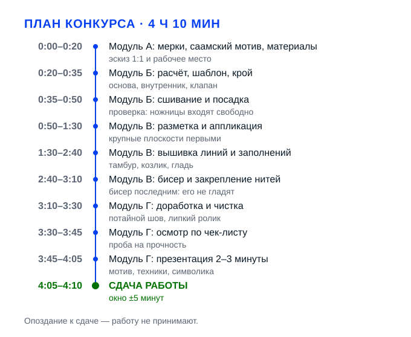
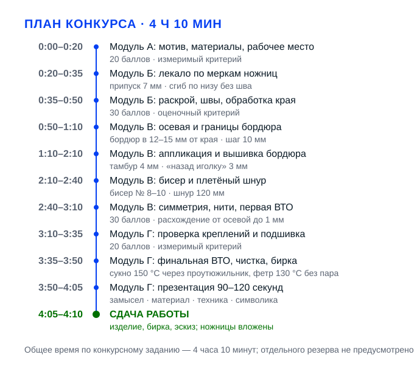
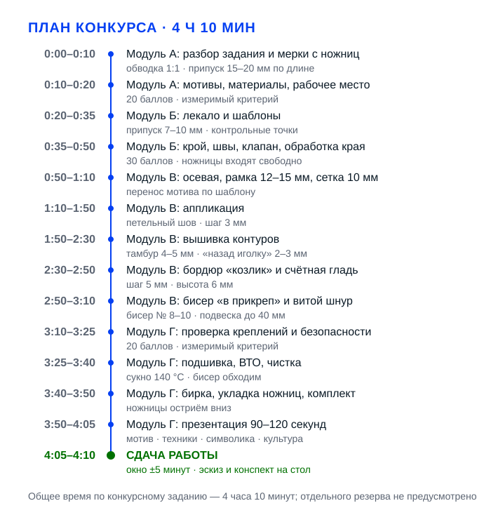

Мастер народно-художественных промыслов (Саамское рукоделие) (Р)
Задания ниже — официальные файлы «Абилимпикс» (источник: abilympics-russia.ru), разложенные по категориям. Решения написаны по тексту задания, регламенту и критериям оценки; в них указано, что именно проверяет эксперт.
Школьник
14–16 лет, базовый уровень заданияВыдержка из официального конкурсного задания: страницы, относящиеся к категории «Школьник» (стр. 7–8, 11–12 источника).
Пошаговое решение
Разбор официального конкурсного задания категории «Школьники»: за 4 часа 10 минут нужно сделать футляр для ножниц с саамским орнаментом. Работа идёт четырьмя модулями: модуль А — 20 минут на знакомство с саамскими узорами и подготовку материалов, модуль Б — 30 минут на базовую форму футляра, модуль В — 2 часа 20 минут на украшение вышивкой, аппликацией и бисером, модуль Г — 1 час на доработку и презентацию. Оценивают не фантазию саму по себе, а четыре результата из задания: подготовленную базу, основу под размер ножниц, чёткие орнаменты и символы, отражающие культурное наследие, и аккуратное изделие с осмысленным рассказом о нём. Ниже — весь путь по шагам, с размерами, приёмами шва и типичными ошибками.

Задача 1. Понять задание, разобрать саамский мотив и подготовить местоМодуль А · 20 минут · подготовительная база
Модуль А короткий — двадцать минут, но именно он задаёт остальное: от точности мерок зависит, полезет ли изделие на ножницы, а от выбранного мотива — будут ли в работе «чёткие орнаменты и символы». За это время нужно измерить ножницы и записать числа, разобрать по образцам саамские узоры и выбрать главный мотив, принять и проверить материалы с инструментами и убрать со стола всё, что может испортить работу или поранить руки. Спешка на мерках оборачивается переделкой уже сшитого футляра, а спешка на мотиве — тем, что узор не читается как традиционный.
Действие 1.1. Снять мерки с ножниц и записать их
Шаг 1.1.1
Кладём ножницы на лист бумаги и измеряем линейкой три величины. Первая — общая длина от кончика клинка до дальнего края колец, у школьных ножниц это обычно 170–200 мм. Вторая — ширина по кольцам в самой широкой части, чаще всего 70–85 мм. Третья — толщина пакета в зоне винта: складываем ножницы и смотрим, насколько они выступают над столом, обычно это 8–12 мм. Все три числа пишем на листе в миллиметрах, а не «примерно ладонь», и подписываем, что именно измерено.
Результат модуля Б в задании описан прямо: основа должна соответствовать размерам ножниц, чтобы инструмент легко помещался внутри. Проверить это на глаз невозможно, поэтому первым делом появляются числа. Кроме того, записанные мерки — это доказательство расчётного подхода: эксперт по ним видит, что размер футляра не случайный, а выведен из инструмента.
На листе три подписанных числа, и при повторном замере они совпадают с точностью до 1–2 мм. Если разница больше, значит, линейка стояла косо: прикладываем её строго вдоль оси ножниц, а не по диагонали.
Мерить «по памяти» или сразу обводить ножницы, не записав числа: обводка даёт контур, но не даёт припуска, и футляр получается впритык. Из такого изделия ножницы потом вынимаются с усилием, а шов у горловины расходится уже на сдаче.
Эксперт подходит к столу в первые минуты модуля А и смотрит, есть ли измерительный инструмент и записи: это первое свидетельство того, что участник работает по расчёту.
Шаг 1.1.2
На этом же листе проверяем мерки на бумаге: чертим прямоугольник длиной «длина ножниц + 30 мм» и шириной «ширина по кольцам + 12 мм», обводим ножницы внутри и смотрим на просвет. По длинной стороне сверху должен остаться запас 15–20 мм на клапан или на подгибку, по узким сторонам — по 5–6 мм свободного облегания, чтобы ткань не натягивалась на кольца. Если кончики клинков упираются в линию, прямоугольник удлиняем.
Запас по длине — это не «на всякий случай», а рабочая необходимость: в футляр ножницы опускают клинками вниз, и верхний край должен закрывать кольца или подгибаться под них. Без свободного облегания по ширине трикотажная подкладка натягивается, шов идёт волной, и изделие перестаёт выглядеть аккуратно — а аккуратность указана в результате модуля Б.
Ножницы лежат внутри контура, бумага не подворачивается, между клинком и линией виден зазор. Проверьте пальцем: проведите вдоль контура — нигде ножницы не выходят за карандашную линию. Проверка занимает минуту, зато снимает половину споров о размере на защите.
Сделать шаблон строго по обводке, без припусков: при сшивании двух слоёв деталь садится на 3–5 мм, и готовый футляр оказывается тесным. Вторая ошибка — заложить слишком большой запас, тогда ножницы болтаются и выпадают.
Опытный эксперт сразу смотрит на соотношение длины футляра и ножниц: слишком короткое или слишком просторное изделие видно ещё до выворачивания. Отдельно эксперт смотрит, остались ли на бумаге следы пересчёта, — это признак вдумчивой работы.
Шаг 1.1.3
Расписываем время по модулям на том же листе: 20 минут на подготовку, 30 минут на основу, 2 часа 20 минут на украшение и 1 час на доработку с презентацией, всего 4 часа 10 минут. Ставим себе четыре контрольные точки — 0:20, 0:50, 3:10 и 4:10 — и отдельно отмечаем, что последние 15 минут модуля Г уйдут на рассказ, а не на шитьё. Часы на площадке стоят на видном месте, и сверяться с ними нужно не один раз.
Распределённое время — единственный способ не оказаться в ситуации, когда за полчаса до сдачи не пришит бисер. Модуль В занимает больше половины конкурса, и именно там чаще всего теряют счёт времени: вышивка затягивает. Контрольные точки дают возможность вовремя упростить мотив, а не бросать его на середине.
Четыре отметки записаны, и вы помните, что должно быть готово к каждой: к 0:20 — материалы и эскиз, к 0:50 — сшитая основа, к 3:10 — украшенный футляр, к 4:10 — сданная работа с презентацией. Отметьте на листе часы сдачи работы: 4 часа 10 минут от старта, и опоздание к сдаче не компенсируется готовым изделием.
Планировать «как пойдёт»: в результате к третьему часу основа только сметана, а украшение делается в спешке, из-за чего стежки идут косо, а бисер пришит на живую нитку. Третья по частоте ошибка — считать, что время модулей идёт отдельными отрезками и его можно «добрать» позже: часы на площадке одни для всех.
Эксперт оценивает организацию работы в течение всего конкурса и по контрольным точкам видит, укладывается участник или нет. Если участник смотрит на часы в момент контрольной точки и меняет темп, это оценивается как управление временем.
Действие 1.2. Разобрать саамский орнамент и выбрать мотив
Шаг 1.2.1
Раскладываем перед собой образцы и изображения, которые выданы на площадке или принесены с собой, и ищем в них повторяющиеся элементы. Саамский орнамент строится на геометрии: ромбы и цепочки ромбов, зигзаг, треугольники, «оленьи рога» с раздвоенным верхом, «след оленя» в виде двух косых чёрточек, «рыбья кость», восьмиконечная звезда-солнце и полосы-пояса. Выписываем на лист пять мотивов, которые встретились чаще других, и подписываем, что в них общего.
В задании сказано: украшать футляр, «вдохновляясь традиционными узорами», и соблюдать традиционные мотивы. Это значит, что произвольный цветочек или сердечко не подойдут — нужен узнаваемый геометрический ряд. Разбор образцов занимает пять минут и снимает главный риск модуля В: сделать красиво, но не про саамскую культуру.
На листе пять мотивов с названиями, и вы можете показать, из какого образца взят каждый. Если мотив не получается назвать, значит, он разобран поверхностно — вернитесь к картинке и обведите его контур карандашом.
Сразу начать рисовать «что-то северное» по памяти: получается смесь скандинавских и русских мотивов, которая на защите не подтверждается ни одним образцом. Вторая ошибка — взять слишком сложный узор, который невозможно выполнить за отведённые часы.
Эксперт смотрит на эскиз и на изделие вместе: совпадает ли заявленный мотив с тем, что вышито, и читается ли он как традиционный. Если участник путает названия мотивов, эксперт просит показать образец, из которого взят узор.
Шаг 1.2.2
Выбираем один главный мотив и один поддерживающий. Главный — тот, который будет читаться издалека: крупный ромб, звезда-солнце или полоса «оленьих рогов» по клапану. Поддерживающий — мелкий: цепочка треугольников, зигзаг или точки-бисер по краю. К мотиву подбираем цвета: саамская палитра держится на красном, синем, жёлтом, белом и зелёном на натуральном фоне сукна или замши. Достаточно трёх цветов плюс белая обводка, которая разделяет плоскости.
Гармоничное оформление прямо названо в описании модуля В, а критерий «чёткие орнаменты и символы» подразумевает, что узор читается, а не расплывается в пёстрое пятно. Три цвета держат композицию: глаз выделяет главный мотив и видит подчинённые ему детали. Пять-шесть цветов в маленьком футляре сливаются, и работа выглядит небрежной.
Выбранный мотив можно описать одной фразой, а цвета укладываются в три оттенка плюс белый. Посмотрите на эскиз с расстояния вытянутой руки: главный элемент должен быть виден сразу. Проверьте, что выбранный мотив повторяется хотя бы дважды: одиночный элемент читается как случайный.
Набрать все понравившиеся цвета: футляр получается ярким, но дробным, и главный мотив теряется. Вторая ошибка — взять только красный и синий без разделительной обводки: детали сливаются по тону. Третья ошибка — взять цвет, которого нет в палитре образцов: на защите такой выбор трудно обосновать.
Эксперт оценивает цветовое решение по готовому изделию, но следит и за тем, как участник обосновывает выбор цветов на защите. Отдельно отмечается, может ли участник назвать цвет словами: «алый», «васильковый», «белёный лён», а не «красненький».
Шаг 1.2.3
Рисуем эскиз в натуральную величину, то есть в тех самых размерах, которые записали по ножницам. Распределяем элементы по плоскости: крупный мотив — в верхней трети лицевой стороны, полоса по клапану, бисерная дорожка вдоль бокового шва, мелкий зигзаг по низу. Подписываем на эскизе технику для каждого элемента: где аппликация из фетра, где тамбурный шов, где бисер. Эскиз крепим скотчем к столу, чтобы он не съезжал и не пачкался.
Эскиз в масштабе 1:1 экономит целый час в модуле В: по нему размечают лицевую сторону, не пересчитывая размеры заново. Кроме того, распределение элементов заранее исключает скученность в одном углу — типичную ошибку, когда аппликация лепится туда, где удобнее держать иглу.
На эскизе видны все элементы с подписанными техниками, размеры совпадают с шаблоном основы. Приложите эскиз к выкройке — границы должны совпасть. Эскиз должен читаться без пояснений: посторонний человек по нему понимает, где будет крупный мотив, а где бисер.
Рисовать эскиз «на глазок», без привязки к размерам основы: при переносе на ткань мотив не влезает или съезжает на шов. Вторая ошибка — не указать техники и потом импровизировать на каждом элементе. Третья ошибка — рисовать эскиз уже после того, как выкроена основа: размеры не сходятся, и композицию приходится менять на ходу.
Эксперт сверяет эскиз и готовое изделие: расхождение больше чем на треть замысла читается как отсутствие плана. Часто звучит просьба показать эскиз в модуле В, когда узор на изделии расходится с замыслом.
Действие 1.3. Принять материалы и разложить инструменты
Шаг 1.3.1
Принимаем набор по списку и считаем всё, что можно посчитать: лоскуты фетра или сукна, отрез подкладки, мотки мулине, пакетик бисера, тесьму, шнур. Проверяем, что материалов хватает не впритык, а с запасом на одну переделку: фетра нужно столько, чтобы выкроить две пары деталей, а ниток — не меньше двух метров на каждый цвет. Недостачу показываем эксперту сразу, в модуле А, пока замена ещё возможна.
В модуле А требуется подобрать материалы и подготовить инструменты, и это проверяется как результат: подготовительная база должна быть создана. Если не хватит бисера на второй ряд или фетра на повторный крой, спасти работу будет нечем — на площадке материалы не продают, а обмен с другими участниками запрещён правилами.
Каждая позиция списка отмечена, количество пересчитано, запас на переделку есть. Проверьте самое уязвимое: хватает ли ниток того цвета, которым будете шить контур. Отдельно проверьте бисер: его должно хватить на две дорожки по 50 мм, то есть минимум на 40 бисерин сверх задуманного.
Надеяться, что «ниток хватит»: обрыв или распускание шва оставляют работу без нити нужного оттенка, и приходится менять всю цветовую схему. Вторая ошибка — молчать о недостаче: после старта её не восполнят.
Эксперт фиксирует полноту набора в начале конкурса и отдельно отмечает, умеет ли участник оценивать расход материалов. Опытный эксперт по количеству отложенного материала видит, планирует участник работу или берёт «что дали».
Шаг 1.3.2
Проверяем то, что нельзя проверить глазами. Нитки тянем за концы: гнилая или старая шерсть рвётся от лёгкого усилия. Мулине трём влажным белым лоскутом: если остаётся след, нить полиняет, и её нельзя класть рядом со светлым фетром. Бисер пересыпаем на белый лист и смотрим, одинаковы ли бисерины по размеру и нет ли закрытых отверстий — такие откладываем в сторону, они всё равно не пройдут через иглу. Иглы проверяем на острие: тупая игла рвёт фетр, а не прокалывает его.
Свойства материалов определяют всю дальнейшую работу: линящая нить испортит светлую аппликацию за один вечер, а разнокалиберный бисер даст бугры в бисерной дорожке. Проверка занимает три минуты, а переделка — полтора часа из модуля В, которые потом не вернуть.
Нитки держат вес мотка и не рвутся от рывка, лоскут после трения остаётся белым, бисер отобран по размеру, иглы острые. Отложенный брак лежит отдельно, а не в общей коробочке. Проверку ниток на линьку делайте на лоскуте, который не пойдёт в работу, — влажный след на готовой детали останется навсегда.
Шить первой попавшейся нитью: она лопается на середине шва, и приходится распарывать. Вторая ошибка — взять слишком толстую иглу для мелкого бисера: она скалывает бусины и расширяет отверстия. Третья ошибка — брать бисер на глаз, не пересчитав: в середине дорожки его не хватает, и ряд получается рваным.
Эксперт может спросить, почему выбран именно этот материал: понимание свойств фетра, сукна и мулине входит в культуру ремесла. Могут спросить и о разнице плотности фетра и сукна: это базовый вопрос по материалам для школьной категории.
Шаг 1.3.3
Организуем стол по зонам, чтобы не искать иглу под лоскутами. Слева и чуть впереди — материалы: фетр, подкладка, лоскуты для аппликации в отдельном конверте. Справа — инструменты: ножницы, иглы в игольнице, булавки в подушечке, напёрсток, мелок или исчезающий маркер, линейка, картон для шаблонов. В центре — рабочая плоскость размером хотя бы 30 × 40 см. Бисер высыпаем в лоток с ворсистым дном, а не на стол: ворс не даёт бусинам раскатываться.
Правильная организация прямо названа в перечне работ модуля А: подготовка рабочего пространства. Она влияет на скорость: каждое движение за инструментом через весь стол — это потерянные секунды, которых в модуле В не хватает. Плюс порядок снижает риск, что открытая булавка попадёт под ладонь.
Все инструменты в пределах вытянутой руки, лоток с бисером стоит устойчиво, обрезки складываются в отдельную коробку, а не сметаются на пол. Проверьте: потянувшись за ножницами, вы не задеваете лоток.
Разложить всё кучей в центре: лоток опрокидывается от движения локтя, бисер рассыпается, и на сбор уходит двадцать минут. Вторая ошибка — держать обрезки на рабочей плоскости: они прилипают к фетру и попадают под шов.
Эксперт проходит по площадке в начале работы и отмечает, организовано ли место: хаос на столе обычно сопровождается хаосом в последовательности операций.
Действие 1.4. Снять риски и настроить свет
Шаг 1.4.1
Проговариваем для себя правила безопасности, потому что работа идёт с колющими и режущими предметами. Ножницы передаём только кольцами вперёд и держим сомкнутыми, когда кладём на стол; не режем на весу и не направляем лезвие на себя. Иглы держим в игольнице, а не воткнутыми в лоскут, рабочую иглу не берём в рот. Бисер не подносим к лицу и не оставляем на краю стола. Упавшую иглу или бусину поднимаем сразу, а если рассыпалось много — собираем магнитом или куском скотча, а не ладонью.
Техника безопасности вынесена отдельным пунктом в последовательности работы модуля А. На конкурсе за нарушение могут остановить работу, а травма означает, что изделие не будет сдано вообще. Кроме того, аккуратность в обращении с инструментом — часть общей культуры ремесла, которую эксперт видит постоянно.
Иглы только в игольнице, ножницы на столе сомкнуты, на полу под столом чисто. Проверьте зону под локтями: там не должно быть открытых булавок и рассыпанного бисера. Проговорите вслух три правила, которые чаще всего нарушают: ножницы кольцами вперёд, игла в игольнице, упавший бисер сразу убрать.
Работать, держа иглу в зубах или закалывая её в фартук: именно так происходят самые частые травмы. Вторая ошибка — оставить ножницы раскрытыми на краю стола: они падают лезвием вниз. Третья ошибка — оставить на столе раскрытые ножницы рядом с лотком бисера: одно неловкое движение опрокидывает всё сразу.
Эксперт смотрит на обращение с инструментом в течение всего конкурса, а не только на вводном инструктаже. Нарушение техники безопасности эксперт фиксирует сразу, а не «накапливает» к концу конкурса.
Шаг 1.4.2
Настраиваем свет и посадку. Лампу ставим со стороны рабочей руки так, чтобы тень от руки не падала на место стежка: для правши — слева и чуть впереди, для левши — справа. Свет должен быть ярким и ровным, без пульсации; вблизи стола его достаточно, если мелкий бисер виден без напряжения. Стул подвигаем так, чтобы локти лежали на столе, а спина оставалась прямой; расстояние от глаз до работы — около тридцати сантиметров, иначе через час начнёт болеть шея и стежки пойдут неровно.
Мелкая работа при плохом свете — главная причина усталости и ошибок в счёте стежков: глаз перестаёт различать, где кончается один ромб и начинается второй. Правильная посадка сохраняет точность до последнего часа модуля В, когда концентрация уже падает. Это косвенно влияет на аккуратность, которая оценивается в каждом модуле.
Тень не закрывает рабочую зону, бисерины различимы по цвету, локти на столе, спина не завалена. Проверьте на пробном лоскуте: видно ли отдельную нить в три сложения. Убедитесь, что стол не блестит: глянцевая поверхность даёт блик, который мешает видеть мелкие стежки.
Сесть под лампу так, что тень от собственной руки закрывает иглу: сначала это раздражает, потом приводит к пропущенным стежкам. Вторая ошибка — работать, низко склонившись над столом: к третьему часу спина перестаёт держать, и точность падает.
Эксперт отмечает условия, которые участник создал себе сам: это часть оценки организации рабочего места. Иногда участника просят пересесть, если тень падает на работу: это проверка способности замечать помехи.
Задача 2. Рассчитать и выкроить детали основыМодуль Б · 30 минут · расчёт, шаблон, крой
Модуль Б длится тридцать минут, и результат у него конкретный: готовая базовая форма, соответствующая размерам ножниц, аккуратно выполненная и подготовленная к декоративной отделке. Порядок жёсткий: расчёт, картонный шаблон, крой и только потом игла; если кроить сразу по линейке, одна сторона выходит шире другой, а клапан короче, и это видно уже после выворачивания. В модуле вы выбираете материал основы, переводите мерки в размеры с припусками и выкраиваете основу, внутренник и клапан.
Действие 2.1. Перевести мерки в размеры и вычертить шаблон
Шаг 2.1.1
Переводим три мерки в размеры детали по простым правилам. Длина детали равна длине ножниц плюс 30 мм: 15 мм уходит на клапан или подгибку, 10 мм — на свободное облегание, остальное — припуск. Ширина равна ширине по кольцам плюс 15 мм: по 5 мм облегания с каждой стороны и по 2,5 мм на шов. Если ножницы длиной 180 мм и шириной 80 мм, деталь получается 210 × 95 мм; для ножниц 200 × 85 — 230 × 100 мм. Все числа выписываем на эскизе рядом с контуром.
Эти пятнадцать и десять миллиметров — не произвольные цифры: в сшитом виде два слоя толщиной 2–3 мм забирают часть зазора, и деталь без запаса садится на ножницы как чехол на палец. Требование модуля Б сформулировано прямо — основа должна соответствовать размерам, чтобы ножницы легко помещались внутри, и проверяется это рукой, а не линейкой у эксперта.
Размеры записаны и пересчитаны дважды: длина и ширина отличаются от мерок ножниц ровно на 30 и 15 мм. Прикиньте на пальцах: если деталь 210 мм, а ножницы 180, запас по длине — чуть больше спичечного коробка.
Считать «плюс сантиметр на всё»: при таком запасе шов съедает облегание, и ножницы входят с трением, а подкладка морщится. Вторая ошибка — не учитывать толщину материала: у толстого сукна внутренний объём меньше, чем у тонкого фетра при тех же размерах.
Эксперт сверяет готовое изделие с ножницами и по посадке видит, был ли расчёт или участник кроил интуитивно. Если участник затрудняется назвать размеры детали, эксперт делает вывод, что крой шёл без расчёта, и проверяет посадку особенно внимательно.
Шаг 2.1.2
Вычерчиваем шаблон на плотном картоне толщиной 1–1,5 мм: он не размокнет от мела и выдержит десяток обводок. Строим прямоугольник по расчётным размерам, нижний угол скругляем радиусом 12–15 мм — так ножницы не пробивают угол, а верх делаем с небольшим скосом или отдельным клапаном высотой 15 мм. Второй контур проводим параллельно первому на расстоянии 8 мм — это припуск на шов. На шаблоне подписываем: «основа», «внутренник», «клапан», а также рисуем ось симметрии и линию сгиба.
Картонный шаблон нужен не для красоты: он позволяет выкроить внутренник и основу по одной линии, поэтому детали совпадают по контуру. Именно совпадение контуров даёт ровный шов и аккуратную форму, а аккуратность выполнения входит в результат модуля Б. Без шаблона вторая деталь всегда выходит на 3–5 мм другой.
Два контура проведены параллельно, расстояние между ними одинаково по всей длине — проверьте линейкой в четырёх точках. Шаблон симметричен: сложите его пополам по оси, половинки должны совпасть без просвета.
Чертить припуск «на глаз»: на скруглениях он сужается до 3 мм, и именно там шов расходится при выворачивании. Вторая ошибка — сделать шаблон из тонкой бумаги: он сминается, и линия кроя уползает. Третья ошибка — делать шаблон без оси симметрии: при обводке деталь зеркалится, и клапан оказывается сбоку.
Эксперт смотрит на картонный шаблон как на рабочий документ: по нему видно, умеет ли участник строить конструкцию. Наличие шаблона эксперт отмечает в оценочном листе как отдельный технологический шаг, а не как вспомогательную мелочь.
Шаг 2.1.3
Проверяем шаблон на макете, не разрезая ткань. Кладём картонную деталь на лист бумаги, обводим, складываем бумажный макет пополам по оси и склеиваем боковые срезы — получается коробочка в размер. Опускаем в неё ножницы клинками вниз и смотрим: кольца должны выступать над краем на 15–20 мм, а клинок не должен упираться в дно. Если макет тесен, увеличиваем ширину на 5 мм и повторяем проверку.
Бумажный макет стоит две минуты и заменяет целую переделку: ошибка в расчёте видна сразу, пока материал целый. Это тот момент, когда размер можно исправить бесплатно, — после кроя исправление означает новую деталь, а фетра в обрез. Исправить размер на бумаге — две минуты, исправить его на сшитом изделии в модуле Б невозможно.
Ножницы входят и выходят из макета свободно, кольца выступают над верхним краем, дно не пробивается кончиками. Проверьте и в закрытом, и в открытом положении: в открытом ножницы шире. Стоит проверить макет и с открытыми ножницами: в раскрытом виде они занимают больше места.
Пропустить макет и сразу кроить: обнаруживается, что ножницы входят только до половины, уже после сшивания. Вторая ошибка — проверять только закрытые ножницы, забывая, что в открытом положении они занимают больше места.
Эксперт может попросить показать, как участник убедился в правильности размеров: макет или расчёт на бумаге — убедительный ответ. Макет из бумаги эксперт воспринимает как расчётную работу, а не как лишнюю трату времени.
Действие 2.2. Выкроить основу, внутренник и клапан
Шаг 2.2.1
Выбираем материал основы и раскладываем его правильно. Фетр толщиной 2–3 мм даёт форму без дополнительного каркаса, сукно и драп мягче и требуют подкладки, тонкий фетр 1 мм пойдёт только на аппликацию. Лоскут кладём ворсом вниз, а шаблон располагаем так, чтобы долевая нить шла вдоль длинной стороны: тогда деталь не вытянется при носке. Обводим шаблон мелком или исчезающим маркером по внешнему контуру, прижимая его ладонью, чтобы не сдвинулся.
Направление долевой — не формальность: по поперечной нити трикотажное полотно и рыхлый фетр растягиваются, и футляр через неделю становится длиннее и уже. Задание разрешает использовать ткань, фетр или сукно, и выбор материала обосновывается именно задачей держать форму, а не только цветом.
Контур обведён одной непрерывной линией без двойных штрихов, долевая идёт вдоль длинной стороны, на материале остаётся запас для второй детали. Поднимите шаблон: линия должна быть видна целиком. Проверьте, что обводка не раздвоилась: двойной штрих даёт лишние 2–3 мм по краю.
Обвести шаблон по поперечной нити или по косой: деталь тянется, и после набивки ножницами футляр перекашивается. Вторая ошибка — разложить детали так, что на внутренник материала уже не хватает. Третья ошибка — кроить по памяти, не сверившись с шаблоном: деталь выходит на 5 мм уже расчётной.
Эксперт оценивает не только готовую вещь, но и раскладку: экономность и учёт направления нити — признак ремесленной грамотности. Смотрят и на остатки материала: аккуратная раскладка оставляет мало отходов, и это видно по лоскуту.
Шаг 2.2.2
Вырезаем по внешнему контуру ножницами для ткани, а не теми, что лежат в наборе для бумаги: бумажные ножницы мнут фетр. Ведём длинными движениями от края лоскута, держим лезвие вертикально, не поднимаем материал высоко над столом — иначе линия уходит. На скруглениях поворачиваем не ножницы, а материал. В контрольных точках, намеченных на шаблоне, делаем надсечки глубиной 2 мм, чтобы потом совмещать детали без сдвига.
Ровный срез — основа ровного шва: если край идёт волной, припуск получается то 4, то 10 мм, и шов ложится с перекосом. Надсечки решают вторую проблему — симметрию: по ним внутренник и основа складываются точно, а это прямо влияет на то, насколько аккуратной выглядит готовая базовая форма.
Линия среза непрерывная, без ступенек и «закусов», припуск по всему контуру одинаковый. Проведите пальцем по краю: он должен быть гладким, без торчащих волокон. Сложите вырезанную деталь пополам по оси: половинки должны совпасть, а линия сгиба — идти ровно, без залома в сторону.
Резать короткими «щипками», поворачивая ножницы на весу: край получается рваным, а на фетре остаются заломы. Вторая ошибка — резать по внутреннему контуру, забыв про припуск: деталь выходит меньше расчётной.
Эксперт смотрит на крой в процессе: ровность среза и одинаковость припуска видны сразу и переносятся в оценку аккуратности. Раскладка деталей и количество отходов тоже видны: экономный крой оценивается как часть организации работы.
Шаг 2.2.3
Выкраиваем внутренник и клапан. Внутренник — из тонкого хлопка, льна или бязи: он закрывает изнанку шва и не даёт ножницам цепляться за стежки. Кроим по тому же шаблону, но без припуска на шов, то есть по внутреннему контуру, и без 2 мм по боковым срезам, чтобы подкладка не выглядывала наружу. Клапан выкраиваем отдельной деталью высотой 20 мм и шириной по верхнему краю плюс 10 мм на подгибку. Все три детали подписываем с изнанки или скалываем булавкой с бумажной биркой.
Подкладка выполняет две задачи: закрывает узелки и придаёт жёсткость горловине, поэтому ножницы не проваливаются. Если внутренник выкроен с тем же припуском, при выворачивании он вылезает за край на 2–3 мм и портит лицевую сторону — а лицевая сторона и аккуратность входят в оценку модуля Б.
Внутренник меньше основы по контуру, детали подписаны, клапан имеет запас на подгибку. Сложите детали: подкладка не должна выходить за срез основы ни в одной точке. Проверьте, что внутренник не выглядывает: сколотый пакет должен показывать только основу, подкладка — уходить внутрь на 2 мм.
Кроить подкладку по внешнему контуру «чтобы не ошибиться»: она выглядывает из шва, и работа получает вид недоделанной. Вторая ошибка — забыть про клапан и потом пришивать его к уже вывернутому изделию.
Эксперт проверяет внутреннюю сторону так же внимательно, как лицевую: подкладка и обработка изнанки — часть профессионального уровня. Если подкладка выкроена из той же ткани, что и основа, эксперт отмечает это как потерю жёсткости горловины.
Задача 3. Сшить каркас, вывернуть и проверить посадкуМодуль Б · вторая половина · сшивание и проверка
Сшивание — самая ответственная часть модуля Б: здесь закладывается прочность, а задание требует, чтобы каркас был устойчивым и удобным для хранения ножниц, и проверяется аккуратность. Работа идёт в три приёма: слои складываются лицом к лицу и сметываются контрастной нитью, затем прокладывается постоянный шов с закрепками, потом припуски подрезаются, изделие выворачивается и отутюживается. Пропускать сметку нельзя: без неё слои сдвигаются на 2–3 мм, и перекос уже не исправить.
Действие 3.1. Сложить слои и сметать
Шаг 3.1.1
Складываем основу и внутренник лицевыми сторонами внутрь, совмещаем надсечки контрольных точек и скалываем булавками перпендикулярно линии шва, а не вдоль неё. Булавки ставим через 15–20 мм, на скруглениях — через 8–10 мм, отступая от среза на 10 мм. Головки булавок оставляем снаружи контура, чтобы не цеплять их иглой, и сразу закрываем замок на тех булавках, где он есть.
Сколотые слои не смещаются при прокладывании шва, а смещение даже в 3 мм на скруглении даёт складку на лицевой стороне. Аккуратность выполнения указана в результате модуля как обязательное качество, а складки и защипы — первый её враг. Кроме того, булавки, поставленные вдоль шва, выгибают край и мешают вести иглу ровно.
Детали лежат ровно, срезы совпадают по всему контуру, булавки не выглядывают на лицевую сторону. Проверьте с изнанки: не осталось ли булавки внутри пакета. Сколотый пакет можно поднять за один край: детали не разъезжаются и не провисают между булавками.
Сколоть по срезу, не отступив от края: игла цепляет булавку, шов идёт рывком, а на материале остаётся прокол. Вторая ошибка — сколоть редко и надеяться на сметку: слои всё равно разъедутся. Третья ошибка — скалывать детали, не совместив надсечки: срезы уходят на 3–4 мм, и шов получается косым.
Эксперт подходит и смотрит на сколотый пакет: ровные срезы и правильные булавки видны без разбора работы. По расстановке булавок эксперт видит, понимает ли участник, зачем они нужны: булавка вдоль шва — типичная ошибка новичка.
Шаг 3.1.2
Сметываем швом «вперёд иголку» контрастной нитью, стежками 5–7 мм с пропуском 3–4 мм, отступая от среза 4–5 мм. Начинаем от метки, а не от угла, ведём по всему контуру, на скруглениях стежок укорачиваем до 3 мм. Концы сметки не завязываем узлом, а оставляем свободными по 15 мм: их потом легко вытянуть. Нить берём длиной не больше вытянутой руки, чтобы она не путалась.
Сметка — это страховка: она держит слои, пока вы прокладываете постоянный шов, и её видно, если детали перекосились. Убрать сметку — тридцать секунд, исправить перекошенный шов после стачивания — вскрывать и переделывать, а времени в модуле Б всего тридцать минут.
Сметка идёт ровно, слои под ней не собираются в волну, концы свободны. Потяните за конец нити — она должна легко выходить, не разрывая материал. Сметка лежит ровно, стежки одинаковые, нить не натянута в струну и не провисает петлями.
Сметать толстой нитью в несколько сложений: она оставляет следы проколов на лицевой стороне фетра. Вторая ошибка — завязать узел: нить не вытянуть, придётся вытаскивать по стежку. Третья ошибка — сметать только по одной стороне: на второй слои разъезжаются, и шов идёт с перекосом.
Эксперт оценивает культуру шва, в том числе временного: аккуратная сметка говорит о навыке больше, чем ровная машинная строчка новичка. Сметку эксперт проверяет на просвет: если слои под ней пошли волной, постоянный шов тоже ляжет волной.
Шаг 3.1.3
Оставляем в шве отверстие для выворачивания длиной 35–40 мм. Располагаем его по нижнему срезу, ближе к одному из боков, а не по центру дна: через центр потом труднее расправить углы. Границы отверстия отмечаем мелком двумя поперечными чёрточками и в этих местах ставим закрепки сметочными стежками по три-четыре, чтобы шов не пошёл дальше. Отверстие должно быть шире, чем кажется: узкое не даст вывернуть скруглённые углы.
Через это отверстие изделие выворачивается на лицевую сторону, и если оно меньше 30 мм, углы не расправляются: получаются заломы, которые уже не отутюжить. Отверстие по центру дна — вторая ловушка: после зашивания там остаётся утолщение, и футляр стоит на столе неровно.
Отверстие размечено, его края закреплены, длина не меньше 35 мм. Проверьте пальцем: в отверстие должны проходить два пальца, а не один. Убедитесь, что отверстие не попало на скругление: там его края труднее зашить потайным швом.
Оставить отверстие 20 мм «потом растянется»: фетр не тянется, углы выходят мятыми. Вторая ошибка — забыть закрепить края отверстия: при стачивании оно затягивается и исчезает. Третья ошибка — оставить отверстие в самом узком месте, на скруглении: через него не вывернуть угол, и он останется мятым.
Эксперт видит отверстие при выворачивании и отмечает, спланировано ли оно заранее или получилось случайно. Замечают и следы распарывания на месте отверстия: они указывают на переделку в спешке.
Действие 3.2. Проложить постоянный шов и обработать припуски
Шаг 3.2.1
Прокладываем шов по контуру, отступая 4–5 мм от среза. На машинке это прямая строчка с длиной стежка 2,5–3 мм, лапка идёт по краю, иглу не поднимаем на скруглениях, а поворачиваем изделие. Если шьём руками, берём шов «назад иголку»: стежок 3 мм, каждый новый стежок возвращается на половину предыдущего, нить в два сложения. Начинаем и заканчиваем двойной закрепкой по три стежка в одном месте.
Шов «назад иголку» по прочности почти не уступает машинному, а на фетре он выглядит ровнее и не тянет край. Закрепки в начале и в конце — единственное, что удерживает шов от распускания, а задание требует устойчивого каркаса, который выдержит постоянное вынимание и вкладывание ножниц.
Шов ровный, расстояние до края одинаковое, стежки не стягивают материал. Потяните изделие за края в разные стороны: строчка не должна трещать и расходиться. Проверьте строчку на изнанке: там не должно быть петель и «бороды» — признака неправильно заправленной нити.
Шить «вперёд иголку» вместо «назад иголку»: такой шов держится на одной нити и расходится при нагрузке. Вторая ошибка — вести шов в 8–10 мм от края: припуск потом не подрезать, а на скруглении образуется грубый рубец.
Эксперт смотрит плотность и ровность строчки с изнанки: именно там видно, одинаков ли шаг стежка и нет ли пропусков. Длину стежка проверяют по всей линии: сбившийся шаг виден даже на тёмном материале.
Шаг 3.2.2
Делаем закрепки в нагруженных местах: у входа в отверстие для выворачивания, на верхних углах горловины и на концах клапана. Закрепка — это три-четыре стежка, проложенных в одном месте туда и обратно, с небольшим узелком с изнанки. На скруглениях уменьшаем длину стежка до 1,5–2 мм: длинный стежок на повороте не ложится по дуге, а срезает угол. На горловине закрепку делаем обязательно, иначе край растянется при первом вкладывании ножниц.
Именно на горловине и у клапана возникает постоянная нагрузка: ножницы входят и выходят, ткань растягивается, и без закрепки шов начинает распускаться с края. Короткий стежок на скруглении — единственный способ получить плавную дугу; это тот технический приём, по которому видно уровень владения ручным швом.
Закрепки заметны с изнанки как утолщения, скругления плавные, без гранёных углов. Проведите ногтем по дуге: она должна быть ровной, без ступеньки. Закрепки проверяются растяжением: потяните участок шва в стороны на 3–4 мм — стежки не должны расходиться.
Поставить закрепку толстым узлом: на лицевой стороне появляется шишка, которая не закрывается подкладкой. Вторая ошибка — оставить углы без закрепок, и они расходятся при первом же выворачивании. Третья ошибка — ставить закрепку одним длинным стежком: она не держит и распускается при натяжении.
Эксперт проверяет углы и горловину на прочность руками — это самая частая точка отказа в работах школьников. Если закрепок нет, эксперт отмечает это как технологическую ошибку, а не как мелочь: прочность — требование задания.
Шаг 3.2.3
Подрезаем припуски: срезаем их до 4–5 мм, оставляя у шва 2 мм, и ни в коем случае не задеваем нить шва. На скруглениях делаем надсечки через 5–7 мм, не доходя 2 мм до строчки: надсечка снимает натяжение и позволяет припуску развернуться в дугу. Углы, которые будут выворачиваться, срезаем наискось на 2–3 мм, чтобы после выворачивания они не выглядели комом. Работаем кончиками ножниц, а не серединой лезвия.
Толстый неразрезанный припуск на скруглении не даёт вывернуть деталь ровно: получаются заломы и «ушки», а на фетре они видны как бугры под подкладкой. Надсечки — стандартный приём портновской обработки скруглений, и без него аккуратность, заявленная в результате модуля, недостижима.
Припуск одинаковый по всему контуру, надсечки не пересекают строчку, углы срезаны. Выверните пробный уголок — он должен лечь плоско, без натяжения. Припуск после подрезки должен быть одинаковым на ощупь: проведите пальцем по кругу — ступенек быть не должно.
Надсечь слишком глубоко, задев нить: шов расходится именно в этом месте, и работа теряет прочность. Вторая ошибка — срезать припуск под ноль: край осыпается, и шов расползается. Третья ошибка — подрезать припуск после выворачивания: изнутри до шва уже не добраться, и утолщение остаётся навсегда.
Эксперт осматривает изнанку: ровные надсечки без повреждения строчки — признак того, что участник понимает, зачем делает операцию. Отмечают и то, как держат ножницы: работа кончиками лезвия у шва показывает понимание, середина лезвия — риск.
Действие 3.3. Вывернуть, отутюжить и посадить ножницы
Шаг 3.3.1
Выворачиваем изделие через оставленное отверстие. Берём тупой предмет — конец карандаша, деревянную палочку или обратную сторону кисти — и выталкиваем углы изнутри, не растягивая материал. Затем расправляем шов по ребру большим и указательным пальцами, проходя по всему контуру: шов должен встать точно на грань, а не уйти на лицевую сторону. Отверстие пока не зашиваем — сначала утюжка.
Правильно расправленный шов даёт чёткое ребро, и футляр держит форму даже без каркаса. Если шов остался сдвинутым, изделие выглядит перекошенным, а на светлом фетре видна тёмная полоса припуска. Это самая заметная ошибка при осмотре готовой базовой формы.
Углы расправлены, шов идёт по ребру, на лицевой стороне нет полосы припуска. Посмотрите на изделие сбоку: грань должна быть ровной линией, а не волной. Проверьте шов на ребре, проведя по нему ногтем: он должен идти по грани, а не съезжать на лицевую сторону.
Ковырять угол иглой: она прокалывает материал насквозь, и на лицевой стороне появляется дырка, которую уже не закрыть декором. Вторая ошибка — выворачивать, дёргая за шов: строчка растягивается. Третья ошибка — выворачивать изделие, не подрезав припуски: углы не выходят, и материал рвётся по волокну.
Эксперт проверяет изделие после выворачивания: именно в этот момент видно качество шва и аккуратность исполнения. В момент выворачивания эксперт обычно стоит рядом: это операция, где видно и навык, и аккуратность одновременно.
Шаг 3.3.2
Отутюживаем через влажную марлю или тонкий хлопок. Для шерстяного сукна и драпа утюг ставим на 150 °C, для фетра — не выше 110–120 °C и без сильного прижатия, иначе ворс приминается и остаётся ласа. Сначала проглаживаем шов с изнанки, затем лицевую сторону через ткань, затем ставим изделие на ребро и проутюживаем грань. Даём полностью остыть и высохнуть, прежде чем что-то вкладывать внутрь.
Утюжка фиксирует форму: остывший материал сохраняет то положение, в котором его высушили. Без этого футляр остаётся мятым, а на этапе декоративной отделки ткань ведёт себя непредсказуемо — аппликация садится волной. Кроме того, горячий утюг на влажном фетре оставляет пятна, которые портят вид готовой работы.
Изделие плоское, шов на ребре, ворс не примят, пятен нет. Вложите ножницы: они должны входить до упора и выниматься без усилия, кольца выступают на 15–20 мм. После утюжки изделие должно лежать плоско: положите его на стол и посмотрите, не качается ли оно на одном углу.
Гладить фетр напрямую горячим утюгом: ворс приминается, появляется лоснящееся пятно, которое невозможно убрать. Вторая ошибка — утюжить влажное изделие и сразу вкладывать ножницы: материал растягивается.
Эксперт обращает внимание на форму и на то, как сидит инструмент: это итог модуля Б и стартовая точка для декора. Пятна от утюга и лоснящиеся участки эксперт фиксирует как дефект, который уже не исправить на месте.
Задача 4. Украсить футляр саамским орнаментомМодуль В · 2 часа 20 минут · главный модуль конкурса
Модуль В — самый длинный, два часа двадцать минут, и именно он даёт результат, по которому судят работу: украшенный футляр в стиле саамского искусства, с чёткими орнаментами и символами. Три техники идут в определённом порядке: разметка мотива на готовой основе, аппликация из фетра или сукна, вышивка линий и заполнений, и только в конце бисер, потому что его нельзя гладить и трудно переделывать. Порядок «от крупного к мелкому» экономит время: крупные плоскости задают композицию. За двадцать минут до конца модуля украшение нужно остановить, даже если оно кажется незаконченным.
Действие 4.1. Разметить мотив на лицевой стороне
Шаг 4.1.1
Находим на лицевой стороне ось симметрии и центр композиции. Складываем футляр пополам по длине, прижимаем сгиб и проводим линию исчезающим маркером или мелком — это ось. Центр главного мотива ставим на 25–30 мм ниже верхнего края, чтобы клапан и бисерная дорожка не наезжали на узор. От оси в обе стороны откладываем одинаковые расстояния и ставим лёгкие точки: по ним потом проверяется симметрия и видно, не ушла ли разметка в сторону.
Симметрия — первое, что замечает глаз, и первое, что проверяет эксперт: футляр маленький, и перекос в 3 мм на нём виден так же отчётливо, как на большом панно. Ось, проведённая в начале, позволяет исправить разметку до того, как легли стежки, — а распоротый тамбурный шов оставляет на фетре следы проколов.
Ось проходит ровно по середине, расстояния от неё до парных точек совпадают. Проверьте линейкой в двух местах и посмотрите на изделие, повернув его к свету: линия не должна «гулять». Стоит убедиться, что линия не попала на скругление: на дуге разметка искажается, и ось визуально уходит в сторону.
Размечать на весу, держа футляр в руке: линия уходит, и весь узор смещается к одному краю. Вторая ошибка — ставить центр слишком высоко, у самой горловины, где узор заминается при вкладывании ножниц. Третья ошибка — размечать, не дав маркеру высохнуть: влажную линию смазывает ладонь, и часть точек приходится наносить заново.
Эксперт смотрит на разметку в первые минуты модуля В и отмечает, работает участник по плану или начинает шить сразу. Если разметка сделана по картонным шаблонам, эксперт отмечает это отдельно: шаблонный способ говорит о повторяемости и расчёте.
Шаг 4.1.2
Переносим контуры элементов с эскиза. Крупные детали обводим по картонным шаблонам, вырезанным по эскизу: прикладываем, прижимаем ладонью, обводим тонкой линией. Мелкие элементы (ромбы, треугольники, «оленьи рога») размечаем по линейке и считаем клетки: сторона ромба 8–10 мм, шаг между центрами 12 мм, зигзаг с шагом 6 мм и высотой 5 мм. Линию ведём исчезающим маркером: он выветривается за 6–12 часов и не оставляет следов, в отличие от простого карандаша на светлом фетре.
Разметка по шаблонам и счёту даёт повторяемость: все ромбы выходят одного размера, а ряд идёт ровно. Это и есть «чёткие орнаменты» из формулировки результата модуля В — чёткость здесь означает не яркость, а геометрическую точность и одинаковость повторяющихся элементов.
Парные элементы совпадают по размеру, шаг между ними одинаков, линии тонкие и не размазанные. Пройдитесь по разметке линейкой: отклонение больше 1 мм — повод стереть и нанести заново. Проверьте, что разметка не размазалась: линии должны быть тонкими и не давать серого ореола.
Рисовать от руки «как получится»: ромбы выходят разного размера, и орнамент теряет строй. Вторая ошибка — использовать жирный карандаш или ручку: след остаётся под светлой нитью и виден на просвет. Третья ошибка — размечать сразу все элементы, включая бисер, и потом сдвигать половину из них: следы маркера накапливаются и мешают видеть рисунок.
Эксперт сверяет разметку с эскизом и оценивает, сохранена ли геометрия мотива. Точность разметки эксперт сверяет с эскизом: расхождение в шаге повторяющихся элементов читается как потеря ритма орнамента.
Шаг 4.1.3
Проверяем границы безопасной зоны. От линии шва до ближайшего стежка оставляем не меньше 5 мм: шов проходит в 4–5 мм от края, и вышивка, положенная ближе, попадает в припуск. От верхнего края горловины отступаем 10 мм — там будет подгибка и клапан. Отмечаем на разметке, где пройдут бисерные дорожки: под бисер нужен запас по 2 мм с каждой стороны, потому что нить стягивает материал. Если элемент выходит за границы, его уменьшают, а не сдвигают на шов.
Вышивка в припуске — самая обидная потеря: работа выглядит целой, но при выворачивании и подшивке часть узора уходит в шов или оказывается на изнанке. Границы безопасной зоны нужно знать до первого стежка, потому что после аппликации перекроить композицию уже нельзя.
Все элементы внутри безопасной зоны, до шва не меньше 5 мм, до горловины — 10 мм. Приложите к разметке линейку и посмотрите на просвет: крайние стежки не должны выходить за контрольную линию. Проверьте запас у горловины: положите линейку от верхнего края — первая линия вышивки должна начинаться не раньше 10 мм.
Разместить узор по всей ширине детали, забыв про припуск: после сшивания крайние элементы срезаются. Вторая ошибка — расположить бисерную дорожку прямо по линии шва: бисер мешает игле и осыпается. Третья ошибка — расположить крупный мотив так, что он упирается в боковой шов: после сшивания он сужается и теряет форму.
Эксперт проверяет, не заходит ли декор в шов, — это одна из типичных потерь баллов на школьной категории. Если декор заходит в припуск, эксперт отмечает это как технологическую ошибку: часть узора уйдёт в шов при подшивке.
Действие 4.2. Выполнить аппликацию из фетра или сукна
Шаг 4.2.1
Вырезаем детали аппликации. Крупные плоскости — из фетра толщиной 1–2 мм или тонкого сукна: толстый материал 3 мм хуже ложится на скругления и даёт грубый край. Мелкие элементы кроим ножницами с прямыми кончиками, а если есть зигзагные — ими: зубчатый край потом закрывается петельным швом и не осыпается. Детали вырезаем без припуска, строго по разметке, и раскладываем на футляре в том порядке, в котором будем пришивать.
Аппликация — основная техника модуля В для школьников, и именно она даёт крупные цветовые пятна, на фоне которых читается вышивка. Тонкий материал нужен потому, что край детали обшивается петельным швом: на толстом фетре стежок не ложится плотно, между слоями остаётся щель, и аппликация выглядит накладной, а не вшитой в композицию.
Детали совпадают с разметкой по контуру, край ровный, без «ступенек». Наложите деталь на размеченный контур: просвет по краю должен быть одинаковым со всех сторон. Разложите вырезанные детали на футляре до пришивания: композиция должна читаться целиком, без наложений и щелей.
Кроить толстый фетр (3 мм) для мелких элементов: край получается рыхлым, а петельный шов не может его охватить. Вторая ошибка — вырезать деталь меньше разметки: тогда вокруг неё остаётся кайма фона, и контур читается неверно.
Эксперт смотрит на чистоту края аппликации: именно там видно, умеет ли участник работать с мелкими формами. Отдельно оценивается подбор оттенков: детали аппликации должны отличаться от фона по тону, а не только по цвету.
Шаг 4.2.2
Примётываем деталь к основе швом «вперёд иголку» тонкой нитью в цвет детали, стежками 4–5 мм по самому краю, отступая 1,5–2 мм. Затем обшиваем край петельным (обмёточным) швом: игла идёт изнутри наружу через край, нить ложится петлёй, стежки ставим через 3–4 мм, высота петли 3–4 мм — так, чтобы она захватывала и деталь, и основу. Нить берём в два сложения, мулине или тонкую шерсть, и работаем без сильного натяжения.
Петельный шов одновременно пришивает деталь и закрывает её срез, поэтому работа выглядит обработанной с обеих сторон. Примётка нужна, чтобы деталь не «поехала» под петельным швом: без неё край идёт волной, а на скруглённых формах появляются защипы. Гармоничное оформление изделия, названное в описании модуля, начинается именно с ровно обшитого края.
Петли одинаковой высоты, край закрыт полностью, основа не стянута. Проведите пальцем по контуру: не должно быть мест, где край детали выступает из-под шва. Проверьте натяжение: слегка потяните деталь в сторону — она не должна отходить от основы и не должна стягивать её.
Обшивать край швом «вперёд иголку»: срез фетра остаётся открытым и махрится, работа приобретает вид черновика. Вторая ошибка — тянуть нить: край собирается, и деталь садится на 2–3 мм меньше разметки.
Эксперт осматривает контур аппликации вблизи: плотность и высота петель — главный признак аккуратности в этой технике. Петельный шов смотрят с изнанки: там видно, захватывает ли стежок оба слоя или только верхний.
Шаг 4.2.3
Оформляем сложные места: внутренние углы, острые концы, пересечения деталей. Во внутреннем угле уменьшаем длину петельного стежка до 2 мм и ставим два стежка в одну точку — иначе угол стягивается и получается дырка. На остром конце последние три стежка кладём веером, поворачивая деталь, а не вытягивая нить. Когда одна деталь ложится на другую, сначала пришиваем нижнюю, затем верхнюю, и её край обшиваем поверх — так получается многослойная аппликация, характерная для северного шитья.
Многослойность — приём традиционного саамского рукоделия: узоры строились из наложенных друг на друга полос сукна разного цвета. Внутренние углы и острые концы — места, где новичок теряет форму: без укороченного стежка угол затягивается, и вместо рога оленя получается округлый бугор, что сразу читается как ошибка мотива.
Углы заполнены стежками без просветов и без стягивания, острые концы сохранили форму, верхняя деталь лежит поверх нижней ровно. Смотрите на изделие в профиль: перепад слоёв не должен быть выше 2 мм. Проверьте перепад толщины: на ощупь переход между слоями не должен ощущаться как ступенька.
Обшивать внутренний угол тем же шагом, что и прямые участки: угол стягивается, и деталь коробится. Вторая ошибка — пришивать верхнюю деталь первой, тогда её край прячется под нижнюю и композиция теряет глубину.
Эксперт проверяет углы и наложения: по ним видно, знаком ли участник с техникой многослойной аппликации. Отмечают и сохранность формы острых концов: срезанный «рог» превращает традиционный мотив в бесформенное пятно, и оценка за орнамент снижается.
Действие 4.3. Вышить линии, полосы и заполнения
Шаг 4.3.1
Прокладываем контурные линии тамбурным швом — «цепочкой». Выводим иглу на лицевую сторону в начале линии, придерживаем нить большим пальцем, вводим иглу в ту же точку и выводим на 4–5 мм дальше, протягиваем нить поверх петли и затягиваем. Получается ряд одинаковых петель, похожий на цепочку. Иглу ведём по линии разметки, петли укладываем в одном направлении, нить — мулине в три сложения или тонкая шерсть.
Тамбурный шов — самая узнаваемая линия в северной вышивке: им обводят силуэты оленьих рогов, солнце и границы полос. Он даёт объёмную линию, которая не сливается с аппликацией, и при этом закрывает сразу две задачи: контур и декоративный ряд. Именно такие линии делают орнамент «чётким» — формулировка результата модуля В подразумевает читаемый рисунок, а не сплошное шитьё.
Петли одинаковой величины, линия ровная, ни одна петля не перекручена. Проверьте с изнанки: там должен быть ровный ряд мелких стежков без узлов и длинных протяжек. Убедитесь, что линия тамбура идёт по дуге: петли на изгибе не должны срезать угол и наезжать друг на друга.
Затягивать петли с силой: цепочка сжимается и линия идёт «гармошкой». Вторая ошибка — выводить иглу слишком далеко, на 8–10 мм: петля получается рыхлой и цепляется за ножницы при использовании. Третья ошибка — вести тамбур по линии, проведённой толстым маркером: петли ложатся по краю линии, и она выглядит дрожащей.
Эксперт смотрит на линию тамбура как на каллиграфию: одинаковость петель видна сразу и оценивается в ряду первых. При проверке эксперт ведёт пальцем вдоль цепочки: выступающие петли цепляются и выдают неровное натяжение.
Шаг 4.3.2
Заполняем полосы швом «козлик». Ведём слева направо: первый стежок идёт по диагонали вверх-вперёд на 4 мм, второй — по диагонали вниз-вперёд на 4 мм, и так далее; на лицевой стороне получается ряд косых крестиков с общим перекрестием, на изнанке — два параллельных ряда. Ширину полосы задаём заранее: 6–8 мм, по разметке. Полосу по клапану ведём от середины к краям, чтобы не растянуть край.
«Козлик» — счётный шов, он держит ширину полосы и выглядит как традиционный саамский пояс. Им удобно разделять цветовые зоны: полоса красного и синего с белым козликом между ними — типичное построение северного орнамента. Шов плоский, не утолщает край, поэтому его пускают по клапану, который будет подгибаться.
Крестики одинакового размера, полоса одной ширины по всей длине, натяжение равномерное. Приложите линейку вдоль края полосы: отклонение больше 1 мм на 50 мм длины — уже видно. Проверьте изнанку полосы: два параллельных ряда стежков должны идти на одинаковом расстоянии друг от друга.
Вести «козлик» без разметки: полоса сужается к концу, и ритм шва ломается. Вторая ошибка — делать стежки слишком длинными (7–8 мм): на футляре это выглядит грубо, шов цепляется за ткань. Третья ошибка — начинать полосу от края: первые крестики деформируются, и полоса идёт с наклоном.
Эксперт проверяет ритм и ширину полосы: счётные швы не прощают небрежности, потому что ошибка видна в повторяющемся ряду. Если полоса «козлика» сужается, эксперт делает вывод, что шов вели без разметки, и проверяет остальные счётные элементы.
Шаг 4.3.3
Выполняем геометрические элементы — ромбы, треугольники, «оленьи рога» — счётной гладью. Ромб заполняем параллельными стежками длиной 6–8 мм, укладывая их плотно, без просветов основы; стежок выходит за контур на 1 мм и возвращается внутрь, поэтому край получается ровным и слегка рельефным. Рога вышиваем двумя расходящимися линиями тамбура с ответвлением на конце, а внутри заполняем короткими стежками в 2–3 мм.
Гладь даёт плотное цветовое пятно, которое читается как силуэт, — а силуэт в саамском орнаменте важнее детализации. Плотное заполнение ещё и укрепляет аппликацию: стежки проходят через оба слоя и работают как дополнительная закрепка. Просветы основы внутри фигуры — самая заметная ошибка, потому что глаз ловит светлый фон в тёмном элементе.
Просветов нет, край фигуры ровный, стежки лежат в одном направлении. Посмотрите элемент на просвет у лампы: свет не должен пробиваться между стежками. Проверьте направление стежков в соседних фигурах: в традиционном шитье они обычно идут в одну сторону, создавая общий ритм.
Заполнять фигуру редкими стежками «чтобы быстрее»: сквозь них видна основа, и элемент распадается на полоски. Вторая ошибка — вести стежки в разных направлениях внутри одной фигуры: поверхность получается бугристой.
Эксперт оценивает плотность и направление стежков в глади: это базовый навык вышивки, который проверяется в первую очередь. Гладь оценивают с расстояния метра: пятна должны читаться как силуэты, а не как отдельные стежки.
Шаг 4.3.4
Ставим акценты: «след оленя» двумя косыми стежками по 4 мм, точки французским узелком (два витка нити на игле, игла входит рядом с выходом и выходит с изнанки), мелкие звёздочки из пяти стежков. Располагаем их с ритмом: шаг 10–12 мм по прямой или по дуге, не ближе 4 мм друг к другу. Акценты ставим в последнюю очередь, когда основные плоскости уже готовы, — тогда видно, где действительно не хватает детали, а где её слишком много.
Мелкие акценты связывают крупные элементы в единую композицию и заполняют пустоты, не перегружая работу. Ритм важнее количества: ряд точек с одинаковым шагом читается как орнамент, а случайно рассыпанные точки — как небрежность. Это самая быстрая часть вышивки, и её можно сократить, если время подходит к концу модуля.
Точки одинакового размера, шаг ровный, узелки не провалились на изнанку. Потрогайте пальцем: узелок должен быть плотным шариком, а не рыхлой петлёй. Проверьте, не осталось ли на лицевой стороне следов от узелков, которые провалились: аккуратно надавите на каждый — он должен пружинить.
Делать узелок в три-четыре витка: он получается крупным и проваливается в фетр, оставляя ямку. Вторая ошибка — ставить акценты до аппликации: потом их закрывает нашитая деталь. Третья ошибка — ставить узелки, не закрепив нить: они вытягиваются на изнанку при первой же чистке изделия.
Эксперт смотрит на равномерность распределения декора: пустая половина футляра при заполненной другой — частая потеря баллов за композицию. Акценты считают и по краям: именно там чаще всего не хватает ритма, и композиция выглядит обрезанной.
Действие 4.4. Пришить бисер и оформить подвеску
Шаг 4.4.1
Размечаем бисерные дорожки. Кладём бисер на футляр и смотрим, как он ложится: дорожка из бисера № 10 при плотной насадке занимает около 2,5 мм на бисерину, то есть на 50 мм длины уйдёт примерно 20 бисерин. Размечаем линию мелком и ставим точки через каждые три бисерины — так проще держать ритм и считать. Дорожку ведём параллельно шву, отступая от него 6–8 мм, и не заводим на скругления, где бисер мешает выворачиванию.
Бисер — традиционный материал северного рукоделия, и в задании он назван прямо в числе доступных декоративных элементов. Он даёт блеск и плотную линию, которой не добиться нитками, но требует расчёта: нашитый «на глаз» ряд через двадцать бисерин начинает вилять, и это видно на маленьком изделии сразу.
Дорожка размечена, количество бисера примерно известно, линия параллельна шву. Отложите бисер на разметку и посмотрите: он должен заполнить линию без пропусков и без горки. Приложите линейку к разметке: расстояние от шва до дорожки должно быть одинаковым на всём протяжении.
Начинать пришивать бисер без разметки: ряд уходит в сторону, а переделка оставляет на фетре дорожку проколов, которую не закрыть. Вторая ошибка — брать бисер разного калибра: дорожка получается с буграми.
Эксперт оценивает ровность бисерного ряда и его соответствие общему рисунку: бисер должен поддерживать мотив, а не спорить с ним. Отмечают, не заходит ли бисер на скругления: там он мешает выворачиванию и осыпается при использовании.
Шаг 4.4.2
Пришиваем бисер швом «в прикреп»: нить в два сложения, иглу выводим на лицевую сторону, набираем 3 бисерины, укладываем их по разметке и прикрепляем поперечным стежком между второй и третьей бисериной, затем иглу выводим перед следующей тройкой. Такой способ держит ряд ровно, и нить не проходит сквозь все бусины, поэтому при обрыве осыпается только три бисерины. Начинаем и заканчиваем двойной закрепкой с изнанки, под подкладкой.
Пришивание по три бисерины — золотое правило бисерного шитья: ряд ложится плотно, бусины не встают «солдатиками» с просветами, а работа сохраняет прочность при нагрузке. Именно прочность проверяется в модуле Г, и именно бисер отваливается первым, если пришит насквозь одной нитью.
Бусины лежат ровно, без промежутков, ряд не стягивает материал. Потяните пальцем за крайнюю бисерину: она должна держаться, а соседние — не смещаться. Проверьте ряд на просвет у лампы: между бусинами не должно быть видно нить основы, а сами бусины — стоять ровно, без наклона.
Пришивать каждую бисерину отдельным стежком: работа идёт втрое дольше, а ряд получается рыхлым. Вторая ошибка — проходить иглой через все бисерины подряд: при обрыве нити дорожка рассыпается целиком. Третья ошибка — пришивать бисер нитью в одно сложение: она перетирается о края бусин и рвётся уже на защите.
Эксперт смотрит на плотность и закрепление бисерного ряда, а также на то, не стянул ли бисер основу. Плотность насадки эксперт проверяет ногтем: бусины не должны сдвигаться вдоль нити при лёгком нажатии.
Шаг 4.4.3
Оформляем подвеску или кисточку, если она есть в замысле. Из шнура делаем петлю длиной 25–30 мм, закрепляем её на клапане с изнанки двойным узлом и пришиваем двумя стежками через основание. На шнур нанизываем 5–7 бисерин, чередуя цвета, и закрепляем конец узелком с каплей прозрачного клея, чтобы бисерины не сползали. Если подвески нет, вместо неё ставим закрепку-петельку из той же нити в цвет основы.
Подвеска — практическая деталь: за неё вынимают ножницы, она же украшает клапан. Но любая свисающая деталь работает на разрыв, поэтому крепление обязательно дублируется: узел плюс два стежка. На этапе финальной проверки прочности в модуле Г именно подвеска и клапан проверяются в первую очередь.
Петля держит вес ножниц, бисерины не сползают, узел спрятан под клапаном. Потяните за подвеску с умеренным усилием — крепление не должно разойтись. Проверьте, что все бисерины подвески закреплены: поднимите её вертикально и потрясите — ни одна не должна сползти вниз.
Крепить подвеску одним узлом: он развязывается через десяток движений, и подвеска теряется. Вторая ошибка — пришивать подвеску к тонкому краю, который прорывается под нагрузкой. Третья ошибка — нанизывать бисерины на шнур без закрепления концов: они сползают к узлу, и подвеска теряет вид.
Эксперт проверяет крепление подвески руками и отмечает, продумана ли практическая сторона изделия. Подвеску проверяют на разрыв и на то, не перекашивает ли она клапан при подъёме изделия.
Действие 4.5. Проверить композицию и закрепить нити
Шаг 4.5.1
Отходим от работы и смотрим на неё целиком, с расстояния вытянутой руки, а затем в отражении — в экране телефона или в стекле. Проверяем три вещи: читается ли главный мотив, уравновешены ли стороны относительно оси, нет ли пустых зон больше 15 мм. Смотрим и на контраст: тёмный узор на тёмном фоне теряется, поэтому между крупными пятнами нужна светлая разделительная линия. Если что-то не читается, добавляем один акцент, а не переделываем всю композицию.
Взгляд на расстоянии — единственный честный способ оценить композицию: вблизи видно каждый стежок, а изделие будет восприниматься целиком. Именно по этому общему впечатлению эксперты судят о гармоничности оформления, а «пустоты» и перекосы заметны даже неспециалисту.
Главный мотив виден сразу, стороны уравновешены, пустых зон больше 15 мм нет. Сфотографируйте работу и посмотрите на снимок: на фотографии ошибки композиции видны отчётливее. Проверьте контраст в оттенках серого: сделайте чёрно-белый снимок работы — если мотив в нём пропадает, значит, цвета слишком близки.
Оценивать работу, склонившись над столом: всё кажется уравновешенным, а на снимке видно, что узор съехал влево. Вторая ошибка — заполнять пустоты мелкими деталями в последний момент: работа становится пёстрой.
Эксперт делает шаг назад и смотрит на изделие целиком — это первое впечатление и есть основа оценки эстетики. Общее впечатление складывается с двух шагов: именно с этого расстояния видно, читается ли композиция.
Шаг 4.5.2
Закрепляем все рабочие нити. Каждый конец выводим на изнанку, делаем два-три стежка под ближайшими стежками и обрезаем, оставив 5 мм. Узлы на изнанке не вяжем: они дают бугры, которые видны на лицевой стороне. Сметочную нить удаляем полностью, вытягивая её за свободный конец, а не выдёргивая рывком. С изнанки убираем обрезки, проверяем, нет ли протяжек длиннее 10 мм — их закрепляем дополнительно.
Закрепление нитей — то, что отличает работу, рассчитанную на использование, от выставочного образца: в модуле Г проверяется прочность, и незакреплённый конец — первая причина, по которой вышивка начинает распускаться. Короткие протяжки на изнанке ещё и цепляются за ножницы, когда их вкладывают в футляр.
На изнанке нет узлов и висящих концов, все нити закреплены под стежками, сметка удалена. Проведите ладонью по изнанке: поверхность должна быть гладкой. Проверьте пальцем изнанку по всей площади: не должно быть узелков, бугров и жёстких участков.
Обрезать нить под самый узел: он распускается при первой же нагрузке. Вторая ошибка — оставить сметку внутри: при вытягивании она стягивает лицевую сторону. Третья ошибка — оставлять длинные протяжки между элементами: они цепляются за подкладку и вытягиваются наружу при первой чистке.
Эксперт обязательно смотрит изнанку: чистая изнанка входит в понятие аккуратности, которое упомянуто в результате каждого модуля. Изделие выворачивают и осматривают изнанку целиком: это самый быстрый способ понять реальный уровень работы.
Задача 5. Довести изделие и презентовать егоМодуль Г · 1 час · доработка и защита
Модуль Г завершает конкурс: по заданию нужно закрепить декоративные элементы, проверить прочность и аккуратность изделия, а затем коротко рассказать о его создании, особенностях и символике. Час распределяется так: двадцать минут на доработку и чистку, пятнадцать на осмотр по чек-листу и пробу на прочность, остальное — на подготовку и саму презентацию. Многие школьники проигрывают именно здесь: незашитое отверстие, болтающаяся бусина или сбивчивый рассказ стоят столько же, сколько целый вышитый мотив.
Действие 5.1. Закрыть технологические отверстия и закрепить слабые места
Шаг 5.1.1
Зашиваем отверстие для выворачивания потайным швом. Нить в одно сложение в цвет основы, узел прячем между слоями, иглу выводим точно по линии сгиба и захватываем по 2–3 нити основы и подкладки попеременно, стежками 3–4 мм. Затягиваем не сразу, а через каждые 10–12 мм подтягиваем нить: так шов не собирается в гармошку. В конце проходим тем же швом обратно на 10 мм и закрепляем нить между слоями.
Потайной шов делает отверстие невидимым и одновременно закрывает доступ к изнанке, где остались концы нитей. Аккуратность изделия проверяется именно на таких участках: если отверстие зашито насквозь видимой строчкой, работа выглядит как незаконченная, хотя всё остальное сделано хорошо.
Линия шва не видна с лицевой стороны, край не стянут, по толщине место шва не отличается от соседних участков. Проведите пальцем: не должно быть валика или ступеньки. Проверьте шов на просвет: нить должна идти внутри толщины материала и не блестеть на поверхности.
Зашивать швом «вперёд иголку» через край: на лицевой стороне появляется заметная строчка, а край стягивается в сборку. Вторая ошибка — затягивать каждый стежок отдельно: получается волнистый рубец. Третья ошибка — зашивать отверстие, не выправив угол изнутри: на лицевой стороне остаётся вмятина.
Эксперт осматривает нижний край и горловину: скрытый шов — признак того, что участник доводит работу до конца. Нижний край прощупывают: ровное место без валика означает, что отверстие закрыто по правилам.
Шаг 5.1.2
Укрепляем нагруженные места. Проверяем клапан: если он отходит, прокладываем по его основанию дополнительную строчку «назад иголку» мелкими стежками и закрепляем концы. Подвеску и бисерную дорожку проверяем, потянув каждую третью бисерину: шатающиеся снимаем и пришиваем заново с закрепкой. Края аппликации, где петельный шов ослаб, проходим вторым рядом петель поверх старых, не распуская их.
Закрепление декоративных элементов — прямая формулировка задания для модуля Г, и это самая частая точка отказа: именно клапан и подвеска принимают нагрузку при каждом использовании. Второй ряд петель поверх ослабшего края — стандартный ремонтный приём, он не портит вид и восстанавливает прочность без переделки.
Клапан держится, ни одна бисерина не шатается, край аппликации обшит по всей длине. Потяните изделие за клапан в стороны — шов не должен расходиться. Проверьте каждое крепление отдельно, а не всё изделие целиком: ослабшее место легче найти, если идти по контуру.
Оставить шатающуюся бисерину «на честном слове»: на защите её видно, а при первой же проверке она отрывается. Вторая ошибка — приклеивать декор клеем вместо пришивания: на фетре клей проступает пятном.
Эксперт проверяет крепления руками перед презентацией — это отдельный пункт осмотра. Ищут и следы ремонта: свежие проколы рядом со старыми стежками читаются как признак спешки.
Шаг 5.1.3
Чистим изделие. Липким роликом для одежды проходим лицевую сторону: он снимает волокна, обрезки нити и ворс, который всегда остаётся после вышивки. Пинцетом выбираем отдельные волоски, застрявшие под стежками. Пятна от мела убираем мягким ластиком или влажной ватной палочкой, двигаясь от края пятна к центру. В конце отпариваем изделие с изнанки над паром, не касаясь подошвой утюга, и даём полностью высохнуть.
Чистота поверхности — часть аккуратности, и на тёмном фетре светлые волокна видны отчётливо. Пар расправляет ворс, примятый пальцами, и возвращает изделию вид нового. При этом важно не прижимать утюг: аппликация и бисер от этого деформируются, а бисер может оплавиться.
На поверхности нет волокон и обрезков, пятен мела не видно, ворс поднят равномерно. Посмотрите на изделие при боковом свете: он показывает всё, что не видно при прямом. Проверьте также, не осталось ли следов мела в углах аппликации: там они собираются и плохо снимаются.
Проходить утюгом прямо по бисеру: бусины с покрытием теряют цвет, а пластиковые плавятся. Вторая ошибка — тереть пятно мела мокрой тряпкой: развод расходится по всей детали. Третья ошибка — срезать торчащую нить, не закрепив её: через минуту она выходит снова, уже вместе с соседним стежком.
Эксперт оценивает внешний вид изделия до того, как вы начнёте рассказ, — первое впечатление складывается именно на этом осмотре. Поверхность проводят ладонью: шероховатости и примятый ворс чувствуются рукой раньше, чем видны глазом.
Действие 5.2. Проверить изделие по результатам модулей
Шаг 5.2.1
Проходим по четырём результатам задания как по чек-листу. Первое: соответствует ли основа размерам ножниц — вкладываем и вынимаем инструмент. Второе: есть ли чёткие орнаменты и символы — называем вслух мотив и показываем, где он вышит. Третье: аккуратность — смотрим швы, изнанку, края аппликации. Четвёртое: закреплены ли декоративные элементы. Каждый пункт отмечаем для себя, а найденные недостатки исправляем сразу, пока есть время модуля Г.
Эти четыре формулировки — дословно то, что записано в результатах модулей Б, В и Г. Проверка по ним заранее позволяет увидеть работу глазами эксперта и успеть исправить то, что ещё исправимо: подшить край, перешить бисерину, подрезать торчащую нить. Проверка по готовым формулировкам задания снимает спор о том, что считать недочётом.
Все четыре пункта пройдены, и по каждому есть конкретный ответ: размер, название мотива, состояние швов, проверенные крепления. Если на какой-то вопрос ответа нет — это и есть ваша задача на ближайшие минуты.
Проверять только то, что кажется важным: обычно забывают изнанку, а именно её эксперт смотрит первой. Вторая ошибка — откладывать исправления на «потом» и вспоминать о них за минуту до сдачи. Третья ошибка — исправлять найденный недостаток в последние минуты, не проверив результат повторно.
Эксперт проводит осмотр по тем же пунктам, и совпадение вашей самопроверки с его замечаниями читается как зрелость работы. Если участник сам называет слабое место работы до вопроса эксперта, это оценивается как понимание своего изделия.
Шаг 5.2.2
Проверяем прочность действием. Вкладываем и вынимаем ножницы десять раз подряд, каждый раз до упора: смотрим, не расходится ли шов у горловины, не вытягивается ли подкладка. Затем берём футляр за верхний край и встряхиваем три-четыре раза с умеренной силой — ножницы не должны выпадать, а декор не должен смещаться. Отдельно проверяем шов на разрыв: растягиваем край пальцами в разные стороны на 5 мм.
Прочность прямо названа в задании как предмет проверки в модуле Г. Механическая проба выявляет то, что не видно глазом: слабую закрепку, неподрезанный припуск, незакреплённую нить. Лучше обнаружить это самому и успеть исправить, чем услышать замечание на защите.
После десяти вкладываний шов цел, подкладка на месте, при встряхивании ножницы держатся в футляре, декор не сместился. Если что-то разошлось — возвращаемся к пункту доработки. После пробы осмотрите горловину и дно: именно там появляются первые признаки расходящегося шва.
Проверять «аккуратно», боясь повредить работу: слабое место всё равно проявится у эксперта. Вторая ошибка — не проверить, выпадают ли ножницы: слишком свободный футляр считается несоответствующим назначению.
Эксперт может сам вложить и вынуть ножницы при осмотре, поэтому прочность должна быть реальной, а не декларированной. Отдельно эксперт отмечает, не растянулась ли горловина после нескольких вкладываний: это признак слабой закрепки.
Шаг 5.2.3
Приводим в порядок рабочее место и проверяем безопасность. Убираем обрезки, нитки и бисер со стола, иглы возвращаем в игольницу, ножницы кладём сомкнутыми. Инструмент, который больше не нужен, убираем в контейнер, чтобы на столе остались только изделие и материалы для презентации. Под столом подметаем или собираем мелочь липкой лентой: рассыпанный бисер — это скользкий пол и риск падения для следующего участника.
Порядок на месте входит в оценку организации работы, а беспорядок после сдачи читается как незавершённость. Кроме того, чистое место нужно вам самим: на защите изделие выкладывают на стол, и обрезки рядом с ним портят впечатление от работы. Убранный инструмент ещё и не даёт задеть изделие локтем в те минуты, когда вы работаете над рассказом.
Стол свободен от мусора, инструменты убраны, иглы в игольнице, пол под столом чистый. Оглядите площадку так, как её увидит эксперт, подходящий к вам. Проверьте, что ножницы лежат сомкнутыми и не на краю стола: это отдельный пункт безопасности.
Оставить на столе обрезки и открытые булавки: это замечание по организации и по безопасности одновременно. Вторая ошибка — убрать инструмент, не закончив доработку, и потом искать иглу. Третья ошибка — не убрать под столом: обрезки ниток налипают на обувь и на разметку при переносе изделия.
Эксперт фиксирует состояние рабочего места в конце конкурса, и этот пункт часто становится решающим при равенстве баллов. Отдельно эксперт отмечает, убраны ли иглы: открытая игла на столе считается нарушением безопасности, даже если работа безупречна.
Действие 5.3. Подготовить и провести презентацию
Шаг 5.3.1
Собираем рассказ на две-три минуты по простой структуре. Первое — мотив: как называется выбранный орнамент и что он означает в саамской культуре, например ромб как знак солнца и плодородия или «оленьи рога» как образ оленя, основы жизни северного народа. Второе — материалы и техники: фетр, сукно, мулине, бисер, аппликация, тамбурный шов, счётная гладь. Третье — решение: почему мотив расположен именно так и почему выбраны эти цвета. Четвёртое — трудность и вывод: что оказалось сложным и как вы с этим справились.
Презентация — отдельный результат модуля Г: участник должен объяснить свои идеи и выбранные элементы. Структура из четырёх частей не даёт рассказу расползтись и гарантирует, что прозвучит именно то, что оценивается: понимание символики и осознанность выбора. Без этой подготовки даже хорошая работа теряет баллы на защите.
Рассказ укладывается в три минуты и содержит все четыре части. Проговорите его про себя и проверьте: если из него убрать название мотива, смысл потеряется — значит, структура держится на сути, а не на словах.
Рассказывать только о технике: «я вышивала тамбуром и пришила бисер» — это не отвечает на вопрос о символике. Вторая ошибка — выучить текст наизусть и сбиться на первом же вопросе эксперта. Третья ошибка — рассказывать о процессе вместо результата: слушатель не понимает, что именно получилось и почему это саамский мотив.
Эксперт слушает и задаёт один-два вопроса: чаще всего просят объяснить значение мотива или назвать технику на конкретном участке. Отмечают, назван ли мотив по имени: общие слова о «северных узорах» оцениваются ниже.
Шаг 5.3.2
Репетируем вслух с изделием в руках и с таймером. Держим футляр так, чтобы лицевая сторона была видна эксперту, а не вам: не закрываем работу ладонью и не поднимаем её выше уровня груди. Называем элементы, показывая на них пальцем или кончиком карандаша. Прогоняем рассказ дважды: первый раз — глядя в записи, второй — без них, стоя и с той же громкостью, с которой будете говорить на защите.
Проговорить вслух — единственный способ обнаружить, что фраза о символике звучит неубедительно, а рассказ длиннее трёх минут. Держать изделие правильно важно практически: если эксперт не видит лицевую сторону, вся эстетика работы остаётся неоценённой по вине подачи.
Рассказ укладывается в две с половиной минуты, вы не смотрите в бумажку, изделие развёрнуто лицевой стороной к слушателю. Проверьте на человеке: пусть кто-то послушает и перескажет, что понял. Убедитесь в громкости: вас должно быть слышно с трёх метров, не повышая голоса.
Репетировать молча, «в голове»: на защите слова находятся медленнее, и время уходит. Вторая ошибка — держать футляр повёрнутым к себе, показывая изнанку вместо узора. Третья ошибка — репетировать сидя: на защите придётся стоять, и дыхание сбивается на середине рассказа.
Эксперт оценивает не только содержание, но и то, как участник держит работу и владеет материалом. Смотрят и на то, обращён ли участник к слушателям: чтение с листа снижает оценку за презентацию.
Шаг 5.3.3
Представляем изделие. Встаём, называем своё имя и компетенцию, показываем футляр и ведём рассказ по четырём частям. На вопрос о технике отвечаем коротко и точно, называя шов правильно — тамбурный, петельный, «козлик», счётная гладь. Если эксперт просит показать изнанку, разворачиваем работу и показываем без оправданий: чистая изнанка работает на вас. После ответов изделие оставляем на столе в указанном месте лицевой стороной вверх и не уносим до разрешения.
Презентация — последняя возможность показать, что изделие соответствует традиционному стилю и что участник знает о саамском рукоделии. Точные названия швов и мотивов звучат убедительнее общих слов о «красоте» и «старании», а спокойные ответы на вопросы снимают сомнения, которые могли возникнуть при осмотре.
Рассказ закончен в отведённое время, на вопросы даны ответы, изделие лежит лицевой стороной вверх на обозначенном месте. Убедитесь, что рядом нет инструментов и обрезков. Проверьте также, что под изделием нет обрезков и что оно не сдвинуто к краю стола.
Спорить с замечанием или оправдываться: это отнимает время и портит впечатление. Вторая ошибка — унести работу со стола сразу после рассказа: эксперты оценивают изделия после защит, и работа должна оставаться на месте.
Эксперт ставит итоговую оценку после презентации, и последние минуты общения часто добавляют баллы за понимание собственной работы. Оценка за презентацию ставится сразу после ответов, поэтому последняя фраза должна быть спокойной и законченной.
Студент
учащиеся колледжей и техникумовВыдержка из официального конкурсного задания: страницы, относящиеся к категории «Студент» (стр. 7–8, 12–13 источника).
Пошаговое решение
Конкурсное задание категории «Студенты» — футляр для ножниц с саамским орнаментом за 4 часа 10 минут в четырёх модулях. Модуль А (20 минут, 20 баллов, измеримый) — разобрать традиционные мотивы, подобрать материалы и организовать место. Модуль Б (30 минут, 30 баллов) — построить лекало по меркам конкретных ножниц и сшить прочный каркас. Модуль В (2 часа 20 минут, 30 баллов) — украсить футляр вышивкой, аппликацией, бисером и плетением, сохранив саамский стиль. Модуль Г (1 час, 20 баллов, измеримый) — проверить крепления, довести изделие и провести презентацию. От школьной категории студенческая отличается тем, что требует не одного узора, а выверенной композиции из нескольких техник и объяснения символики: без рассказа о мотиве половина баллов модуля Г не набирается. Отдельно учитывается безопасность — иглы в игольнице, ножницы сомкнутыми лезвиями справа, утюг на подставке и напёрсток.

Задача 1. Модуль А: разобраться в саамской традиции и подготовить материалыМодуль А · 20 баллов · измеримый критерий · 20 минут
Первый модуль длится всего двадцать минут, но он измеримый: эксперт ставит баллы не за настроение, а за конкретный результат — разобранный орнамент, подобранные под размер ножниц материалы и организованное место. Здесь же снимаются риски: игла в игольнице, ножницы сомкнутыми лезвиями справа, утюг на подставке. Кто проскочит этот модуль «на бегу», тот потеряет не двадцать баллов, а гораздо больше — время в модуле В уйдёт на переделку основы и подбор других ниток.
Действие 1.1. Прочитать саамский орнамент и выбрать один мотив
Шаг 1.1.1
Раскладываем перед собой образцы, которые выдали на площадке, и ищем в них три устойчивые группы мотивов. Первая — линейный бордюр из треугольников, ромбов и косых насечек, который в саамском рукоделии идёт полосой по краю сукна. Вторая — фигура «оленьи рога»: раздвоенный вверх отросток на короткой ножке, её традиционно ставят парами. Третья — солярный знак: ромб с расходящимися лучами или восьмиконечная звезда, читающаяся как солнце. Выписываем каждую группу отдельно на лист бумаги, чтобы потом выбрать одну ведущую и не смешивать все три в одном футляре.
Модуль А оценивается по измеримому критерию на 20 баллов, и первый его пункт — понимание традиционных мотивов. Эксперту важно увидеть, что участник не нарисовал «что-то этническое», а различает геометрический бордюр, рогообразную фигуру и солярный знак, потому что у каждого из них своё место в композиции: бордюр обрамляет, знак ставится в центр, рога — по сторонам. Осознанный выбор мотива сразу отличает студенческую работу от школьной, где достаточно одного узора.
Проверьте себя просто: закройте образцы и назовите по памяти, чем ромб отличается от солярного знака и где в саамской вышивке ставится бордюр. Если на листе у вас три разные записи, а не одна общая фраза «геометрический орнамент», материал разобран.
Типичная ошибка — свести всё к «узору из треугольников» и потерять символику. Тогда в презентации модуля Г нечего объяснить, а в модуле В композиция расползается: бордюр лезет в центр, центр дублируется. Вторая ошибка — брать все три группы сразу: на футляре 250 мм они превращаются в кашу.
Эксперт подходит в первые пять-семь минут и слушает, как участник называет мотивы: важна не заученность терминов, а понимание, что именно он берёт в изделие и почему.
Шаг 1.1.2
Выбираем один ведущий мотив и под него — палитру из трёх-четырёх цветов. Опора здесь — цвета саамского флага: красный, синий, жёлтый, зелёный. Практично строить так: фон — натуральное сукно или фетр (серый, песочный, белый), ведущий цвет — красный, поддерживающий — синий, акцент — жёлтый полоской в 2–3 мм. Зелёный добавляем только точкой в бисер, иначе палитра теряет северную сдержанность и становится «детской». Выбранные цвета записываем рядом с эскизом, чтобы в модуле В не искать их заново.
Гармоничность оформления и сохранение характерного стиля — прямые пункты оценочного модуля В на 30 баллов, но закладывается гармония здесь. Саамская цветовая традиция держится на контрасте чистых цветов и природного фона; попытка взять пять ярких цветов сразу разваливает композицию, и эксперт фиксирует это как потерю стиля, а не как «творческий поиск».
Разложите выбранные лоскуты и нитки рядом на нейтральном фоне и отойдите на два шага: цвета должны читаться как три группы, а не как радуга. Проверьте, что акцентный цвет занимает не больше десятой части площади — наметьте это хотя бы на глаз по эскизу.
Частая ошибка — взять все цвета флага в равной пропорции: изделие становится пёстрым, и на фотографии в протоколе орнамент не читается. Вторая — подобрать нитки «на глаз» в катушках, а на сукне увидеть, что красный уходит в малиновый.
Эксперт смотрит на палитру вместе с эскизом: видно, выбрана она осознанно или собрана из того, что лежало в коробке. Отдельно он отмечает, совпадает ли палитра с образцами, которые показывали в начале модуля: собственные цвета приветствуются, но должны читаться как саамские.
Шаг 1.1.3
Чертим эскиз в натуральную величину на миллиметровке: прямоугольник 250 × 70 мм — это лицо будущего футляра, проводим вертикальную осевую линию и две горизонтальные границы бордюра в 12–15 мм от края. Ведущий знак ставим на осевой, чуть выше середины, бордюр ведём по нижнему краю и по клапану. Считаем раппорт: если шаг треугольника 10 мм, на длине 250 мм укладывается 25 повторов, и узор не обрывается на углу.
Эскиз в масштабе 1:1 — это инструмент, а не картинка: по нему в модуле В размечается ткань, и именно он держит пропорции, за которые дают баллы. Пропорция здесь буквально считается: бордюр 12–15 мм от края при высоте изделия 70 мм даёт пятую часть — то соотношение, при котором узор обрамляет, а не съедает поле.
Приложите миллиметровку к вырезанному позже лекалу — линии должны совпасть по контуру и по осевой. Проверьте целое число повторов бордюра по длине: если последний треугольник обрезан, шаг раппорта неверен.
Ошибка — рисовать эскиз «примерно» на глаз, без осевой линии: в модуле В симметрия поплывёт на 4–5 мм, а это уже видно и стоит баллов за аккуратность. Вторая — сделать бордюр шире 20 мм: поле для знака сужается, композиция становится тяжёлой сверху.
Эксперт в модуле А смотрит на эскиз с размерами: наличие осевой и указанного шага раппорта читается сразу и говорит о владении построением. Если шаг раппорта в эскизе не указан, вопрос задаётся прямо, и это тоже часть оценки понимания построения.
Действие 1.2. Подобрать материалы под конкретные ножницы
Шаг 1.2.1
Берём ножницы, с которыми футляр будет работать, и снимаем четыре мерки сантиметровой лентой: полную длину (у портновских обычно 230–250 мм), длину от кончика до шарнира, ширину ручек в самой широкой части (55–65 мм) и толщину в сложенном виде у шарнира — она даёт 10–12 мм. Мерки записываем на эскиз, а не держим в голове: в модуле Б их понадобится повторить минимум трижды.
Футляр обязан соответствовать размерам ножниц — это прямо записано в результате модуля Б, за который дают 30 баллов. Ошибка в толщине обходится дороже всего: если взять толщину 6 мм вместо 11, ножницы входят туго, футляр перекашивается, и работа выглядит как брак по геометрии, хотя шили аккуратно.
Проверьте мерки повторным замером: разница между двумя измерениями не должна превышать 2 мм. Отдельно проверьте, что записана именно толщина в сложенном виде, а не толщина одной ручки — это самая частая путаница.
Мерить «по памяти» или взять типовой размер 250 × 70: чужие ножницы в футляр не войдут, а на защите спросят, откуда цифры. Вторая ошибка — замерить длину по ручкам, не включая лезвия, и получить короткий на 20 мм футляр.
Эксперт может попросить вложить ножницы в готовый футляр: замеры, сделанные вслепую, видны сразу по посадке. Когда мерки записаны прямо на эскизе, участник отвечает сразу и без оправданий, а эксперт видит, что цифры получены, а не угаданы.
Шаг 1.2.2
Выбираем основу. Для студенческой работы практичнее всего сукно 1,5–2 мм или плотный фетр 2–3 мм: они держат форму, не осыпаются на срезе и хорошо принимают вышивку. Основная деталь — одна цельная, сгиб по нижнему краю; внутренник — из более тонкого сукна или фланели, чтобы ножницы не царапали шов; клапан — из основной ткани с прокладкой флизелина для жёсткости. Сразу проверяем, что куска хватает на две детали плюс 10 мм запаса.
Правильно выбранная плотность — половина успеха в модуле Б: слишком мягкий материал даёт «мешок», в котором ножницы болтаются, слишком жёсткий не ложится по сгибу и топорщится на углах. Прокладка в клапане нужна потому, что именно клапан первым теряет форму при застёгивании, а его вид входит в оценку аккуратности.
Сложите материал пополам по линии будущего сгиба и отпустите: срез не должен расходиться больше чем на 3–4 мм, а на сгибе не должно быть белой полосы залома. Проверьте кусок на просвет — равномерная плотность без проплешин.
Взять рыхлый трикотаж или тонкий хлопок «за неимением сукна»: изделие не держит форму, все усилия модуля В уходят впустую. Вторая ошибка — выкроить внутренник из того же толстого сукна: ножницы входят с усилием, шов расходится.
Эксперт щупает материал и сгибает край: плотность и способность держать форму оцениваются на месте, без лаборатории. Отдельно он смотрит, не выкроен ли внутренник из той же толщины, что основа: это самая частая причина тугой посадки.
Шаг 1.2.3
Подбираем нитки и инструмент под технику. Для вышивки по сукну берём шерстяные нитки в два сложения или мулине в три, иглу с большим ушком № 7–9, напёрсток по размеру среднего пальца. Для бисера — бисер № 8–10, мононить 0,2 мм или капрон, тонкую бисерную иглу № 12. Ножницы для раскроя и маленькие ножницы для обрезки нити держим отдельно, булавки — в подушечке, мел или смываемый маркер — для разметки.
Инструмент под технику — не формальность: толстая игла оставляет на сукне дыру, которая не зарастает, а тонкая гнётся при протаскивании через плотный материал. Нитка в одно сложение на сукне «тонет» и узор не читается, в четыре сложения — стягивает основу. Всё это прямо влияет на выразительность орнамента, за которую в модуле В дают 30 баллов.
Проверьте на обрезке: проткните иглой материал и посмотрите, остаётся ли заметное отверстие. Сделайте один пробный стежок каждой ниткой и сравните толщину линии с шагом раппорта — линия должна быть в три-четыре раза тоньше шага.
Классика — шить без напёрстка и проколоть палец на середине работы: кровь на светлом сукне не отстирывается, изделие приходится переделывать. Вторая ошибка — одна игла на все материалы, от бисера до сукна.
Эксперт смотрит на набор инструмента при обходе: наличие напёрстка и отдельной иглы для бисера говорит о том, что участник работал в этой технике. Заодно он считает иглы и булавки: на выходе их должно быть столько же, сколько было на входе.
Шаг 1.2.4
Проверяем материалы на линьку и усадку до начала работы. Кладём лоскут сукна и нитки на белую влажную ткань, прижимаем утюгом через проутюжильник при температуре, с которой будем работать, и держим 10–15 секунд. Отдельно проверяем бисер: дешёвый бисер с нестойким покрытием в работе темнеет от пота рук и пачкает светлый фон вокруг вышивки. Проверенный лоскут оставляем на столе — он пригодится как доказательство при вопросе эксперта и как образец, если придётся подбирать замену.
Линька и усадка проявляются уже после финальной влажно-тепловой обработки в модуле Г, когда исправлять нечего: красный лоскут отдаёт цвет на белый бордюр, а сукно садится на 3–5 мм и футляр перестаёт закрываться. Проверка занимает две минуты и сохраняет всю работу.
На белой ткани после утюга не должно остаться цветного следа. Лоскут после высыхания не должен уменьшиться — приложите его к исходному контуру на миллиметровке: расхождение больше 2 мм означает, что материал надо декатировать до раскроя.
Пропустить этот шаг, потому что «сукно не линяет»: именно сукно с яркой окраской чаще всего и отдаёт цвет. Вторая ошибка — проверить только нитки и забыть про бисер и тесьму. Третья ошибка — проверять материалы утюгом без проутюжильника: на самом лоскуте остаётся лоснящееся пятно, и он уже не годится в работу.
Эксперт может спросить, проверялись ли материалы: ответ «проверил, вот лоскут» стоит дешевле любых объяснений после брака. Чистый лоскут, оставшийся после проверки, показывает, что участник думал о последствиях утюжки, а не только о текущем стежке.
Действие 1.3. Организовать рабочее место и снять риски
Шаг 1.3.1
Организуем зону по правилу «частое — под рукой». По центру — рабочая поверхность не меньше 600 × 400 мм, справа ножницы и булавки, слева материалы и эскиз, перед глазами — лист с таймингом модулей. Свет ставим слева и чуть спереди, чтобы тень от руки не падала на иглу; при работе с бисером и мелкими стежками нужен уровень освещённости не ниже 300 люкс — это требование к рабочему месту участника с нарушением зрения, и на площадке оно выполнено, лампу только надо развернуть на себя.
Организация места — часть измеримого критерия модуля А: эксперту видно, готова ли зона к работе, за одну минуту. Плохой свет и разбросанные материалы дают прямые потери времени: на поиск иглы или нужного лоскута уходит по 20–30 секунд, а за смену это десятки минут из 140 минут модуля В.
Проверьте себя так: не вставая со стула, дотроньтесь до ножниц, булавок, ниток и эскиза — на каждое движение не больше двух секунд, и ничего не надо искать. Тень от правой руки не должна закрывать линию шва.
Разложить всё в один ряд по дальнему краю стола и работать, тянясь через весь стол: через двадцать минут такой работы появляется усталость плеча, стежки становятся неровными. На протокольной фотографии разбросанные катушки закрывают изделие, и снимок приходится переделывать в спешке.
Эксперт при обходе смотрит на порядок в зоне: аккуратно разложенный инструмент читается как готовность к работе. Порядок на столе он отмечает и в конце модуля, когда участник переходит к каркасу: рабочая зона не должна превращаться в склад обрезков.
Шаг 1.3.2
Снимаем риски до первого стежка: иглы вкалываем в игольницу, а не в ткань стола; ножницы кладём справа сомкнутыми лезвиями от себя; булавки в подушечку острыми концами в одну сторону. Утюг ставим на подставку, проверяем шнур на оголённые провода, регулятор выставляем до включения в сеть — для сукна 150–160 °C с паром через влажный проутюжильник, для полиэстерового фетра не выше 130 °C и без пара, иначе он плавится и липнет к подошве.
Раздел 6 конкурсного задания прямо требует хранить иглу в игольнице, передавать ножницы кольцами вперёд, шить в напёрстке и не оставлять включённый утюг без надзора. Нарушение фиксируется, и это не только потеря баллов: сгоревшая работа или травма на площадке означают остановку модуля и разбирательство с главным экспертом вместо оценки.
Проверьте три вещи перед стартом: на столе нет свободно лежащих игл, утюг стоит на подставке и выключен до момента работы, шнур лежит так, что за него нельзя зацепиться рукавом. Иглу, упавшую на пол, ищем сразу, а не «потом найдётся».
Самая частая и самая дорогая ошибка — держать иглы в подушечке из поролона рядом с локтем: одно неловкое движение, и игла уходит под локоть или в ткань изделия. Вторая — включить утюг «пусть греется» и уйти к столу.
Эксперт фиксирует соблюдение техники безопасности в течение всего конкурса, а не только на входе: утюг без присмотра — отдельное замечание. Если игла упала, эксперт ждёт, пока её найдут, и молча отмечает, сколько времени на это ушло.
Шаг 1.3.3
Проговариваем план вслух по модулям и записываем его на листке крупными цифрами: 0:00–0:20 подготовка, 0:20–0:50 каркас, 0:50–3:10 украшение, 3:10–4:10 финал и презентация. Внутри модуля В сразу отмечаем три отрезка: 20 минут на композицию и разметку, 60 минут на вышивку и аппликацию, 30 минут на бисер и закрепление. Листок ставим на видное место, чтобы сверяться, не считая каждый раз в уме.
Общее время всех модулей — 4 часа 10 минут, и на украшение приходится 2 часа 20 минут, то есть больше половины конкурса. Без разбивки на отрезки модуль В съедает сам себя: вышивка тянется до последней минуты, и на сборку, закрепление бисера и презентацию времени не остаётся, а это 30 баллов модуля В и 20 баллов модуля Г.
Проверьте арифметику: сумма отрезков должна давать ровно 250 минут. Отметьте в плане контрольную точку — к 1:10 разметка и половина бордюра должны быть готовы; если к этому моменту вы дальше, план надо упрощать на ходу.
Ошибка — планировать «по ощущению» и обнаружить в 3:00, что не пришит бисер и не подшит край. Вторая — заложить на презентацию «пять минут в конце»: рассказ на три минуты требует черновика, а не экспромта.
Эксперт иногда спрашивает, сколько времени участник отвёл на каждый этап: листок с таймингом делает ответ проверяемым. Сверка с планом около 1:10 — та контрольная точка, о которой чаще всего спрашивают при обходе.
Задача 2. Модуль Б: построить лекало и сшить каркас под размер ножницМодуль Б · 30 баллов · оценочный критерий · 30 минут
Получаса на каркас — самый жёсткий отрезок конкурса: за тридцать минут нужно получить прочную, ровную основу, которая уже соответствует размерам ножниц и готова к отделке. Оценочный критерий здесь широкий (соответствие размерам, прочность, аккуратность швов), поэтому выигрывает не самый быстрый, а самый последовательный: сначала лекало с контрольными точками, потом раскрой без натяжения, потом шов с закрепками. Любая переделка на этом этапе съедает время у модуля В, где лежат другие 30 баллов.
Действие 2.1. Построить лекало по контрольным точкам
Шаг 2.1.1
Строим лекало на миллиметровке, отталкиваясь от мерок модуля А. Основная деталь: ширина 70 мм, высота 250 мм плюс припуск 7 мм по трём сторонам и 10 мм по верхнему краю под подгиб — итого прямоугольник 84 × 267 мм. Низ оставляем цельным сгибом, без шва: так футляр не имеет грубого рубца там, где ножницы упираются кончиками. Клапан выкраиваем отдельно, высотой 45 мм, со скруглением углов радиусом 8 мм.
Контрольные точки — это то, по чему в задании предписано вырезать заготовки, и именно по ним проверяется соответствие размеру. Сгиб по низу вместо шва даёт сразу два плюса: экономию 10 минут и ровную внутреннюю поверхность, в которую ножницы входят без зацепа. Припуск 7 мм выбран потому, что при шве 4 мм от края остаётся 3 мм запаса на осыпание и на подрезку.
Проверьте лекало арифметикой: 250 мм изделия + 7 мм припуска снизу-сбоку и 10 мм сверху должны давать высоту заготовки на бумаге. Пересчитайте ширину: 70 = 55 ширины ручек плюс по 7 мм с каждой стороны на свободную посадку — ножницы должны входить и выходить без усилия.
Ошибка — построить лекало сразу на ткани без бумаги: на сукне линии смещаются на 3–5 мм, и вторая деталь не совпадает с первой. Вторая ошибка — не заложить свободную посадку и сделать футляр «по фигуре»: ножницы входят туго, шов натягивается и расходится уже при первой примерке.
Эксперт смотрит на лекало с размерами и на контрольные точки: если они нанесены, видно, что участник работал по документу, а не на глаз. Отдельно проверяется, заложен ли припуск на подгиб верхнего края: без него клапан не к чему крепить.
Шаг 2.1.2
Проверяем лекало «в натуре» до раскроя: сгибаем бумажный прямоугольник пополам по нижней линии, вставляем ножницы и смотрим посадку. Кончик должен упираться в сгиб с зазором 8–10 мм, шарнир — доходить до линии клапана, ручки — полностью скрываться. Если лекало короткое, добавляем 10 мм к высоте и перечерчиваем; если широкое — срезаем по 3 мм с каждой стороны.
Бумажная примерка занимает минуту и избавляет от главного провала модуля Б: основа, в которую ножницы не входят или болтаются. Критерий звучит как «соответствующая размерам ножниц», и проверяется он буквально вложением инструмента — на защите это делают и эксперт, и участник.
Вложите ножницы и переверните лекало: при встряхивании ножницы не должны выпадать, но и не должны застревать. Проверьте зазор у кончика на просвет — он должен быть виден, но не больше 10 мм, иначе футляр слишком длинный.
Пропустить примерку «и так понятно»: именно на этом шаге выясняется, что замер толщины был сделан по одной ручке. Вторая ошибка — подогнать лекало под ножницы, которых на площадке нет, по памяти. Ещё одна ошибка — строить лекало по готовому фабричному футляру: он рассчитан на другой размер ножниц, и посадка не сойдётся.
Эксперт в модуле Б первым делом просит вложить ножницы: соответствие размеру — самый весомый пункт из 30 баллов. Если лекало короткое, эксперт замечает это раньше участника — по торчащим над краем кольцам.
Шаг 2.1.3
Переносим лекало на материал с учётом направления долевой нити и ворса. У сукна долевая идёт вдоль длины изделия — так футляр не вытянется при эксплуатации; у фетра направление не критично, но ворс должен лежать сверху вниз. Обводим портновским мелом или смываемым маркером, держа карандаш под углом 60–70 градусов к ткани, и сразу ставим контрольные точки: середину низа, середину верха, линию клапана.
Направление долевой — то, что отличает изделие, которое держит форму, от изделия, которое через месяц превращается в мягкий мешочек. Контрольные точки на ткани нужны для смётывания: по ним деталь садится без перекоса, а перекос в 4–5 мм на симметричном орнаменте виден сразу и снимает баллы за аккуратность.
Проверьте: линии на ткани параллельны кромке (для сукна) и не «гуляют» по ширине больше 1 мм. Контрольные точки должны быть парными — на основной детали и на внутреннике в одинаковых местах. Проведите пальцем по линии мела: она не должна расплыться в пятно, иначе разметка сотрётся к моменту вышивки.
Обвести лекало, не проверив направление долевой: изделие вытягивается по косой уже при смётывании, и выровнять его утюгом не получится. Вторая ошибка — размечать шариковой ручкой: след не смывается и остаётся на лицевой стороне.
Эксперт проверяет разметку на ткани: тонкие линии и нанесённые контрольные точки — признак профессиональной работы. Направление долевой он проверяет по кромке: деталь, выкроенная по косой, выдаёт себя перекосом уже на смётывании.
Действие 2.2. Раскроить основу и внутренник без перекоса
Шаг 2.2.1
Складываем материал пополам по линии низа лицевой стороной внутрь, выравниваем срезы и скалываем булавками через каждые 50 мм, вкалывая их острыми концами от себя. Раскладываем лекало, прижимаем ладонью и обводим; режем длинными движениями от себя, не отрывая лезвий, по средней части колец — так срез получается ровным, без «ступенек». Отдельно проверяем, что направление ворса у обеих половин совпадает: иначе после выворачивания оттенок «разъедется» и шов будет выглядеть светлее полотна.
Ровный срез — основа ровного шва: при разнице в 2 мм по краю шов уходит в сторону, и на лицевой стороне появляется перекос, который в оценочном модуле Б читается как небрежность. Резка «по кончикам лезвий» даёт рваный край на сукне, а на фетре — замины, которые потом видны на лицевой стороне.
Разложите выкроенные детали на столе и сложите пополам: срезы должны совпасть по всей длине, расхождение не больше 1 мм. Проверьте углы — они должны быть прямыми, а не «закруглёнными от руки». Приложите угольник к нижнему сгибу: угол должен быть 90° без зазора, а кромки — параллельны друг другу.
Резать, не сколов булавками: слои сдвигаются, и из одного прямоугольника получаются два разных. Вторая ошибка — резать на весу или на коленях, без ровной подложки. Третья ошибка — кроить, держа материал на коленях: срез получается с «лестницей» в 2–3 мм, и шов потом уводит.
Эксперт смотрит на срез при первом же обходе: ровная линия кроя видна издалека. Смотрит он и на булавки: если слои не сколоты, ровного среза не будет ни при каком навыке, и разница длины боковых сторон это подтвердит.
Шаг 2.2.2
Выкраиваем внутренник: деталь на 4 мм меньше основной по ширине и на 5 мм короче по высоте, из тонкого сукна или фланели. Клапан — из основной ткани, с прокладкой флизелина, приклеенной утюгом при 130–140 °C в течение 8–10 секунд через проутюжильник. Выкроенные детали складываем в порядке сборки: внутренник, основа, клапан — и подписываем мелом изнанку.
Внутренник меньше основы не случайно: при втачивании он должен лечь внутрь без складок, а если он равен основе, при выворачивании появляется излишек, который идёт волной. Прокладка в клапане держит форму при застёгивании и не даёт краю заминаться — это прямо влияет на аккуратность, за которую в модуле Б дают 30 баллов.
Проверьте после приклеивания прокладки: клапан не должен тянуть, пузырей и отклеек быть не должно, а край должен держать форму, если поставить деталь на ребро. Внутренник при наложении на основу должен быть уже на 4 мм с каждой стороны.
Приклеить прокладку горячим утюгом без проутюжильника: клей проступает пятнами. Вторая ошибка — выкроить внутренник в размер основной детали: внутри футляра образуется складка, ножницы цепляются. Ещё одна ошибка — приклеить прокладку на лицевую сторону: клей навсегда закрывает ворс, и пятно не убрать.
Эксперт выворачивает футляр и смотрит изнутри: ровный внутренник без складок — отдельный плюс в оценке. Ровно приклеенная прокладка видна по краю клапана: она не топорщится и не отходит углом после остывания.
Шаг 2.2.3
Отутюживаем детали до сборки: основу — с изнанки через влажный проутюжильник при 150–160 °C, клапан — через сухой при 140 °C. Сукно приутюживаем, не растягивая, движениями «от себя», фетр из полиэстера — без пара и не выше 130 °C. После остывания детали должны лежать плоско, без волн по срезам. Температуру проверяем на обрезке: если утюг перегрет, на сукне остаётся лас — жёсткое пятно, которое уже не поднять щёткой.
Влажно-тепловая обработка до сборки выравнивает срезы и убирает деформацию, полученную при раскрое. Если шить неотутюженные детали, все перекосы закрепятся в шве, и после финальной обработки в модуле Г их уже не исправить — останется только переделывать, а времени на это нет.
Положите деталь на стол: она не должна качаться на волнах и «стоять» углами. Проведите ладонью — не должно быть заломов и лоснящихся пятен от перегрева. Если деталь после остывания лежит не плоско, её приутюживают повторно, а не натягивают при смётывании.
Гладить без проутюжильника: на сукне появляется лоск, который невозможно убрать; на фетре — замины и оплавленные пятна. Вторая ошибка — тянуть деталь утюгом, растягивая срез. Третья ошибка — гладить против направления ворса: ворс поднимается и ложится «ёжиком», а на снимке это видно сразу.
Эксперт оценивает аккуратность в целом, и лоснящиеся пятна на лицевой стороне сразу бросаются в глаза при осмотре. Лоск на сукне не убирается ничем, поэтому эксперт относит его к неустранимым дефектам отделки.
Действие 2.3. Сшить корпус и проверить прочность
Шаг 2.3.1
Смётываем основу по боковым срезам швом «вперёд иголку» с шагом 5–6 мм, сложив деталь лицевой стороной внутрь. Начинаем и заканчиваем закрепкой из двух-трёх стежков на одном месте. Контрольные точки середины низа и верха скалываем булавками поперёк шва, чтобы слои не разъехались. Нить берём контрастную, чтобы её легко было удалить. Булавки вкалываем поперёк шва, а не вдоль: вдоль они мешают вести строчку и ломают иглу на плотном материале.
Смётывание — это страховка: на плотном сукне машинная строчка без намётки уводит нижний слой на 3–4 мм, и шов получается с перекосом. Закрепки на концах не дают шву распуститься при примерке, а булавки поперёк шва удерживают контрольные точки на месте — именно по ним в задании предписано соединять детали.
Проверьте намётку, сложив деталь: концы шва должны сходиться, длина стежка одинаковая, ткань не посажена. Потяните шов руками в разные стороны — он должен держать, не расходясь на 2–3 мм. С изнанки должна быть проложена одна ровная линия без петель и затяжек, а слои не должны выступать друг из-под друга.
Смётывать редкими стежками в 15 мм: слои успевают сдвинуться, и на машине шов уходит. Вторая ошибка — скалывать булавками вдоль шва и строчить прямо по ним: игла ломается, а на ткани остаётся затяжка.
Эксперт смотрит на подготовку к шву: ровная намётка говорит о том, что участник понимает, как ведёт себя плотный материал. Контрастную нить намётки он тоже отмечает: её видно, и она не путается с рабочей при обрезке.
Шаг 2.3.2
Стачиваем боковые швы на машине: длина стежка 2,5–3 мм, игла № 90 для плотных материалов, припуск 7 мм, строчка на 4 мм от среза. Ведём деталь ровно, не подтягивая и не подталкивая: машина продвигает материал сама, руки только направляют. Если машины нет — шьём вручную швом «назад иголку» с шагом 3 мм, он по прочности почти не уступает машинному. Припуск 7 мм удобен ещё и тем, что его можно обметать петельным швом, не задевая строчку и не подрезая её.
Прочность основы — отдельный пункт оценочного критерия модуля Б: шов должен выдерживать вес ножниц и многократное открывание клапана. Шаг 3 мм в ручном шве выбран не случайно — он даёт плотную, не растягивающуюся линию, тогда как «вперёд иголку» при нагрузке расходится на 5–8 мм.
Проверьте шов на изнанке: строчка ровная, без пропусков и петляния, припуск одинаковый по всей длине. Потяните деталь поперёк шва с усилием примерно в килограмм — шов не должен трещать. Проверьте натяжение нити: строчка не должна стягивать материал в «гармошку», край должен оставаться плоским.
Строчить по краю в 1–2 мм от среза: припуск высыпается при первой же примерке. Вторая ошибка — тянуть ткань руками, из-за чего шов идёт волной и стягивает изделие. Третья ошибка — строчить прямо через булавки: игла ломается, а на ткани остаётся затяжка, которую не расправить.
Эксперт осматривает шов с изнанки: ровная строчка и одинаковый припуск видны сразу. Если шов выполнялся вручную, он смотрит на плотность стежков: при шаге 3 мм следов прокола почти не видно, а при 6–7 мм шов расходится.
Шаг 2.3.3
Обрабатываем срезы, чтобы они не осыпались: на сукне — петельным швом через край с шагом 4 мм и высотой 3 мм, нитью в два сложения; на фетре достаточно обмётки через край или оверлочной строчки. Верхний край подгибаем на 10 мм, приутюживаем и прокладываем отделочную строчку в 6 мм от края — в этот подгиб потом войдёт крепление клапана. Верхний край подгибаем до сборки: на уже сшитом футляре подгиб ложится неровно из-за толщины бокового шва.
Обработка края — требование задания «обработать края и закрепить швы», и одновременно условие долговечности: необмётанный срез сукна за десять открываний футляра даёт бахрому, которая портит вид и цепляет ножницы. Подгиб 10 мм с отделочной строчкой держит форму верхнего края и служит основой для крепления клапана.
Проведите пальцем по срезу: не должно оставаться волокон на коже. Отделочная строчка должна быть параллельна краю, отклонение не больше 1 мм на всей длине. Обмётку ведём с одинаковым наклоном стежка около 45° к срезу, иначе край идёт волной и топорщится.
Оставить срезы необработанными «их всё равно не видно»: они видны при выворачивании, и это первое, что замечает эксперт. Вторая ошибка — подогнуть край на 3–4 мм: он выворачивается и топорщится. Ещё одна ошибка — обмётывать срез, не закрепив нить: обмётка распускается от первого касания ножницами.
Эксперт выворачивает изделие: чистота внутренних срезов входит в оценку аккуратности модуля Б. Отдельно он смотрит на угол соединения бокового шва с подгибом: там чаще всего остаётся незакрытый срез.
Шаг 2.3.4
Проверяем каркас на прочность и посадку. Вкладываем ножницы, закрываем клапан, подвешиваем футляр за верхний край на палец и слегка встряхиваем: ножницы не должны выпадать, шов не должен расходиться. Затем растягиваем горловину двумя руками в стороны — она должна пружинить, возвращаясь к исходной ширине, а не оставаться растянутой. Вкладываем и вынимаем ножницы трижды подряд: заедание на третьем движении означает, что горловина узкая и её надо расширить сейчас.
Результат модуля Б — «готовая прочная и аккуратная основа, соответствующая размерам ножниц и подготовленная к дальнейшей отделке». Проверка на растяжение показывает, выдержит ли изделие эксплуатацию, а не только фотографию в протоколе. Если каркас «поплыл», декоративная отделка в модуле В ляжет на деформированную основу и потеряет симметрию.
Замерьте после растяжения: ширина горловины должна вернуться к 70 мм с точностью до 2 мм. Проверьте, что клапан перекрывает горловину не меньше чем на 20 мм — иначе он будет расстёгиваться. Проверьте, что внутрь не подворачивается внутренник: ножницы должны входить и выходить без зацепа за ткань.
Проверять прочность после того, как начата отделка: обнаружить слабый шов на готовом изделии — значит снимать вышивку. Вторая ошибка — считать, что прочность обеспечена толщиной материала, и не проверять шов.
Эксперт проверяет основу именно так — вкладывает ножницы и тянет за края: результат виден на месте, до всякой отделки. Если горловина после растяжения не вернулась к 70 мм, основа считается деформированной, и отделка ляжет по перекосу.
Задача 3. Модуль В: украсить футляр саамским орнаментомМодуль В · 30 баллов · оценочный критерий · 2 часа 20 минут
Самый длинный модуль конкурса — 140 минут на вышивку, аппликацию, бисер и плетение. Оценивается он целостно: сохранён ли саамский стиль, читается ли орнамент, ровны ли стежки, симметрично ли оформление. Поэтому первые двадцать минут уходят не на иглу, а на разметку осей и раскладку элементов без пришивания: пока композиция не выверена на основе, каждый стежок — это риск переделки. Три техники в одной работе дают выразительность, но каждая следующая должна поддерживать ведущий мотив, а не спорить с ним.
Действие 3.1. Спланировать композицию на готовом каркасе
Шаг 3.1.1
Переносим эскиз с миллиметровки на готовую основу: проводим осевую линию смываемым маркером по линейке, откладываем границы бордюра в 12–15 мм от нижнего и верхнего края, намечаем центр для ведущего знака — на 15 мм выше середины. Линии ведём тонко, не продавливая материал: маркер смывается водой, а вдавленная линия от шариковой ручки останется навсегда.
Модуль В оценивается по аккуратности и симметричности оформления, и симметрия начинается с осевой линии. Если размечать «на глаз», к концу вышивки накопится сдвиг в 4–6 мм — на футляре шириной 70 мм это заметно сразу. Границы бордюра, отложенные от края, держат пропорцию, за которую в модуле В дают часть из 30 баллов.
Проверьте разметку линейкой с двух сторон от осевой: расстояния до бордюра слева и справа должны совпадать с точностью до 1 мм. Приложите эскиз — контуры должны лечь на разметку без смещения. Осевая должна продолжаться на клапане: при закрытом футляре линии совпадают без смещения.
Размечать сразу нитками или мелом «широко»: мел на сукне размазывается и пачкает светлые участки. Вторая ошибка — вести осевую от одного края, не проверяя второй: изделие выходит с перекосом по вертикали.
Эксперт в начале модуля смотрит на разметку: тонкие линии и осевая показывают, что участник собирается вышивать по плану. Разметку, нанесённую по линейке, видно по одинаковому расстоянию до края на всей длине.
Шаг 3.1.2
Раскладываем все элементы декора на основе без пришивания: вырезанные аппликации, бисерные дорожки, шнур для подвеса, тесьму. Смотрим на композицию сверху и с расстояния двух шагов, затем фотографируем на телефон — на снимке диспропорции видны лучше, чем вблизи. Проверяем ритм: повторы бордюра должны идти с одинаковым шагом, а акцент — стоять один, не дублируясь.
Раскладка без пришивания — единственный способ проверить композицию до того, как она станет необратимой. Стиль в саамском рукоделии держится на ритме и сдержанности: две равные по силе группы декора разваливают композицию, и работа выглядит как набор отдельных украшений, а не как цельное изделие.
На снимке композиция должна читаться: видно ведущий знак, видно обрамление, нет пустых провалов и нет мест, где элементы наезжают друг на друга. Шаг повторов измерьте линейкой — расхождение больше 1 мм заметно на глаз.
Пришивать по первому впечатлению, не разложив всё сразу: элементы начинают «проситься» ещё куда-то, и работа обрастает деталями. Вторая ошибка — поставить два равных акцента: бордюр и знак спорят друг с другом.
Эксперт обходит участников, пока идёт раскладка: видно, сложилась ли композиция до первого стежка. Пустой участок композиции он читает как незавершённость, а два равных акцента — как потерю композиционного центра.
Шаг 3.1.3
Переносим контуры орнамента на основу. Простой и надёжный способ — шаблон из картона: вырезаем треугольник и ромб в натуральную величину, обводим по нему смываемым маркером, прижимая шаблон ладонью. Для повторяющегося бордюра делаем полосу-шаблон с прорезями через 10 мм и ведём её по линии, сдвигая на один шаг: так все повторы получаются одинаковыми.
Шаблон — это скорость и точность одновременно: 25 повторов бордюра при разметке от руки неизбежно дают «пляску» шага, которая в модуле В оценивается как неаккуратность. Одинаковые повторы — признак традиционного орнамента: в саамской вышивке ритм важнее сложности отдельного элемента.
Приложите шаблон к разметке в трёх разных местах: контуры должны совпадать с линиями бордюра по высоте. Проверьте, что последний повтор не обрезан и не выходит за границу клапана больше чем на 2 мм. Все повторы бордюра должны быть одинаковыми по высоте — сверьте первые три и последний, они задают ритм.
Переносить рисунок на просвет или «промётыванием» на плотном сукне: линии уходят на 3–4 мм. Вторая ошибка — размечать весь орнамент сразу и обнаружить, что последний элемент не помещается. Третья ошибка — переносить контур шариковой ручкой: след не смывается и остаётся виден под светлой нитью.
Эксперт смотрит на шаблоны в работе: аккуратные картонные лекала оцениваются как владение техникой. Если повторы бордюра размечались от руки, шаг «пляшет» на 2–3 мм, и это видно по зубцам треугольников.
Действие 3.2. Выполнить аппликацию, вышивку и плетение
Шаг 3.2.1
Выполняем аппликацию из сукна. Вырезаем деталь по шаблону с припуском 3 мм, прикладываем по разметке, примётываем швом «вперёд иголку» с шагом 6 мм по контуру и пристрачиваем плотной строчкой «зигзаг» с шириной 2,5 мм и длиной 1,5 мм либо пришиваем вручную петельным швом с шагом 3 мм. Края детали предварительно не обмётываем — сукно не осыпается, а зигзаг закрывает срез полностью.
Аппликация даёт плотное цветовое пятно, которого не получить вышивкой, и именно она держит саамскую цветовую традицию: красный и синий лоскуты на природном фоне. Припуск 3 мм нужен, чтобы зигзаг не соскочил с края и срез оказался под стежками — иначе через десять открываний футляра аппликация обтрёпывается, и это видно на приёмке.
Проведите пальцем по контуру: под стежками не должно быть выступающего среза. Ширина зигзага по всей длине одинаковая, без пропусков и «затяжек» на углах — на углах делайте остановку с поворотом иглы.
Пристрочить зигзаг прямо по краю без припуска: срез выбивается между стежками и даёт бахрому. Вторая ошибка — примётывать редкими стежками в 20 мм: деталь сдвигается, и орнамент перекашивается относительно осевой.
Эксперт проверяет край аппликации ногтем: если срез прощупывается, техника не зачтена. На углах аппликации видно, останавливал ли участник иглу: скруглённый угол на треугольнике читается как небрежность.
Шаг 3.2.2
Прокладываем тамбурный шов по контуру ведущего знака: шерстяная нить в два сложения, игла № 7, стежок-цепочка длиной 4 мм, каждая следующая петля выходит из середины предыдущей. Ведём линию от себя, придерживая нить левой рукой, чтобы петли ложились одинакового размера и не затягивались. На углах делаем последнюю петлю короче — 2 мм, тогда поворот получается острым, а не скруглённым.
Тамбурный шов — та самая линия, которая читается как вышивка, а не как нашитый шнур: он даёт объём и характерный для северных вышивок валик. Ровный шаг петель — главный признак аккуратности, за которую в модуле В идут баллы; разный размер петель сразу выдаёт спешку.
Проверьте с изнанки: там должна быть ровная линия без узлов и протяжек. Потяните шов поперёк — петли не должны расходиться больше чем на 1 мм. Линия контура должна закрывать разметку полностью, маркер под стежками не виден.
Тянуть нить: петли стягивают основу, и на лицевой стороне появляются морщины, которые не разглаживаются. Вторая ошибка — делать стежки 7–8 мм: линия получается рыхлой и «рассыпается» на отдельные звенья.
Эксперт смотрит на лицевую сторону под углом: при боковом свете видно, одинаковы ли петли по всей длине. Плотность петель он проверяет и на изнанке: там не должно быть узлов и длинных протяжек между знаками.
Шаг 3.2.3
Заполняем бордюр швом «назад иголку» с шагом 3 мм и высотой стежка 4 мм, идя по размеченной полосе. Для треугольников удобно сначала проложить нижнюю линию бордюра, а затем, возвращаясь, дорисовать вершины. Расстояние между линиями бордюра — 3 мм, чтобы полоса читалась как плотная тесьма. Нить берём в тон аппликации, чтобы бордюр работал как обрамление, а не спорил с центром.
Бордюр в саамском орнаменте выполняет роль рамки: он собирает композицию и держит край, который первым изнашивается. Плотный шов «назад иголку» одновременно укрепляет край и создаёт декоративную линию, то есть решает две задачи за один проход — это экономит 10–15 минут из 140.
Проверьте плотность: подложите линейку — линия должна быть ровной по высоте, без «волны» больше 1 мм. С изнанки стежки должны перекрывать друг друга на треть, без просветов основы. С изнанки бордюр не должен стягивать основу: при натяжении шва ткань не собирается в морщины.
Шить «вперёд иголку» вместо «назад иголку»: линия получается прерывистой, а при натяжении расходится. Вторая ошибка — вести бордюр на 5 мм от края: край обтрёпывается быстрее, чем вышивка успевает его укрепить.
Эксперт измеряет расстояние от бордюра до края: 12–15 мм — признак выверенной композиции. Плотность линии бордюра он сравнивает с толщиной тамбурного контура: бордюр не должен выглядеть тоньше.
Шаг 3.2.4
Плетём шнур для подвеса и декоративных элементов: берём четыре нити длиной по 300 мм, закрепляем с одного конца и плетём косичку или шнур на дощечках, укладывая нити попеременно, пока не получим 120 мм готового шнура. Концы оплавляем или подшиваем потайным швом. Второй шнур делаем короче — 60 мм, для кисточки; его конец распускаем на нити и подравниваем.
Декоративное плетение прямо названо в задании как дополнительная техника для студентов, и оно даёт изделию объём, которого не получить плоской вышивкой. Плетёный шнур в саамском рукоделии — традиционный элемент отделки поясов и подвесов, поэтому он уместен и поддерживает культурную линию работы, за которую дают часть 30 баллов модуля В.
Проверьте шнур на растяжение: он не должен удлиняться больше чем на 10 % при натяжении в килограмм. Узлы должны быть затянуты плотно, концы заделаны так, чтобы нити не выбивались. Измерьте готовый шнур сантиметровой лентой, а не на глаз: рабочий размер — 120 мм, кисточка — 60 мм.
Плести из скользких синтетических нитей без закрепления концов: шнур распускается от первого рывка. Вторая ошибка — сделать шнур длиннее 100–120 мм: он путается и цепляется за ножницы. Ещё одна ошибка — плести из нитей разной длины: шнур перекашивается, и подвес уходит в сторону от осевой.
Эксперт проверяет плетение на ощупь и слегка тянет шнур: плотность плетения видна сразу. Он смотрит и на концы шнура: оплавленные или подшитые потайным швом, они не должны осыпаться при потягивании.
Действие 3.3. Закрепить бисер и объёмные детали
Шаг 3.3.1
Готовим бисер к работе: высыпаем на ворсистую ткань или в лоток с бортиками, отбираем бисерины одного размера — 8–10 номер, калибруем на глаз, отбраковывая сколотые и с острыми краями. Набираем на капроновую нить 0,2 мм или мононить, игла № 12. Для дорожки длиной 60 мм при шаге 3 мм потребуется 20 бисерин, плюс 10 % запаса на бой. Бисер насыпаем в лоток с бортиком высотой около 10 мм: с гладкой столешницы он скатывается при первом же движении локтя.
Калибровка — не педантизм: бисерины разного размера дают «зубчатую» дорожку, которая в модуле В читается как неряшливость, а сколотые режут нить изнутри и рвут её через 10–15 минут работы. Запас в 10 % нужен потому, что бисер теряется и колется, а добрать его посреди модуля бывает нечем.
Проверьте калибровку: нанижите 10 бисерин подряд и посмотрите на просвет — зазоры между ними должны быть одинаковыми. Нить не должна провисать под весом дорожки. Проверьте отверстие бисерины: игла должна проходить свободно, без нажима, иначе бисер колется и даёт сколы.
Работать без лотка, из пакетика: бисерины рассыпаются по столу и полу, а собранный с пола бисер пачкается и цепляет ворс. Вторая ошибка — использовать швейную нить в одно сложение: она перетирается о бисер за десяток стежков.
Эксперт смотрит на подготовку бисера: лоток, откалиброванные бисерины и бисерная игла — признак того, что участник работал в технике раньше. Лоток с бортиками он относит к организации рабочего места, а не к мелочам: по нему видно, работал ли участник с бисером раньше.
Шаг 3.3.2
Пришиваем бисер швом «вперёд иголку» по две бисерины: выводим иглу на лицо, набираем две бисерины, укладываем их по линии и делаем стежок в ткань за второй бисериной, возвращаясь между первой и второй. Нить подтягиваем так, чтобы бисерины лежали плоско, а не «домиком». Дорожку ведём по размеченной линии, закрепляя каждую пару — так при обрыве нити теряется максимум две бисерины.
Бисер в саамском костюме — традиционный акцент: им отделывали воротники и налобные украшения, и он даёт тот самый блик, который отличает ремесленное изделие от учебного. Закрепление парами — страховка на весь конкурс: незакреплённая дорожка при случайном зацепе распускается целиком, и вернуть её за оставшееся время уже не получится.
Проверьте пальцем: бисерины не должны проворачиваться вокруг нити и сдвигаться вдоль линии. Дорожка должна быть ровной по высоте — отклонение не больше половины бисерины. Зазор между бисеринами должен быть нулевым: просвет больше 0,5 мм читается как пропуск в дорожке.
Набирать сразу 10–15 бисерин и пришивать одной длинной стежкой: дорожка лежит «горкой», а нить провисает и цепляется. Вторая ошибка — затягивать нить слишком сильно: бисерины встают на ребро и дорожка получается гребнем.
Эксперт проводит по бисеру подушечкой пальца: ровная, «стеклянная» дорожка без зазоров оценивается выше, чем крупный, но небрежный узор. Отдельно он проверяет, не проворачиваются ли бисерины вокруг нити: качающаяся дорожка читается как спешка.
Шаг 3.3.3
Пришиваем объёмные элементы: плетёный шнур закрепляем потайными стежками с шагом 8 мм в двух-трёх точках, кисточку крепим за основание тремя стежками через край с закрепкой, клапан соединяем с основой петельным швом или пришиваем декоративную петлю из шнура диаметром 12–15 мм под пуговицу-рожок. Все объёмные детали ставим так, чтобы они не попадали под лезвия ножниц.
Объёмные элементы — то, что отличает студенческую работу от школьной по самому заданию: у студентов прямо заявлено декоративное плетение и дополнительные техники. При этом крепление должно быть рассчитано на эксплуатацию: петля, пришитая двумя стежками, отрывается на третьем открывании, и эксперт увидит это при проверке прочности в модуле Г.
Проверьте каждый элемент на отрыв: потяните с усилием в килограмм — крепление должно держать, а нить не должна вытягиваться из ткани. Петля должна свободно пропускать пуговицу, но не болтаться. Проверьте, что шнур не перекручен: при пришивании он должен лежать плоско по основе, без спирали.
Крепить объём на клей: на сукне и фетре клей не держит и оставляет жёсткое пятно, которое видно на лицевой стороне. Вторая ошибка — пришивать кисточку за самые нити: они выдёргиваются из основания. Ещё одна ошибка — крепить кисточку за середину: она переворачивается и при движении закрывает орнамент.
Эксперт проверяет крепления именно на отрыв: это самый быстрый способ отличить декоративную имитацию от рабочего изделия. Петля под пуговицу проверяется в работе: она должна застёгиваться одной рукой и не растягиваться.
Действие 3.4. Выровнять симметрию и закрыть изнанку
Шаг 3.4.1
Проверяем симметрию линейкой от осевой линии. Измеряем расстояние до крайних точек бордюра слева и справа, до центра бисерной дорожки, до углов аппликации — расхождение не должно превышать 1 мм. Смотрим на изделие в зеркале или на фотографии, перевёрнутой по горизонтали: асимметрия, незаметная глазом, на зеркальном отражении выступает сразу. Измерения записываем на листке: цифры «на память» через десять минут уже не те, а перепроверять каждый раз некогда.
Симметричность оформления — прямой пункт оценочного критерия модуля В, и проверяется он измеримо, линейкой. Приём с зеркалом работает потому, что мозг привыкает к своему изделию и перестаёт видеть сдвиг; отражение возвращает свежий взгляд без потери времени.
Все парные элементы должны давать одинаковые размеры в пределах 1 мм, осевые линии совпадать, а шаг бордюра — повторяться без сбоя. Если расхождение 2–3 мм, исправлять надо сейчас, пока не пришит бисер.
Проверять симметрию после окончания вышивки: исправлять придётся распарыванием, а на сукне остаются следы от проколов. Вторая ошибка — сравнивать «на глаз» по памяти. Третья ошибка — выравнивать симметрию, растягивая ткань руками: после утюжки всё возвращается на место, а перекос остаётся.
Эксперт прикладывает линейку к осевой: расхождение больше 2 мм фиксируется в протоколе как нарушение симметрии. Линейку он прикладывает сам, не полагаясь на слова участника о симметрии, и сверяет размеры правой и левой части.
Шаг 3.4.2
Закрепляем и прячем концы нитей: каждый конец выводим на изнанку, пропускаем под 4–5 стежками предыдущего шва и обрезаем, не оставляя хвоста. Узлы на изнанке не вяжем — они дают бугор, который проступает на лицевой стороне после влажно-тепловой обработки. На бисере конец дополнительно пропускаем через две последние бисерины и оплавляем кончик мононити в 2 мм от ткани.
Спрятанные концы — это то, что отличает аккуратную изнанку от «рабочей»: эксперт выворачивает изделие и смотрит внутреннюю сторону, а узлы и хвосты читаются как незавершённость. Кроме того, узел под утюгом даёт вмятие, которое уже не убрать, и на лицевой стороне появляется бугорок ровно в центре орнамента.
Проведите ладонью по изнанке: поверхность должна быть ровной, без бугорков и торчащих хвостов. Потяните изделие в разные стороны — ни одна нить не должна вытянуться наружу. Проверьте каждый конец на просвет: короткий хвост 2–3 мм допустим, длиннее — уже виден с лицевой стороны.
Оставить хвосты по 10–15 мм «чтобы не распустилось»: после утюжки они проступают на лицевой стороне и цепляются за ножницы. Вторая ошибка — завязывать узлы: они дают утолщение и расходятся при натяжении.
Эксперт выворачивает футляр наизнанку — это стандартный элемент осмотра в модуле В. Хвосты нити длиннее 5 мм он отмечает отдельно: они цепляются за ножницы при каждом открывании футляра.
Шаг 3.4.3
Отутюживаем готовую лицевую часть с изнанки через влажный проутюжильник при 150 °C, не надавливая на бисер и объёмные элементы: их обходим, приподнимая подошву утюга. Сукно приутюживаем, фетр — без пара при 130 °C. После остывания разглаживаем ворс мягкой щёткой по направлению ворса, чтобы поднять его там, где он примят. Проутюжильник держим влажным, но не мокрым: сухой даёт лоск на сукне, а слишком мокрый оставляет ворсовые заломы.
Влажно-тепловая обработка собирает вышивку: стежки ложатся ровно, ткань распрямляется, и орнамент читается целиком. Без неё работа выглядит «пухлой» и неаккуратной даже при ровных стежках. Обход объёмных элементов нужен потому, что утюг сплющивает бисер и оплавляет мононить.
Изделие должно лежать плоско, без волн по краям, ворс — поднятый и равномерный. Проверьте, что бисер не потерял блеск и не прилип к подошве утюга, а на сукне не появилось лоска. После остывания проверьте, не появились ли замины на месте объёмных элементов: их обходили утюгом, но прижать могли.
Гладить с лицевой стороны без проутюжильника: появляется лоск и сплющенная вышивка. Вторая ошибка — водить утюгом по бисеру: бисерины лопаются, а мононить плавится. Третья ошибка — утюжить на мягкой подложке: изделие «запоминает» её рельеф и после остывания лежит волной.
Эксперт оценивает общее впечатление от лицевой стороны: после правильной утюжки она выглядит как законченное изделие, а не как заготовка. Он проверяет и ворс: примятые участки на лицевой стороне видны при боковом свете и не поднимаются щёткой.
Задача 4. Модуль Г: довести изделие и показать его экспертамМодуль Г · 20 баллов · измеримый критерий · 1 час
Последний час — это не «остаток времени», а отдельный модуль с измеримым критерием на 20 баллов: проверка креплений, устранение слабых мест, финальная обработка и презентация. Здесь выигрывают те, кто оставил в плане резерв: пятнадцать минут на подшивку и десять на рассказ. Изделие, сданное без презентации, теряет половину этого модуля — символика, которую участник не объяснил, для эксперта просто узор.
Действие 4.1. Проверить прочность и убрать все риски
Шаг 4.1.1
Проверяем изделие по всем креплениям, начиная от швов каркаса. Берём футляр двумя руками за верхний край и растягиваем в стороны с умеренным усилием, затем проверяем каждый декоративный элемент: аппликацию тянем вдоль контура, бисерную дорожку — поперёк, шнур и кисточку — на отрыв. Отдельно проверяем клапан: закрываем и открываем пять раз подряд, глядя, не расходится ли линия крепления.
Критерий модуля Г звучит как «проверить качество закрепления украшений и прочность изделия» — это измеримый пункт на 20 баллов, и проверяют его нагрузкой, а не взглядом. Пять открываний клапана имитируют первый месяц эксплуатации: всё, что держится на двух стежках, проявится именно здесь, когда исправить ещё можно.
Ни один элемент не должен смещаться больше чем на 1 мм под нагрузкой, шов каркаса — не расходиться и не «трещать». Отметьте мелом каждое сомнительное место: правки удобнее делать по списку, а не вспоминать.
Ограничиться внешним осмотром: именно незамеченное крепление отрывается у эксперта в руках, и работа получает замечание по качеству. Вторая ошибка — проверять изделие, держа его за декор: так рвётся то, что держалось.
Эксперт проверяет крепления при приёмке, и часто теми же движениями: потянуть, открыть, встряхнуть. Отметив слабое место мелом, участник показывает, что проверял работу, а не надеялся на удачу.
Шаг 4.1.2
Проводим ревизию безопасности: прощупываем изделие по всей поверхности с двух сторон, выворачиваем наизнанку и проверяем, не осталось ли игл, булавок, обломков, обрезков нити. Отдельно осматриваем дно футляра и пространство под внутренником — там чаще всего застревает обломок иглы. Все найденные обрезки складываем в отведённую ёмкость, а не на стол.
Футляр для ножниц — изделие, в которое рука заходит целиком, и забытая игла в нём превращается в травму при первом же использовании. Требования по охране труда в конкурсном задании прямо предписывают найти потерянную иглу, а не «оставить, найдётся»; на приёмке это проверяется ощупыванием.
Проведите ладонью по внутренней поверхности — не должно быть ни укола, ни постороннего предмета. После ревизии пересчитайте иглы и булавки: их количество должно совпадать с исходным. Проверьте швы на просвет: воткнутая в сукно игла видна как тёмная точка, а рукой она ощущается уколом.
Ограничиться осмотром глазом: тёмный бисер и обломок иглы в сукне визуально не отличаются. Вторая ошибка — вытряхивать обрезки на пол: их потом находят босиком. Ещё одна ошибка — не пересчитывать иглы: одна потерянная игла внутри футляра сводит на нет всю оценку за безопасность.
Эксперт может провести рукой внутри футляра — это стандартный приём проверки безопасности изделия. Совпадение числа игл до и после работы он считает лучшим доказательством безопасности изделия.
Шаг 4.1.3
Устраняем найденные слабые места: расходящийся участок шва подшиваем потайными стежками с изнанки, длиной 4 мм, с закрепкой в начале и в конце; сместившийся элемент декора прихватываем дополнительно двумя-тремя стежками в тон. Слабый угол горловины укрепляем квадратом изнутри: лоскут 15 × 15 мм, подшитый по контуру, снимает нагрузку с основного шва.
«Провести финальную обработку — подшить, закрепить слабые места» — это прямая формулировка задания для модуля Г. Потайной шов выбран потому, что он не виден с лицевой стороны и не нарушает композицию: любая видимая заплатка читается как переделка и снимает баллы за аккуратность.
После подшивки повторите проверку нагрузкой: участок не должен расходиться при растяжении. Стежки с лицевой стороны не должны быть видны даже при боковом свете. После подшивки проверьте лицевую сторону: шов не должен стянуть ткань, поверхность остаётся ровной.
Закреплять слабое место сквозной строчкой с лицевой стороны: на сукне остаётся заметная линия, которая перечёркивает орнамент. Вторая ошибка — закреплять клеем: он делает ткань жёсткой и проступает пятном.
Эксперт сравнивает изделие с фотографией промежуточного этапа, если она есть в протоколе, и видит, устранены ли замечания. Потайная подшивка не должна быть видна даже при боковом свете — это он проверяет в первую очередь.
Действие 4.2. Финальная обработка и оформление к сдаче
Шаг 4.2.1
Делаем финальную влажно-тепловую обработку: утюг 150 °C для сукна через влажный проутюжильник, 130 °C без пара для фетра, каждый участок держим 8–10 секунд с прижимом, а не «проездом». Объёмные элементы обходим, приподнимая утюг. После обработки даём изделию остыть на ровной поверхности 5 минут — горячую ткань нельзя вешать и сгибать, она запоминает форму.
Финальная обработка — последняя возможность выровнять изделие, и она входит в измеримый критерий модуля Г. Остывание на ровной поверхности нужно потому, что сукно сохраняет деформацию, полученную в горячем состоянии: подвешенное горячее изделие вытянется по длине на 3–5 мм.
Изделие лежит плоско, углы прямые, клапан не заворачивается, ворс поднят. Проверьте симметрию повторно после утюжки — она не должна измениться больше чем на 1 мм. Проверьте, что клапан после утюжки лежит плоско, а не заворачивается кверху — это признак перегрева или перекоса.
Гладить на весу или на мягкой поверхности: изделие получает волну, которая после остывания остаётся. Вторая ошибка — начинать утюжить с лицевой стороны, где лежит вышивка. Третья ошибка — утюжить прямо по бисеру: бисерины лопаются, а мононить прилипает к подошве утюга.
Эксперт осматривает изделие на столе: плоско лежащий футляр с ровными углами оценивается выше, чем изделие с заломами. Если изделие положили остывать на весу, перекос по длине виден по клапану, который заворачивается кверху.
Шаг 4.2.2
Убираем следы работы: смываем разметку влажным ватным диском по линиям, даём высохнуть, срезаем все торчащие нити ножницами с острыми кончиками, подстригаем ворс по краям. Мелкие катышки снимаем липкой лентой, прикладывая её без нажима. С изнанки убираем последние хвосты, проверяя каждое место, где заканчивался шов. Разметку смываем по направлению ворса, а не против: против ворса на сукне поднимается «ёжик», который потом не уложить.
Чистота лицевой стороны — первое, что оценивается визуально, и она входит в измеримый критерий модуля Г вместе с прочностью. Следы маркера на светлом фоне читаются как грязь, а торчащие нити цепляются за ножницы и вытягиваются при первом использовании.
Проверьте изделие при боковом свете и на просвет: не должно быть пятен, следов разметки, обрезков нити. Пройдите по краю пальцем — он не должен цепляться за ворс и узелки. Проверьте обрезки нити на изнанке: их видно при выворачивании, а на лицевой они цепляются за ножницы.
Срезать нить «под корень», задевая стежки: шов распускается через несколько дней. Вторая ошибка — стирать изделие перед сдачей: фетр и сукно теряют форму, а бисер может полинять. Ещё одна ошибка — снимать катышки бритвой: на сукне остаются подрезы, которые видны при боковом свете.
Эксперт смотрит на изделие при боковом освещении — именно так видны следы разметки и обрезки нити. Следы маркера он относит к дефектам отделки, а не к мелочам: на светлом сукне они заметны даже на фотографии в протоколе.
Шаг 4.2.3
Оформляем изделие к сдаче: подписываем бирку с номером участника и названием работы, крепим её к футляру ниткой за верхний край, а не булавкой. Рядом на столе раскладываем эскиз с размерами и, если требуется, лоскуты использованных материалов — это доказательство подбора. Изделие кладём на подложку лицевой стороной вверх, ножницы вкладываем внутрь для демонстрации посадки.
Оформление к сдаче — часть культуры работы: подписанная бирка исключает путаницу при оценке, а разложенные материалы подтверждают, что палитра и фактуры выбраны осознанно. Эксперт оценивает десятки работ, и работа, поданная с эскизом и биркой, запоминается лучше — это влияет на оценку аккуратности и завершённости.
Проверьте: бирка читается, номер совпадает с вашим, эскиз лежит рядом и не закрывает изделие. Ножницы внутри не должны высовываться за край футляра. Проверьте, что бирка не закрывает орнамент и не мешает вложить ножницы в футляр.
Крепить бирку булавкой: она оставляет прокол на лицевой стороне и теряется при переносе. Вторая ошибка — сдать изделие, не вложив ножницы: эксперт не увидит посадку и проверит её сам, не всегда аккуратно.
Эксперт при приёмке смотрит на комплектность: изделие, бирка, при необходимости эскиз. Бирку он сверяет с номером рабочего места, а эскиз — с готовым изделием: расхождение в мотиве читается как несоответствие заявленному.
Действие 4.3. Подготовить и провести презентацию
Шаг 4.3.1
Собираем рассказ из четырёх блоков, укладывающихся в 90 секунд. Первый — замысел: почему выбран именно этот мотив и как он связан с саамской традицией, здесь называем группу орнамента (бордюр, «оленьи рога», солярный знак). Второй — материалы: сукно 2 мм, шерсть в два сложения, бисер № 9, почему именно они. Третий — техники: вышивка тамбуром и «назад иголку», аппликация, бисер, плетение. Четвёртый — символика цвета: красный, синий, жёлтый, зелёный и природный фон.
Презентация входит в измеримый критерий модуля Г на 20 баллов, и это единственная часть, где баллы зависят от речи, а не от рук. Четыре блока нужны, чтобы рассказ не превратился в перечисление этапов: эксперту важно услышать связь изделия с культурой саамов, а не расписание работы.
Проверьте рассказ на слух с таймером: он должен укладываться в 90–120 секунд, при этом в нём должны прозвучать все четыре блока. Запишите на карточку 6–8 опорных слов, а не полный текст — по тексту речь читается, а не звучит.
Готовить рассказ в последние две минуты: сбивчивая речь при хорошем изделии снимает до 5 баллов модуля Г. Вторая ошибка — рассказывать только про технику, не упоминая символику: половина критерия остаётся не показанной.
Эксперт слушает именно структуру: замысел, материал, техника, символика — по этим блокам и распределены баллы модуля. Если участник называет технику, но не объясняет символику, культурный блок критерия остаётся незакрытым.
Шаг 4.3.2
Репетируем показ с изделием в руках: держим футляр на уровне груди лицевой стороной к эксперту, поворачиваем его, показывая бордюр, центр и клапан, затем открываем и вкладываем ножницы. Проговариваем вслух ответы на три вероятных вопроса: почему такой размер, чем крепится бисер, что означает ведущий знак. Репетируем один раз целиком, не разбивая на куски.
Показ — часть презентации, и он оценивается: изделие, которое участник держит неуверенно или показывает только с одной стороны, теряет впечатление. Ответы на вопросы продуманы заранее потому, что вопрос «чем крепится бисер» проверяет не память, а понимание собственной работы — ровно то, что заложено в критерий модуля Г.
После репетиции проверьте три вещи: рассказ уложился в две минуты, изделие удаётся показать с четырёх сторон, ни один ответ не начинается с «ну, я не знаю». Если что-то не получилось — упрощайте рассказ, а не добавляйте деталей.
Репетировать перед зеркалом с полным текстом в руках: на защите текст приходится опускать, и речь рассыпается. Вторая ошибка — не продумать ответ про крепление бисера, хотя это самая частая проверка. Проверяйте себя на слух, а не по бумаге: во время репетиции текст надо опускать, иначе речь рассыпается на защите.
Эксперт задаёт один-два вопроса по существу: ответ «потому что так красиво» закрывает культурный блок критерия. Вопросы он задаёт по ходу показа, поэтому ответы должны быть готовы заранее, а не восстановлены по памяти.
Шаг 4.3.3
Проводим презентацию в отведённое время: называем себя и номер рабочего места, показываем изделие, говорим по четырём блокам, в конце предлагаем посмотреть изнанку и посадку ножниц. Держим темп спокойным, паузы делаем между блоками, а не внутри фразы. Заканчиваем короткой фразой о том, что изделие готово к использованию, и кладём футляр на стол перед экспертом.
Финал презентации задаёт последнее впечатление, а оценка выставляется сразу после неё. Спокойный темп и предложение посмотреть изнанку работают на измеримый критерий: эксперт видит и прочность, и аккуратность, не выпрашивая их. Фраза о готовности к использованию закрывает требование «изделие соответствует традиционному стилю и демонстрирует знания».
После презентации проверьте, что изделие лежит на столе лицевой стороной вверх, бирка на месте, ножницы внутри, эскиз рядом. Всё, что эксперт захочет осмотреть, должно быть под рукой без поисков. После ответов на вопросы не начинайте рассказ заново: время презентации ограничено, и повтор читается как потеря темпа.
Уходить к столу сразу после рассказа, оставляя изделие в руках: эксперт не успевает осмотреть изнанку и швы. Вторая ошибка — затягивать рассказ до пяти минут: время презентации ограничено, и его прерывают.
Эксперт фиксирует итог по изделию и по рассказу одновременно: несовпадение между заявленным и сделанным видно сразу. Он отмечает и то, как участник держит изделие: уверенный показ с четырёх сторон читается как владение своей работой.
Специалист
работающие профессионалыВыдержка из официального конкурсного задания: страницы, относящиеся к категории «Специалист» (стр. 7–14 источника).
Пошаговое решение
Конкурсное задание категории «Специалисты» — качественный, эстетичный футляр для ножниц, выполненный в традициях саамского рукоделия за 4 часа 10 минут в четырёх модулях. Модуль А (20 минут, 20 баллов, измеримый критерий) — разобрать символику мотивов, собрать палитру из трёх цветов и организовать место без висящих рисков. Модуль Б (30 минут, 30 баллов) — снять мерки с ножниц, построить лекало с припуском 7 мм и сшить каркас, в который ножницы входят до пятки и не выпадают. Модуль В (2 часа 20 минут, 30 баллов) — украсить изделие в трёх техниках подряд: аппликация из сукна и замши, вышивка тамбуром и гладью, бисер с плетёным шнуром. Модуль Г (1 час, 20 баллов, измеримый критерий) — проверить каждое крепление, убрать иглы и нити, довести окантовку и рассказать о культурной значимости изделия. Специалиста отличает широта техник и требование объяснить каждый выбор: мотив, материал, шов.

Задача 1. Модуль А: разобрать саамскую символику и собрать материалыМодуль А · 20 баллов · измеримый критерий · 20 минут
Первый модуль длится всего двадцать минут, но оценивается измеримо: эксперт смотрит не на вдохновение, а на конкретный результат — разобранный орнамент, материалы, подобранные под размер и назначение изделия, и организованное место без висящих рисков. Именно здесь закладывается разница между школьной и специальной категорией: от специалиста ждут не «красиво», а осознанного выбора мотива, техники и материала с объяснением, почему выбрано именно это. Кто проскочит модуль на бегу, потеряет гораздо больше двадцати баллов — время в модуле В уйдёт на переделку основы и замену неподходящих ниток.
Действие 1.1. Прочитать саамский орнамент и выбрать ведущий мотив
Шаг 1.1.1
Раскладываем выданные образцы на столе и разбираем их на три группы мотивов, из которых потом придётся выбрать один ведущий. Первая группа геометрическая: косые насечки, ромбы и треугольники, идущие полосой по краю сукна. Вторая зооморфная: «оленьи рога» с раздвоенным вверх отростком и «рыбья кость» из коротких косых стежков. Третья солярная: ромб с расходящимися лучами или восьмиконечная звезда, которую читают как солнце. Каждую группу перерисовываем на отдельный листок в натуральную величину, потому что на экране телефона мотив кажется крупнее, чем ляжет на футляр шириной 60 мм.
Модуль А оценивается по измеримому критерию на двадцать баллов, и первый его пункт — понимание традиционных мотивов, а не общее впечатление от работы. Эксперт задаёт вопрос «почему этот знак» и по ответу видит, разобрана символика или срисована картинка. Разделение нужно и практически: смешать в одном футляре солярный знак, оленьи рога и плотный бордюр можно, но тогда изделие читается как набор цитат, а не как вещь с одним высказыванием.
На листке три подписанные группы, в каждой не меньше трёх разных мотивов, и рядом с каждой пометка, где она традиционно располагается: бордюр по краю, знак на клапане, полоса по боковому шву. Проверьте себя просто: закройте образцы и нарисуйте выбранный мотив по памяти за минуту — если получилось, вы его действительно разобрали.
Самая частая ошибка — взять первый узор с телефона, не сверив его с образцами площадки. На защите выясняется, что это не саамский мотив, а скандинавская стилизация, и балл за культурное соответствие снимается целиком при безупречной технике. Вторая ошибка — перерисовать мотив в масштабе экрана: на сукне он окажется втрое крупнее.
Эксперт подходит в первые пять минут и слушает, как участник называет мотивы: «ромб с лучами», «оленьи рога», «косая насечка». Точные названия фиксируются в листе оценки отдельной строкой.
Шаг 1.1.2
Собираем палитру под выбранный мотив и ограничиваем себя тремя цветами плюс фон. Традиционная саамская гамма строится на глубоком синем, красном и жёлтом, к которым добавляют белый и зелёный; чёрный в сукне используют редко, он глушит соседние цвета. Раскладываем лоскуты рядом и смотрим на них при том свете, который стоит на площадке: под лампами холодного спектра красный уходит в малиновый, а зелёный в грязный. Фиксируем выбранные номера ниток и лоскутов на эскизе, чтобы в модуле В не искать «тот самый оттенок» по всей коробке.
Цвет — часть измеримого критерия модуля А, потому что за него дают баллы наравне с пониманием орнамента. Ограничение в три цвета не эстетическая прихоть: на футляре размером сто шестьдесят на шестьдесят миллиметров четвёртый оттенок дробит композицию, и бордюр перестаёт читаться с расстояния метра. Кроме того, зафиксированные номера экономят время — поиск нужного мотка в общей коробке съедает в модуле В по пять-семь минут.
На эскизе выписаны номера или названия трёх цветов, лоскуты подобраны именно к ним, и всё это лежит вместе с образцом мотива. Проверьте контраст: положите лоскуты рядом и отойдите на два шага — граница между синим и красным должна быть видна, а не сливаться в одно тёмное пятно.
Классическая ошибка — взять пять-шесть красивых мотков «чтобы было из чего выбрать» и в итоге вышить ими всё подряд. Футляр получается пёстрым, бордюр теряет ритм, и снимается балл и за цветовое решение, и за целостность. Вторая ошибка — подбирать цвета у окна с дневным светом, а шить под лампами: оттенки на изделии расходятся с эскизом.
Эксперт смотрит на разложенные лоскуты и спрашивает, почему выбрана такая гамма. Ответ «синий и красный — основа саамского сукна, жёлтый даёт акцент на клапане» принимается, ответ «просто нравится» — нет.
Шаг 1.1.3
Выбираем ведущий мотив и назначаем ему место на футляре, пока материал ещё не разрезан. Работает простая схема: бордюр из косых насечек идёт полосой по краю клапана и по низу корпуса, центральный солярный знак садится на клапан по осевой, а боковой шов остаётся чистым. Если ведущий мотив — оленьи рога, они ставятся парой симметрично осевой, а бордюр уходит на нижний край. Рисуем это на бумаге в масштабе один к одному, обводя контур будущего футляра по лекалу, которое сделаете в модуле Б.
Композиция на бумаге стоит две минуты, а на изделии — половину модуля В. Ошибка порядка «сначала вышью, потом подумаю, где это будет» почти всегда заканчивается тем, что мотив упирается в шов или в завязку, и его приходится спарывать. Для специальной категории важно ещё и то, что расположение знаков традиционно: солярный знак на клапане читается как оберег входа, а бордюр по низу — как граница изделия, и эксперт это отмечает.
На листке нарисован контур футляра в натуральную величину с осевой линией и границами бордюра, мотив не выходит за припуск на шов и не наезжает на завязку. Проверьте, что между бордюром и краем остаётся не меньше десяти миллиметров — иначе при окантовке полоса уйдёт под бейку.
Типичная ошибка — нарисовать композицию «на глаз» без контура изделия: на бумаге всё помещается, а на основе мотив не влезает между швом и краем. Вторая — поставить центральный знак не по осевой, а там, где удобно руке; симметрия потом не сходится, и переделка идёт уже по готовой вышивке.
Эксперт сверяет эскиз с изделием на защите и отдельно отмечает, совпадает ли задуманное расположение с выполненным. Расхождение без объяснения трактуется как потеря контроля над работой.
Действие 1.2. Подобрать материалы под технику, а не под цвет
Шаг 1.2.1
Выбираем материал основы и проверяем его руками, а не по названию на этикетке. Для футляра годятся сукно толщиной два-три миллиметра, плотный фетр от двух миллиметров или тонкая замша; ткань с редким переплетением не годится, потому что через неё видно набивку и она осыпается на сгибе. Сжимаем лоскут в кулаке и отпускаем: сукно должно распрямиться почти полностью, а фетр сохранить лёгкую вмятину — это и есть нужная упругость. Затем растягиваем край: если он пополз и посыпался, материал пойдёт только на аппликацию, но не на корпус.
Прочность основы — тридцать баллов модуля Б, и половина этих баллов теряется не из-за шва, а из-за материала. Рыхлая ткань даёт перекошенный корпус уже через час работы, и ножницы в таком футляре болтаются. Упругость нужна функционально: изделие должно держать форму, когда его открывают одной рукой, а не складываться пополам вокруг лезвий.
Лоскут держит форму после сжатия, край не осыпается при растяжении, на сгибе не появляется белая полоса залома. Проверьте ещё одно: приложите лоскут к свету — если через него просвечивает рисунок стола, для корпуса он тонок и понадобится прокладка.
Ошибка — взять тонкий фетр «чтобы легче шить»: корпус провисает, клапан не держится, и на защите изделие выглядит как мешочек. Вторая — выбрать красивую, но сыпучую ткань: к модулю Г все срезы обрастают бахромой, и работа теряет аккуратность целиком.
Эксперт проверяет основу на ощупь и на сгиб, а в модуле Г повторно смотрит, не поплыла ли форма. Тонкий материал виден сразу по тому, как изделие лежит на столе.
Шаг 1.2.2
Подбираем нитки под каждую технику отдельно и сразу проверяем их на прочность и линьку. Для вышивки берём мулине и делим пасму: для бордюра две нити, для плотной глади три, для намётки контрастную хлопковую нить, которая легко выдёргивается. Для аппликации нужен прочный шов, поэтому там идёт мулине в три нити или тонкая шерсть. Проверку делаем на светлом лоскуте: смачиваем нитку и прижимаем на минуту — если осталось цветное пятно, краситель слабый, и такую нить нельзя ставить на светлый фон.
Обрыв нити посреди бордюра — это не только потерянные минуты, но и узел на лицевой стороне, который в модуле Г уже не спрятать. Линючая нить погубит светлые участки при первой же влажно-тепловой обработке, а она в этой работе обязательна: без неё аппликация не ляжет плоско. Разделение пасмы по техникам нужно для ровной плотности — бордюр в шесть нитей выглядит грубым рядом с тонким центральным знаком.
Нитка не рвётся при рывке средней силы, на смоченном светлом лоскуте не остаётся следа, пасма разделена на нужное число нитей и каждая техника подписана на эскизе. Проверьте край: у качественного мулине он не махрится, а скрутка держится до конца нити.
Самая частая ошибка — шить всей пасмой в шесть нитей: стежок получается толстым, ткань собирается в сборку, и бордюр идёт волной. Вторая — взять первую попавшуюся красную нить, не проверив линьку, и загубить светлый фон при отпаривании.
Эксперт смотрит на изнанку в модуле Г и на плотность стежка в модуле В. Рваная, узловатая изнанка при аккуратном лице всё равно снимает баллы. Изнанку он смотрит на вытянутой руке, при дневном свете.
Шаг 1.2.3
Собираем декор и фурнитуру с оглядкой на безопасность и на физические возможности. Бисер берём номер десять или крупнее: мелкий бисер номер пятнадцать требует тонкой иглы и острого зрения, а на площадке освещение не всегда идеальное. Ленты шириной шесть миллиметров, подвески из олова или латуни без острых кромок, никаких битых стёкол и тяжёлых металлических пластин, которые оттягивают клапан. Каждую подвеску проверяем пальцем по краю: она должна быть гладкой, без заусенца.
В конкурсном задании отдельным пунктом стоит адаптация материалов под сенсорные и физические особенности участников, и это не формальность: мелкая фурнитура и острые кромки — прямой риск травмы на рабочем месте. Кроме того, тяжёлый декор на клапане нарушает функциональность: футляр перестаёт закрываться ровно, и в модуле Г снимаются баллы за удобство и прочность.
Бисер калиброван, крупный, в баночке с широким горлом; лента не осыпается и не липнет; подвески гладкие, вес клапана не тянет его вниз. Проверьте практикой: положите весь декор в крышку футляра на макете — клапан должен закрываться без усилия и не оттопыриваться.
Ошибка — набрать мелкого бисера и тонких игл «для изящества»: работа идёт вдвое медленнее, бисер уходит под ноготь, а к концу модуля В половина контура не выложена. Вторая — пришить тяжёлую подвеску по центру клапана: изделие перекашивается и перестаёт закрываться.
Эксперт осматривает фурнитуру на предмет безопасности и отдельно проверяет, не мешает ли декор открывать и закрывать футляр. Замеченные острые кромки фиксируются как нарушение.
Действие 1.3. Организовать место и снять риски
Шаг 1.3.1
Делим стол на три зоны и закрепляем их за операциями. Слева раскрой: коврик, линейка, ножницы, мелок. По центру шитьё: подушечка с иглами, напёрсток, нитки в порядке техник. Справа декор: лоток с бисером, лента, пинцет, лупа. Утюг ставим на отдельную подставку в стороне от ниток, чтобы пар не шёл на рабочую зону, а обрезки складываем в неглубокую коробку, а не на пол.
Порядок на столе — это время, а время в этой компетенции расписано по минутам: двадцать на подготовку, тридцать на каркас, два часа двадцать на декор. Когда бисер, нитки и ножницы лежат вперемешку, каждая смена операции стоит полуминуты на поиск, и за модуль В это складывается в четверть часа. Кроме того, чистое рабочее место и достаточное освещение прямо названы в конкурсном задании как условие качественной работы.
Каждая зона занимает свою треть стола, ничего не лежит на проходе рук, обрезки не мешают раскладке. Проверьте свет: тень от руки не должна падать на место стежка — если падает, разверните лампу или сдвиньте работу.
Ошибка — занять весь стол раскроем и потом искать место под шитьё, сдвигая ножницы на край. Вторая — держать обрезки в куче рядом с работой: мелкие лоскутки прилипают к вышивке и уходят в шов, а вычищать их в модуле Г уже поздно.
Эксперт обходит рабочие места в начале модуля и отмечает организацию: разделённые зоны, свободный край стола, освещение. Беспорядок в этот момент виден сразу и запоминается до конца конкурса.
Шаг 1.3.2
Раскладываем инструменты так, чтобы острые предметы не лежали открыто, и проговариваем порядок работы с ними. Иглы в игольнице, а не в ткани и не в бруске; ножницы передаём и кладём сомкнутыми лезвиями от себя; портновские булавки в подушечке, а не в клубке. Утюг ставим на термостойкую подставку, шнур укладываем вдоль дальнего края стола, чтобы за него не зацепиться при повороте. Если работа с режущим инструментом вызывает затруднение, сразу договариваемся с экспертом о помощи ассистента — это разрешено и не снижает оценку.
В особых указаниях по компетенции отдельным пунктом стоит контроль работы с острыми предметами и присутствие специалиста при работе с опасными инструментами. На практике это значит, что травма не только останавливает работу, но и снимает баллы за безопасность. Аккуратно разложенные инструменты ускоряют работу: не нужно искать иглу в сукне, а это самая частая причина потерянных десяти минут.
Иглы в игольнице, ножницы закрыты, булавки в подушечке, шнур утюга не пересекает рабочую зону. Проверьте один раз рукой: проведите ладонью по столу — ничего колющего и ничего горячего под ней быть не должно.
Ошибка — держать иглу «на минуту» воткнутой в сукно: именно там её потом и находят пальцем. Вторая — поставить утюг рядом с локтем: при повороте корпуса рука идёт прямо на горячую подошву. Третья — работать без игольницы и потерять иглу в ворсе до конца конкурса.
Эксперт фиксирует соблюдение правил безопасности на протяжении всего конкурса, а не только на входе. Отдельно отмечается, обращался ли участник за помощью, когда она требовалась.
Шаг 1.3.3
Пишем себе тайм-план на оставшиеся четыре часа и держим его на видном месте. Раскладка такая: тридцать минут на каркас, затем два часа двадцать на декор с внутренними вехами — к первому часу бордюр, ко второму аппликация и основной мотив, к концу бисер, — и час на финал с презентацией. Вехи записываем с временем, а не «к середине»: «1:40 — бордюр закончен» проверить можно, «к середине» — нет. Часы на площадке идут перед глазами, поэтому сверяемся не по ощущению, а по ним.
Модуль В длится два часа двадцать минут, и это самая частая точка, где работа останавливается: участник увлекается вышивкой и входит в финальный час с недоделанным бисером. План с вехами даёт ранний сигнал — если к назначенному времени бордюр не готов, значит, техника выбрана слишком плотная для этого футляра, и её надо упрощать сейчас, а не в конце.
На листке три-четыре вехи со временем, и на каждой стоит отметка, когда до неё дошли. Проверьте себя в середине модуля В: если отставание больше десяти минут, сокращайте декор — например, оставьте бисер только на клапане, а не по всему контуру.
Ошибка — планировать «по этапам» без времени и обнаружить в четыре часа, что осталась презентация и незакреплённый клапан. Вторая — отставать по плану и всё равно доводить задуманное до конца, сдавая изделие в спешке.
Эксперт видит, насколько участник управляет временем: сдал ли в окно, успел ли на презентацию, не бросил ли декор на середине. Это входит в оценку организации работы.
Задача 2. Модуль Б: построить лекало и сшить каркас под размер ножницМодуль Б · 30 баллов · оценочный критерий · 30 минут
На каркас отведено полчаса, и это самый плотный по времени модуль: за тридцать минут нужно снять мерки с ножниц, построить лекало, раскроить четыре детали и стачать корпус так, чтобы он держал форму и не жал лезвия. Оценивается результат, а не старание, поэтому порядок жёсткий: сначала мерки и лекало, потом раскрой, потом шов. Специальная категория отличается от студенческой тем, что от каркаса ждут не просто «сшито», а функциональной посадки: ножницы входят и выходят свободно, клапан закрывается без перекоса, швы обработаны так, чтобы за них не цеплялось лезвие.
Действие 2.1. Снять мерки с ножниц и построить лекало
Шаг 2.1.1
Снимаем три мерки с тех ножниц, которые будут лежать в футляре, и записываем их на лекале, а не в голове. Длина от кончика лезвия до конца ручки — обычно от ста тридцати до ста шестидесяти миллиметров; ширина по раскрытым ручкам в самой широкой точке — около шестидесяти; толщина пакета в зоне винта — двенадцать-четырнадцать миллиметров. Меряем той же линейкой, которой будете строить лекало, и держим ножницы сомкнутыми: в раскрытом виде ширина другая, и по ней футляр получится слишком свободным.
Готовая основа должна соответствовать размерам ножниц — это прямо записано в результате модуля Б. Ошибка в мерке на десять миллиметров стоит дорого: узкий футляр не закрывается, широкий превращается в мешок, в котором ножницы болтаются и тупятся о шов. Мерки на лекале нужны ещё и потому, что в модуле Г эксперт сверяет изделие с ножницами, и цифры на бумаге объясняют, откуда взялась форма.
Три числа записаны на лекале, и они совпадают при повторном замере. Проверьте посадку прямо сейчас: приложите ножницы к листу с нарисованным контуром — они должны входить с запасом в пять-семь миллиметров с каждой стороны, но не больше.
Ошибка — мерить ножницы в раскрытом виде: в футляр, построенный по такой ширине, сомкнутые ножницы проваливаются. Вторая — вообще не мерить и взять «типовой» размер из интернета: ножницы на площадке почти всегда крупнее бытовых.
Эксперт в модуле Г вкладывает ножницы в изделие и смотрит посадку. Несоответствие размеру фиксируется как существенный дефект, а не как мелочь. Отдельно он отмечает, есть ли на лекале записанные мерки.
Шаг 2.1.2
Строим лекало на миллиметровой бумаге: основная деталь, внутренник, клапан и прокладка. Основа — прямоугольник с закруглением снизу радиусом пятнадцать миллиметров, высотой по мерке плюс десять; внутренник повторяет контур основы, но уже на шесть миллиметров с каждой стороны, чтобы он сел внутрь без наплыва; клапан — прямоугольник высотой сорок миллиметров с закруглением по нижнему краю. Припуск на шов откладываем отдельной линией в семь миллиметров по бокам и десять по низу, а по линии входа ножниц припуска нет: там будет сгиб.
Припуски и контрольные точки — то, что отличает профессиональный раскрой от «вырезал на глаз». Разные припуски по бокам и низу нужны потому, что по низу идёт закругление, и на нём ткань садится иначе. Линия сгиба без припуска избавляет от шва в зоне входа лезвий: шов там натирает и мешает ножницам скользить, а в модуле Г это проверяют рукой.
На лекале видны три линии: контур готового изделия, линия шва и линия среза, контрольные точки надсечек проставлены по осевой и по закруглению. Проверьте сумму: полуобхват по лекалу должен быть на десять-четырнадцать миллиметров больше ширины ножниц — этого хватает на свободное вложение и на толщину материала.
Ошибка — рисовать лекало без линии сгиба и получить шов точно по входу ножниц: он мешает и портит посадку. Вторая — одинаковый припуск везде: на закруглении он собирается в складки, и низ футляра идёт волнистым краем.
Эксперт смотрит на лекало в момент раскроя: есть ли контрольные точки, отдельная линия припуска, след от сгиба. Работа без лекала почти всегда читается по косому низу.
Шаг 2.1.3
Проверяем лекало на макете, пока материал цел. Вырезаем контур из бумаги или из дешёвого флизелина, складываем по линии сгиба, склеиваем скотчем по припускам и вкладываем ножницы. Макет стоит две минуты и показывает всё: входит ли изделие по длине, не жмёт ли в зоне винта, хватает ли глубины клапану. Если бумага рвётся по сгибу или ножницы упираются — правим лекало сейчас, а не после раскроя сукна.
Сукно и фетр не дают второй попытки: испорченную деталь не склеить, а запас материала на площадке ограничен. Макет из бумаги — это стандартная практика в швейном деле именно потому, что стоит копейки и ловит ошибку до раскроя. В условиях тридцатиминутного модуля две минуты на макет окупаются гарантией, что основа сядет по ножницам.
Бумажный макет собран, ножницы входят до упора в пятку, клапан закрывается с нахлёстом не меньше двадцати миллиметров. Проверьте толщину: если в месте винта макет расходится, добавьте два-три миллиметра по бокам.
Ошибка — пожалеть две минуты на макет и раскроить сразу: потом выясняется, что клапан короче и не закрывает ручки. Вторая — собрать макет без припусков и получить изделие, которое меньше ножниц на полтора сантиметра.
Эксперт обходит рабочие места в модуле Б и обращает внимание, работает участник по лекалу или кроит свободно. Макет на столе читается как признак владения методом.
Действие 2.2. Раскроить основу, внутренник и прокладку
Шаг 2.2.1
Раскладываем лекало на сукне с учётом направления ворса и долевой нити. Ворс на сукне имеет направление, и если положить детали в разные стороны, при дневном свете половина изделия будет темнее — этот дефект потом не исправить. Долевую определяем по кромке: она идёт вдоль длины отреза. Укладываем так, чтобы длинная сторона лекала шла параллельно кромке, обводим мелоком или мылом по линии среза, а контрольные точки переносим короткими штрихами через срез.
Раскладка по долевой — это про то, как изделие будет носиться: деталь, выкроенная по косой, вытягивается под нагрузкой, и футляр перекашивается уже к концу конкурса. Направление ворса даёт равномерный цвет, а без него на фотографии работы видно пятно, за которое снимают балл за аккуратность. Контрольные штрихи нужны для сборки: по ним совмещаются детали без перекоса.
Обе длинные детали лежат в одном направлении, обводка одной непрерывной линией, контрольные штрихи видны. Проверьте раскладку на свет: цвет лоскутов должен быть одинаковым — если один темнее, лекало лежит не по ворсу.
Ошибка — экономить материал и разворачивать одну деталь поперёк: после стачивания половина футляра светлее, и это уже не исправить. Вторая — обводить лекало толстым мелком с нажимом: линия уходит внутрь на два миллиметра, деталь получается меньше.
Эксперт смотрит на раскладку в процессе и оценивает ровность цвета готового изделия в модуле Г. Разница оттенков на половинах читается как небрежность.
Шаг 2.2.2
Кроим четырьмя движениями: ножницы идут по столу, а не отрываются от него, лезвие прижато к плоскости, длинные срезы режем от себя целым ходом, закругления — короткими сходящимися движениями. Деталь не поднимаем над столом: поднятая ткань тянется, и край получается волной. Всего выкраиваем четыре детали: две основные, внутренник и прокладку. Срезы сразу помечаем: основная лицевая, основная изнаночная, внутренник, прокладка.
Ровный срез — база аккуратности: по нему потом идёт шов, и любая волна на крае превращается в волнистый шов, который видно на лицевой стороне. Четыре детали нужны потому, что футляр двойной: внутренник закрывает изнанку и защищает ножницы от узлов, а прокладка держит форму. Помеченные срезы экономят время на сборке — в тридцатиминутном модуле путаница деталей стоит пяти минут.
Все четыре детали выкроены, срез ровный без зубцов, наклона нет: приложите деталь к лекалу — расхождение по краю не больше одного миллиметра. Проверьте парность: две основные детали должны совпадать друг с другом при наложении.
Ошибка — резать ножницами на весу, отрывая ткань от стола: край идёт волной, и потом шов «гуляет». Вторая — выкроить вместо двух основных одну и сложить её пополам: на сгибе сукно даёт утолщение, и корпус перекашивается.
Эксперт смотрит на качество среза: зубчатый, рваный край виден сразу. Отдельно проверяется, совпадают ли парные детали по размеру. Зубчатый край он проверяет, проводя по срезу ногтем.
Шаг 2.2.3
Готовим прокладку и размечаем осевую на лицевой детали. Прокладку выкраиваем на четыре миллиметра меньше контура, чтобы она не попала в шов: подойдёт плотный флизелин в два слоя, дублерин или тонкий пластик от папки толщиной около миллиметра — пластик даёт жёсткость, флизелин мягкость. Приклеиваем утюгом через проутюжильник при температуре, указанной на упаковке прокладки, обычно это сто сорок градусов без пара. Осевую линию проводим на лицевой стороне смываемым маркером или намёткой контрастной нитью.
Прокладка решает сразу две задачи: держит форму и защищает лезвия от продавливания сукна. Если она попадёт в шов, на сгибе образуется жёсткий рубец, который топорщится и мешает окантовке. Осевая разметка нужна для модуля В: по ней ставится центральный мотив, и без неё симметрия держится только на глазомере, а расхождение в два миллиметра уже заметно.
Прокладка приклеена без пузырей и отставания по краям, осевая видна по всей длине и совпадает с серединой детали. Проверьте жёсткость: деталь должна держать вертикаль, если поставить её на ребро, но при этом сгибаться пальцами без залома.
Ошибка — приклеить прокладку на всю деталь вместе с припуском: в шов попадает клеевой слой, игла идёт туго, машинка пропускает стежки. Вторая — провести осевую по изнанке: при сборке она окажется внутри, и размечать декор будет не по чему.
Эксперт проверяет жёсткость основы нажатием пальца и смотрит, видна ли осевая. Пузыри и отслоение прокладки фиксируются как дефект подготовки. Клеевую прокладку он проверяет на отрыв по краю детали.
Действие 2.3. Сшить каркас и обработать края
Шаг 2.3.1
Смётываем корпус до машинки: складываем основную деталь пополам лицом внутрь, совмещаем контрольные точки и прокладываем намётку по боковым срезам швом «вперёд иголку» с шагом пять миллиметров, отступив семь миллиметров от края. Низ с закруглением смётываем частыми стежками через три миллиметра — на радиусе ткань ведёт себя иначе, и редкая намётка там не держит. Деталь под лапку укладываем так, чтобы срез шёл по направляющей, а не на глаз.
Намётка нужна потому, что сукно и фетр не скользят, но тянутся, и без фиксации слои уходят друг относительно друга на два-три миллиметра — этого хватает, чтобы боковой шов перекосился. Частый шаг на закруглении компенсирует разную длину дуги. Стачивание по направляющей даёт ровную ширину шва, а ровный шов — это и есть баллы за аккуратность в тридцатибалльном модуле.
Намётка лежит ровно, контрольные точки совпали, ширина шва везде одинаковая. Проверьте рукой: проведите по шву — не должно быть посадки, то есть излишка одной детали, который собирается в мелкие складки.
Ошибка — стачать сразу без намётки: слои сдвигаются, и боковой шов идёт по спирали. Вторая — смётывать низ редкими стежками: на закруглении образуются складки, которые после выворачивания видны снаружи.
Эксперт смотрит на шов изнутри и снаружи. Смещённые слои видны по неровной ширине шва, а это первое, что бросается в глаза при осмотре изделия. Намётку он тоже смотрит: по ней видно, держал ли участник слои.
Шаг 2.3.2
Стачиваем на машинке швом два с половиной миллиметра, ставя закрепки в начале и в конце каждого шва по три-четыре обратных стежка. Ведём медленно на закруглении, поворачивая деталь при опущенной игле, чтобы не срезать угол. Ширина шва семь миллиметров от среза держится по всей длине, припуск не подрезаем, пока не вывернули и не проверили посадку. Деталь не тянем.
Закрепки — это прочность: без них шов расходится именно там, где нагрузка наибольшая, то есть у входа ножниц и по низу корпуса. Поворот при опущенной игле даёт чистый радиус вместо срезанного угла. Припуск подрезают только после примерки потому, что уменьшить его можно один раз, а вернуть нельзя: если корпус окажется тесным, запас ещё пригодится.
Шов ровный, закрепки на месте, на закруглении нет срезанных углов и пропусков стежка. Проверьте натяжение: положите деталь на стол — шов не должен стягивать край в сборку, сукно лежит плоско. Если сборка есть, шов надо распустить и стачать заново.
Ошибка — гнать машинку на закруглении и получить срезанный угол: в этом месте потом будет дырка, которую нечем закрыть. Вторая — не ставить закрепки: к модулю Г шов у входа ножниц расходится на сантиметр.
Эксперт осматривает шов с изнанки, проверяет закрепки и ровность радиуса. Распущенные или пропущенные стежки фиксируются отдельно. Натяжение нити он оценивает по тому, лежит ли деталь плоско на столе.
Шаг 2.3.3
Вшиваем внутренник и обрабатываем срезы. Внутренник вкладываем изнанкой к изнанке основы, совмещаем по осевой, примётываем по верхнему краю и притачиваем швом четыре миллиметра от среза, оставив открытыми пять сантиметров для выворачивания. Затем срезаем припуск до четырёх миллиметров, надсекаем его на закруглении через сантиметр, не доходя до шва на миллиметр, и обрабатываем открытые срезы окантовкой из косой бейки или плотным зигзагом.
Внутренник — это гигиена и долговечность: он закрывает узлы и изнанку, чтобы лезвия не цеплялись за шерсть и не тупились. Надсечки на закруглении дают припуску лечь плоско, без натяжения: без них после выворачивания край идёт фестонами. Обработка срезов окантовкой прямо отвечает требованию задания обеспечить безопасное использование: открытый сыпучий срез в футляре, куда кладут руку, недопустим.
Внутренник сидит без наплыва и перекоса, припуск надсечён, срез закрыт бейкой или плотным зигзагом по всей длине. Проверьте пальцем по внутреннему шву: нигде не должно быть жёсткого рубика и торчащей нитки.
Ошибка — надсечь припуск до самого шва: в этом месте образуется дырка на лицевую сторону, и её придётся штопать. Вторая — оставить срезы открытыми: сукно осыпается, и через час работы внутри футляра лежит ворс.
Эксперт выворачивает изделие и осматривает внутреннюю поверхность: отсутствие осыпания и ровная окантовка входят в оценку аккуратности. Особенно внимательно он смотрит на закругление: там чаще всего расходится припуск.
Шаг 2.3.4
Выворачиваем корпус, расправляем углы тупым концом карандаша или деревянной палочкой, не подрезая и не растягивая их ножницами, и зашиваем оставленное отверстие потайным швом с шагом три миллиметра. Затем делаем функциональный тест: вкладываем ножницы, проверяем, что они входят до пятки, не упираются в низ и не выглядывают из клапана, а сам клапан закрывается с нахлёстом не меньше двадцати миллиметров. После примерки швы отпариваем через влажный проутюжильник.
Потайной шов на вывернутом изделии почти не виден, а машинная строчка в этом месте читалась бы как ремонт. Функциональный тест нужен до начала декора: если каркас тесен, исправлять придётся сейчас, пока на нём нет вышивки и бисера. Влажно-тепловая обработка через проутюжильник распрямляет швы и снимает посадку, иначе корпус останется с перекошенным боком до самого конца.
Ножницы входят и выходят свободно, клапан перекрывает ручки, углы расправлены без заломов, отверстие зашито незаметно. Проверьте посадку в закрытом виде: футляр должен стоять на столе, не заваливаясь набок.
Ошибка — растянуть угол ножницами, чтобы он «вышел острее»: на сукне остаётся пробой, который потом расходится. Вторая — начать декор, не проверив посадку: переделка каркаса после вышивки означает выбросить всю работу модуля В.
Эксперт проверяет каркас с ножницами в руках — это ключевая проверка модуля Б. Перекос, теснота или незакрывающийся клапан снимают значительную часть из тридцати баллов.
Шаг 2.3.5
Отмечаем на готовом каркасе места, где декор недопустим, и фиксируем их мелком на изнанке: два миллиметра вдоль всех швов, зона входа ножниц, внутренняя сторона клапана и место под завязку. Это делается один раз и снимает половину проблем модуля В: вышивка, зашедшая на припуск, при окантовке обрезается, а бисер у входа лезвий мешает вкладывать ножницы. Заодно проверяем остаток времени и, если он меньше двадцати трёх минут, сокращаем декор до бордюра и одного центрального мотива.
Границы декора — самая практичная вещь, которую можно сделать в конце модуля Б. Ошибка с заходом на шов стоит не балла, а всей вышивки: спарывать её с сукна почти невозможно, остаются следы проколов. Контроль времени здесь же: если каркас занял больше двадцати пяти минут, декор надо упрощать сразу, а не надеяться догнать в модуле В.
Границы отмечены, видны с изнанки и не мешают работе, решение по объёму декора принято и записано. Проверьте: между краем каркаса и первой линией разметки должно остаться не меньше десяти миллиметров под бордюр.
Ошибка — начать вышивать от самого края и потерять полосу при окантовке. Вторая — не пересчитать время и довести полный замысел, сдавая изделие с недоделанным бисером. Третья — размечать границы на глаз и вышить бисер прямо в шов.
Эксперт в начале модуля В смотрит, готова ли основа и размечена ли она. Разметка читается как понимание технологии, её отсутствие — как импровизация. Отсутствие разметки он отмечает в листе оценки отдельной строкой.
Задача 3. Модуль В: украсить футляр саамским орнаментом в трёх техникахМодуль В · 30 баллов · оценочный критерий · 2 часа 20 минут
Самый длинный модуль: два часа двадцать минут на декор, тридцать баллов, оценочный критерий. Специальная категория требует широкого спектра техник, а не одной: в работе должны читаться аппликация, вышивка и бисер или плетение, причём каждая выполнена чисто, а не обозначена. Порядок техник жёсткий: сначала аппликация, потому что она меняет плоскость и её надо отпарить, потом вышивка по готовой плоскости, потом бисер и подвески, которые нельзя гладить. Нарушение этого порядка — самая частая причина, по которой к финалу остаётся недоделанный край, а работа теряет баллы за целостность.
Действие 3.1. Скомпоновать декор в масштабе один к одному
Шаг 3.1.1
Переносим композицию с эскиза на каркас и размечаем границы. Осевую мы уже провели в модуле Б, теперь откладываем от неё бордюр: полоса идёт в двенадцати-пятнадцати миллиметрах от нижнего края, шириной двенадцать миллиметров, с шагом мотива десять миллиметров. Разметку ведём смываемым маркером по лицевой стороне тонкой линией и дублируем намёткой контрастной нитью через каждые два сантиметра, чтобы линия не стёрлась под пальцами. Границу клапана размечаем отдельно: декор на клапане заканчивается в пяти миллиметрах от сгиба.
Разметка в натуральную величину — единственный способ удержать ритм бордюра: на глаз шаг сбивается уже к третьему мотиву, а на изделии это видно как «поехавшая» полоса. Пять миллиметров отступа от сгиба клапана нужны потому, что на сгибе ткань работает на излом, и вышивка там перетирается за месяц. Всё это относится к критерию соблюдения техники, за который в модуле В дают основную часть баллов.
Осевая, две линии бордюра и граница клапана видны, шаг размечен через десять миллиметров, разметка не смазывается при прикосновении. Проверьте линейкой: расстояние от нижнего края до первой линии одинаково слева и справа — расхождение не больше одного миллиметра.
Ошибка — размечать только начало и конец бордюра и вести середину на глаз: к центру полоса поднимается на два-три миллиметра, и это бросается в глаза. Вторая — рисовать границы маркером, который впитывается в сукно и не смывается.
Эксперт в начале модуля В проверяет разметку и спрашивает, откуда взят шаг. Ответ с цифрами принимается, «примерно так» — нет. Он также смотрит, совпадает ли шаг с шириной выбранного мотива.
Шаг 3.1.2
Вычерчиваем эскиз на кальке в масштабе один к одному и проверяем читаемость с расстояния метра. Кладём кальку на каркас, обводим контур, переносим мотивы точно по разметке и закрашиваем зоны цветом, чтобы видеть распределение: тёмное на светлом или наоборот. Затем отходим на шаг и смотрим: если бордюр сливается в серую полосу, а центральный знак теряется, значит, ритм слишком плотный — разряжаем шаг до двенадцати-четырнадцати миллиметров.
Читаемость с метра — это то, как работу увидят эксперты на защите: изделие лежит на столе, и смотрят на него не вплотную. Плотный бордюр с расстояния превращается в полосу, вся работа внутри него пропадает. Калька позволяет проверить композицию до первого стежка, а не после двух часов вышивки, когда что-то менять уже невозможно.
На кальке видно все элементы, контуры совпадают с разметкой на каркасе, при взгляде с метра читаются и бордюр, и центральный знак. Проверьте контраст: между двумя соседними цветами должно быть не меньше двух ступеней по светлоте.
Ошибка — компоновать сразу на изделии и обнаружить, что центральный знак наезжает на бордюр. Вторая — сделать эскиз крупнее каркаса: при переносе мотив приходится уменьшать на глаз, и пропорции уходят.
Эксперт сверяет эскиз и изделие в модуле Г. Эскиз на кальке в натуральную величину считается доказательством продуманной композиции. Если эскиза нет, композиция оценивается только по готовой работе.
Шаг 3.1.3
Определяем очерёдность техник и записываем её на том же листке: сначала аппликация, потом вышивка, потом бисер и подвески. Под каждую технику отводим время и материал: аппликация сорок минут, вышивка час, бисер тридцать пять минут, остальное на симметрию и влажно-тепловую обработку. Подписываем, какие нитки идут на какую технику и каким швом выполняется каждый элемент — тамбурным, стебельчатым, «назад иголку» или гладью.
Порядок техник — не формальность: аппликацию обязательно отпаривают, а бисер и ленты от пара деформируются, поэтому всё, что гладится, идёт первым. Записанное распределение времени даёт контрольные точки, по которым видно, успеваете вы или пора упрощать. Выбор шва под элемент — часть оценки соблюдения техники: солярный знак гладью читается как объём, а «оленьи рога» лучше держат форму стебельчатым швом.
На листке расписаны техники по порядку, с временем и швами, и рядом лежат подобранные нитки. Проверьте: на каждый элемент эскиза должна быть строка с названием шва, иначе в работе вы будете импровизировать.
Ошибка — начать с бисера, потому что он «самый красивый»: потом аппликацию придётся гладить рядом с бисером, и часть бусин поплывёт от пара. Вторая — не распределить время и застрять на бордюре до конца модуля.
Эксперт наблюдает за последовательностью работы: правильный порядок техник виден по тому, когда появляется бисер. Он спрашивает, почему выбран такой порядок, и слушает ответ.
Действие 3.2. Выполнить аппликацию из сукна и замши
Шаг 3.2.1
Переводим шаблон на материал аппликации и выкраиваем детали. Шаблон обводим с изнанки, тонким мелком, по контуру без припуска, если материал не осыпается: сукно и замша среза не дают, и припуск только утолщает край. Если аппликация из ткани с переплетением, припуск три миллиметра и подгиб. Режем короткими движениями, держа ножницы вертикально, чтобы не срезать контур по косой. Мелкие детали меньше пяти миллиметров выкраивать не стоит: их невозможно притачать ровно, и они теряются на фоне.
Аппликация — первая техника, потому что она меняет рельеф изделия: наклеенная и притачанная деталь приподнимает плоскость на полтора-два миллиметра, и вышивка, сделанная до неё, попадёт под край. Точность контура здесь важнее, чем в вышивке: кривой край аппликации не исправить никаким швом. Отказ от деталей мельче пяти миллиметров — это про качество: их край всегда получается рваным.
Контур детали повторяет шаблон без искажений, срез чистый, без бахромы, все детали одной толщины. Проверьте наложение: приложите деталь к размеченному месту — она должна закрывать разметку с запасом в один миллиметр по всему контуру.
Ошибка — выкроить деталь с припуском из сукна и получить утолщённый, неаккуратный край, который не притачивается ровно. Вторая — резать по косой, наклоняя ножницы: контур уходит, и симметричная пара деталей получается разной.
Эксперт смотрит на контур аппликации под углом к свету: неровный край читается как тень. Толщина края тоже оценивается. Отдельно он смотрит, совпадают ли парные детали аппликации.
Шаг 3.2.2
Примётываем детали к основе и притачиваем по краю. Примётку ведём частыми стежками в двух миллиметрах от края, начиная с осевой и двигаясь к краям, чтобы не загнать волну к центру. Притачиваем плотным зигзагом шириной два миллиметра и шагом один миллиметр или петельным швом вручную, если машинка не берёт толщину. Иглу ведём так, чтобы одна сторона стежка ложилась на деталь, а другая на основу, иначе край потом отойдёт.
Примётка от центра к краям распределяет посадку и не даёт детали повести. Зигзаг с заходом на обе стороны — это и крепление, и обработка края одновременно: он закрывает срез и не даёт ему махриться. Петельный шов вручную даёт более выразительный, «ремесленный» край, что для саамской традиции уместнее машинной строчки, но требует ровного шага.
Край детали притачан по всему периметру без пропусков, зигзаг равноудалён от края, деталь не отходит при оттягивании пальцем. Проверьте изнанку: там не должно быть стянутых узлов и протяжек длиннее сантиметра.
Ошибка — притачать аппликацию редким зигзагом с большим шагом: край махрится и отходит уже к концу модуля. Вторая — начать примётку с края и загнать волну к центру, где её не расправить. Третья — не закрепить конец шва и потерять всю деталь за минуту.
Эксперт проверяет край аппликации на оттягивание и смотрит плотность шва. Отстающий угол — типичный дефект, который фиксируется сразу. Он также смотрит на шаг зигзага: крупный шаг выдаёт спешку.
Шаг 3.2.3
Отпариваем аппликацию через влажный проутюжильник, не прижимая утюг, а работая паром на весу. Сукно и фетр гладят при ста тридцати-ста пятидесяти градусах, замшу при ста десяти и только с изнанки, иначе ворс ложится и остаётся лоск. Деталь накрываем проутюжильником, держим утюг две-три секунды, снимаем и сразу прижимаем грузом или ладонью до остывания, чтобы шов лёг плоско.
Влажно-тепловая обработка убирает посадку от притачивания и «сажает» край аппликации, без неё он топорщится и собирает ворс. Температурный режим — вопрос не только вида: перегретое сукно даёт ласы, которые не восстанавливаются, а замша от пара садится и морщится. Прижатие до остывания фиксирует форму, пока волокно ещё пластично.
Аппликация лежит плоско, край не топорщится, лас и заломов нет, ворс не примят. Проверьте на просвет под углом: поверхность должна быть матовой и однородной, без блестящих участков от подошвы утюга. Если лас появился, участок придётся заменить целиком.
Ошибка — водить горячим утюгом прямо по лицевой стороне: остаётся лас, и это пятно уже не убрать. Вторая — не отпарить аппликацию вовсе: край поднимается, и вышивка рядом с ним ложится с задиром. Третья — гладить замшу с лицевой стороны: ворс ляжет, и след останется навсегда.
Эксперт осматривает поверхность под углом к свету — ласы и заломы видны именно так. Отдельно проверяется, не села ли замша. Ласы он ищет на просвет, наклоняя изделие к лампе.
Действие 3.3. Вышить бордюр и центральный мотив
Шаг 3.3.1
Начинаем бордюр: тамбурный шов или «назад иголку» по размеченной полосе, стежок четыре миллиметра, нить в две нити. Выводим иглу на лицевую сторону в начале полосы, закрепляем нить без узла — двумя-тремя стежками по месту, которые потом закроются вышивкой. Ведём слева направо, придерживая нить, чтобы она не скручивалась в петлю, и каждый следующий стежок укладываем точно в прокол предыдущего. Полосу доводим до границы клапана и закрепляем нить на изнанке тремя короткими стежками под вышивкой.
Бордюр задаёт ритм всей работе, поэтому он идёт первым: пока рука не разработалась, ровнее всего ложится именно прямая полоса, а центральный мотив с кривыми линиями требует уже набитой руки. Закрепление без узла — профессиональная норма: узел на изнанке проступает на лицевой стороне после отпаривания и цепляется за ножницы. Шаг четыре миллиметра даёт плотную, но не грубую линию на сукне толщиной два-три миллиметра.
Стежки одинаковой длины, линия не виляет относительно разметки, на изнанке нет узлов и протяжек. Проверьте, перевернув изделие: изнанка должна читаться как аккуратный ряд стежков, а не как спутанный клубок.
Ошибка — начинать с узла: после влажно-тепловой обработки он даёт бугорок на лицевой стороне. Вторая — тянуть нить: бордюр собирается в мелкие складки, и полоса идёт волной. Третья — вышивать без разметки, и к концу полосы бордюр уходит под окантовку.
Эксперт смотрит на ровность стежка и на изнанку. Узлы и длинные протяжки на изнанке снимают баллы за качество исполнения. Он также проверяет, не стянут ли край бордюра в сборку.
Шаг 3.3.2
Вышиваем центральный солярный знак или пару «оленьих рогов» на клапане гладью с настилом. Сначала прокладываем контур швом «вперёд иголку» редкими стежками, затем заполняем гладью, укладывая стежки плотно, без просветов, по направлению лучей — от центра к краю. Нить в три сложения даёт плотное, рельефное покрытие. Каждый луч начинаем от центра и заканчиваем у края, а не наоборот: так стежки не расползаются веером.
Центральный мотив — композиционный центр, и именно его эксперт рассматривает в первую очередь. Гладь с настилом держит объём и не проваливается на рыхлом сукне, а направление стежка от центра к краю задаёт «лучистость», которая и читается как солнце. Нить в три сложения нужна для плотности: в две нити между стежками просвечивает фон, и мотив выглядит бледным.
Гладь плотная, фон не просвечивает, лучи ровные, между ними одинаковые промежутки, контур чёткий. Проверьте симметрию: сложите изделие по осевой — половины мотива должны совпасть, расхождение не больше одного миллиметра.
Ошибка — вышивать гладью без настила на тонкой основе: стежки проваливаются, мотив получается бугристым. Вторая — укладывать стежки поперёк луча: направление теряется, и знак читается как пятно. Третья — затянуть гладь и посадить сукно вокруг мотива.
Эксперт сравнивает половины мотива по осевой и оценивает плотность глади на просвет. Просветы фиксируются как дефект техники. Направление стежка он проверяет, поворачивая изделие к свету.
Шаг 3.3.3
Добавляем второй ряд мотивов: косые насечки по верхнему краю и «рыбью кость» по боковому шву. Насечки вышиваем стебельчатым швом короткими стежками три миллиметра под углом сорок пять градусов, сохраняя шаг десять миллиметров, заданный разметкой. «Рыбью кость» ведём косой гладью: два-три стежка, сходящихся в точку, затем следующий блок через два миллиметра. Все мелкие элементы идут нитью в две нити, чтобы не перевесить крупный мотив.
Второй ряд — это то, что отличает специальную категорию: работа должна читаться не одним знаком, а системой, где крупный мотив поддержан мелкими. Единый шаг связывает бордюр и центральный знак в одно высказывание. Тонкая нить на мелких элементах нужна для иерархии: если всё вышито одинаково плотно, композиция становится плоской и взгляд не находит центра.
Шаг насечек одинаковый, углы наклона совпадают, мелкие элементы не крупнее центрального мотива. Проверьте ритм: отойдите на метр — насечки должны читаться как пунктир, а не как сплошная линия. Если ритм сбился, разметьте полосу заново и перешейте участок.
Ошибка — вышивать насечки нитью в шесть сложений: они становятся толще бордюра и перетягивают внимание с центра. Вторая — сбивать шаг к концу полосы, когда становится видно, что не хватает места. Третья — вышивать насечки без разметки и сбить угол наклона.
Эксперт оценивает ритм и иерархию: мелкие мотивы не должны спорить с крупным. Сбитый шаг виден на расстоянии и фиксируется. Он смотрит на изделие с расстояния двух шагов, как на выставке.
Действие 3.4. Выложить бисер и добавить плетёный шнур
Шаг 3.4.1
Выкладываем бисер по контуру центрального мотива. Работаем бисерной иглой номер десять или двенадцать и нитью в два сложения, вощёной, чтобы она не распускалась. Закрепляем нить на изнанке под вышивкой, выводим на лицевую, нанизываем одну бусину и пришиваем её стежком «назад иголку», возвращаясь в точку выхода. Бисерины ставим через одну, шаг ровно в диаметр бусины, без пропусков и наложений.
Бисер даёт третий технический слой, без которого работа в специальной категории выглядит неполной: в задании прямо названы нитки, бисер и ленты. Пришивание каждой бусины отдельным стежком, а не низание на проходящую нить, обеспечивает прочность: низаный бисер рвётся от одного зацепа, пришитый держится. Вощёная нить не даёт узлам распускаться, а это важно, потому что бисерный шов не перешивают.
Бисер лежит ровным рядом, бисерины не наезжают друг на друга, нить не видна между ними, при проведении пальцем ряд не сдвигается. Проверьте прочность: потяните крайнюю бисерину — она должна держаться, а не отходить вместе с нитью.
Ошибка — низать бисер на одну проходящую нить: при обрыве осыпается весь ряд, и восстановить его в отведённое время невозможно. Вторая — брать слишком толстую иглу: она оставляет дырки в сукне, и бисер проваливается.
Эксперт проверяет бисерный ряд на прочность и ровность. Осыпающийся или волнистый ряд фиксируется как дефект. Отдельно он проверяет, не проваливаются ли бусины в толщу сукна.
Шаг 3.4.2
Плетём шнур для завязки или окантовки клапана. Берём шерстяную нить в три сложения или ленту шириной шесть миллиметров и плетём косичку на четырёх прядях длиной сто двадцать миллиметров: закрепляем конец булавкой на подушке, перекладываем пряди по схеме «крайняя в середину» и подтягиваем каждый шаг до одинаковой плотности. Готовый шнур прошиваем по концам двойной нитью, оплавлять синтетику над огнём на площадке нельзя, и пришиваем к боковому шву потайными стежками.
Плетение — третья техника, которую задание называет отдельно, и она даёт изделию функциональную деталь, а не только украшение: завязка удерживает клапан и защищает ножницы от выпадения. Плотная, равномерная косичка читается как традиционная работа, рыхлая выглядит как черновик. Прошитые концы обязательны: без них плетение распускается от первого натяжения, и в модуле Г это уже не исправить.
Косичка ровная по всей длине, ширина одинаковая, концы прошиты и не махрятся. Проверьте длину и натяжение: шнур должен завязываться на два оборота, не стягивая клапан и не болтаясь. Если косичка короче, клапан не завяжется, и его придётся удерживать рукой.
Ошибка — плести без фиксации конца: косичка скручивается винтом, и его не распрямить. Вторая — пришить шнур к самому краю: при натяжении он вырывает нити основы, и в сукне остаётся дырка. Третья — плести слишком туго: шнур встаёт колом и не завязывается.
Эксперт проверяет завязку в работе: завязывает и развязывает её, смотрит, держит ли она клапан. Функциональность входит в оценку. Он смотрит и на то, не перетирает ли шнур край клапана.
Шаг 3.4.3
Добавляем подвески и завершающие акценты, не перегружая клапан. Из готовых оловянных или латунных подвесок берём две-три, не больше, и ставим их по нижнему краю клапана на равном расстоянии от осевой. Каждую крепим через отдельное отверстие двойной нитью в четыре стежка, подложив под основание маленькую бисерину, чтобы металл не перетирал сукно. Общий вес декора на клапане проверяем на весу: клапан должен закрываться сам, без придержания.
Подвески — традиционный саамский элемент, но их количество и вес прямо влияют на функциональность: тяжёлый клапан оттопыривается и не держит форму, а в модуле Г за это снимают баллы. Бисерина-подложка распределяет нагрузку и защищает материал от прорезания нитью. Равное расстояние от осевой сохраняет симметрию, которая заявлена отдельным требованием задания.
Подвески висят ровно, на одинаковой высоте, не задевают друг друга, клапан закрывается без усилия. Проверьте симметрию по осевой и общий вес: изделие должно стоять на столе, не заваливаясь вперёд. Если клапан оттопыривается, одну подвеску лучше снять.
Ошибка — пришить пять-шесть подвесок «чтобы богаче»: клапан провисает, футляр не закрывается, работа теряет функциональность. Вторая — крепить металл прямо к сукну без подложки: через неделю нить прорезает материал.
Эксперт взвешивает декор на глаз и проверяет закрывание клапана. Перегруженный клапан читается как потеря чувства меры. Он также смотрит, не задевают ли подвески друг друга при движении.
Действие 3.5. Свести симметрию, отпарить и почистить
Шаг 3.5.1
Проводим ревизию симметрии до финальной обработки. Складываем футляр по осевой, скалываем булавками по шву и смотрим на просвет: парные элементы должны совпадать, расхождение по высоте не больше одного миллиметра, по горизонтали два. Замеряем расстояние от бордюра до нижнего края слева и справа линейкой, записываем оба числа. Если расхождение больше, исправляем сейчас: дописать стежок проще, чем спарывать готовый мотив.
Симметричность оформления названа в последовательности выполнения задания отдельным пунктом, и это один из немногих параметров, который можно измерить, а значит, и оспорить нельзя. Проверка на просвет ловит сдвиг, который глазом не виден, но на фотографии работы читается как перекос. Замеры с числами нужны и для защиты: вы сможете назвать допуск, в который уложились.
Половины совпадают, расхождение по замеру не больше миллиметра по высоте, бордюр равноудалён от края. Проверьте ещё раз после скалывания: булавки не должны стягивать изделие, иначе замер врёт. Если расхождение больше, исправляйте до отпаривания, а не после.
Ошибка — проверять симметрию «на глаз» и не заметить сдвиг в три миллиметра, который виден только на фотографии. Вторая — скалывать булавками с натяжением: изделие стягивается, и замер показывает несуществующее расхождение.
Эксперт складывает изделие по осевой на защите. Это стандартный приём проверки, и расхождение видно сразу. Он также измеряет расстояние от бордюра до края линейкой.
Шаг 3.5.2
Отпариваем готовую работу, обходя бисер и подвески. Кладём изделие на мягкую подложку лицевой стороной вниз, накрываем влажным проутюжильником и работаем паром на весу: сукно при ста пятидесяти градусах, фетр при ста тридцати, замша только с изнанки при ста десяти. Бисерные участки не накрываем и не прижимаем: бусины от пара мутнеют, а клеевая основа подвесок размягчается. После обработки изделие не гладим, а даём остыть в расправленном виде.
Влажно-тепловая обработка окончательно снимает посадку от вышивки и возвращает сукну плоскость: без неё работа выглядит помятой, и это первое, что замечают при осмотре. Обход бисера — вопрос сохранности: пар размягчает покрытие бусин, и они теряют блеск, а металлические подвески могут окислиться. Остывание в расправленном виде фиксирует форму, пока волокно пластично.
Поверхность ровная, без заломов и лас, бисер блестящий и не помутневший, подвески на месте. Проверьте, не поплыла ли кромка: край должен остаться ровным, без волны. Если кромка пошла волной, значит, отпаривание было с натяжением.
Ошибка — прогладить изделие прямо по бисеру: часть бусин трескается, и восстановить их нечем, запасного бисера нужного оттенка может не быть. Вторая — отпаривать на твёрдом столе без подложки: рельеф вышивки расплющивается.
Эксперт осматривает поверхность под углом и трогает рельеф. Расплющенная гладь и потускневший бисер фиксируются как потеря качества. Он трогает рельеф пальцем: расплющенная гладь ощущается плоско.
Шаг 3.5.3
Снимаем намётку, обрезаем нити и чистим изделие. Намётку выдёргиваем пинцетом или иглой, а не тянем через вышивку: контрастная нить может вытянуть стежок. Все концы обрезаем под корень, но не под самое основание, оставляя полтора миллиметра, чтобы узел не распустился. Затем проходим липким валиком или мягкой щёткой: сукно держит ворс и обрезки ниток, и они видны на фотографии как мусор.
Удалённая намётка и обрезанные концы — это видимая аккуратность: цветная нить намётки, оставленная в шве, читается как небрежность и снимает баллы за качество исполнения. Липкий валик убирает ворс, который особенно заметен на тёмном сукне. Всё это делается до модуля Г, потому что в финальном часе время уйдёт на презентацию.
Намётки нет, концы обрезаны, поверхность без ворса и пыли, на изделии не осталось булавок. Проверьте на светлом фоне: потрясите изделие над листом бумаги — на нём не должно остаться ниток. Если нитки остались, пройдитесь ещё раз липким валиком.
Ошибка — выдёргивать намётку резким рывком и вытянуть стежок вышивки: исправить это можно только полной переделкой участка. Вторая — оставить обрезанные концы длиной в сантиметр: они вылезают на лицевую сторону при носке.
Эксперт осматривает изделие с лупой на предмет торчащих нитей и булавок. Это самая быстрая проверка, и она делается в первую минуту. Лупу он использует и для проверки бисерного ряда на просвет.
Задача 4. Модуль Г: довести изделие и представить его экспертамМодуль Г · 20 баллов · измеримый критерий · 1 час
Финальный час оценивается измеримо, и половина этих двадцати баллов зависит не от вышивки, а от того, что участник делает в последние шестьдесят минут: проверяет каждое крепление, убирает иглы и нити, доводит края и говорит о своей работе так, чтобы было понятно, что именно и почему сделано. Специальная категория здесь отличается тем, что презентация должна раскрыть культурную значимость: не «мне понравился узор», а какой мотив взят, из какой традиции, какую роль он играл и почему выбран для этого изделия. Практическая часть и рассказ оцениваются вместе, и провал одного тянет вниз общий результат.
Действие 4.1. Проверить каждое крепление и изнанку
Шаг 4.1.1
Идём по изделию от входа ножниц к низу и проверяем каждый элемент отдельно: тянем пальцем бордюр, каждую бисерину по контуру, обе подвески, шнур завязки, край аппликации по периметру. Там, где стежок держится слабо, ставим дополнительную закрепку с изнанки: два-три стежка в тон ниток, а не узел. Особое внимание — зоне входа ножниц и углам закругления, там нагрузка наибольшая, и именно оттуда начинается распускание.
Закрепление декоративных элементов названо первым пунктом модуля Г в последовательности выполнения задания, и это то, что проверяется руками, а не глазами. Одна отходящая бисерина или распущенный угол читается не как случайность, а как незаконченная работа, и снимает баллы в измеримом критерии. Дополнительная закрепка в тон нити незаметна, тогда как узел на изнанке после отпаривания проступает на лицевой стороне.
Каждый элемент держится при оттягивании с усилием, нигде нет отходящего края и болтающейся бусины. Проверьте шнур отдельно: завяжите и развяжите его три раза — узел не должен разъезжаться, а концы не должны махриться.
Ошибка — проверять только лицевую сторону: слабое крепление чаще всего видно с изнанки, где нет закрепки. Вторая — ставить узлы вместо закрепок и получить бугры на лице после финального отпаривания. Третья — проверять крепления на весу и порвать нить раньше времени.
Эксперт проверяет крепления выборочно — тянет бордюр и подвески. Отходящий элемент фиксируется как дефект крепления. Он также смотрит, нет ли на изнанке незакреплённых концов.
Шаг 4.1.2
Осматриваем изнанку и приводим её в порядок. Протяжки длиннее сантиметра закрепляем или подрезаем, узлы стягиваем иглой, чтобы они ушли в толщину материала, и капаем на каждый узел крошечную каплю клея ПВА зубочисткой — это страховка от распускания. Затем проверяем, не вылезают ли концы на лицевую сторону через толщу сукна: на тёмном материале светлая нить видна сразу.
Изнанка — это то, что отличает работу специалиста от учебной: она не обязана быть красивой, но должна быть чистой и прочной, потому что в футляр кладут руку и острые лезвия. Протяжка цепляется за ножницы и рвётся, а вместе с ней уходит целый участок вышивки. Капля клея на узле — стандартный приём в вышивке, который почти не влияет на эластичность, но надёжно фиксирует конец.
На изнанке нет протяжек длиннее сантиметра, узлы не проступают на лицевой стороне, все концы закреплены. Проверьте на просвет: приложите изделие к лампе — светлые нити на изнанке не должны просвечивать через лицевую.
Ошибка — обрезать протяжку под корень, не закрепив: вышивка начинает распускаться от края. Вторая — налить клей каплей покрупнее: он проступает на лицевой стороне тёмным пятном, и убрать его невозможно.
Эксперт выворачивает изделие на изнанку и осматривает её целиком. Аккуратная изнанка часто становится решающим доводом при равных работах. Он смотрит и на то, не просвечивают ли нити через толщу сукна.
Шаг 4.1.3
Проверяем функциональность так, как проверяли бы чужую вещь: вкладываем ножницы, закрываем клапан, переворачиваем футляр три раза и слегка встряхиваем. Ножницы должны остаться внутри, клапан не открыться сам, а завязка удержать его в закрытом положении. Затем проверяем извлечение одной рукой: если приходится разжимать футляр двумя, конструкция неудобна, и это ещё можно исправить, ослабив посадку по бокам.
В результате модуля прямо записано, что футляр должен подходить для хранения ножниц: значит, проверяется не только вид, но и работа. Встряхивание — самый честный тест на удержание, потому что сумка с инструментом в реальности трясётся. Удобство извлечения одной рукой — критерий, по которому видно, делалась вещь для человека или для выставки.
После трёх переворачиваний ножницы на месте, клапан закрыт, завязка держит. Проверьте посадку: между ручками и стенкой должен оставаться зазор около двух миллиметров, ножницы не должны упираться в шов.
Ошибка — не проверить удержание и сдать футляр, из которого ножницы выпадают при наклоне: на защите это демонстрируется первым делом. Вторая — затянуть завязку так, что клапан деформируется. Третья — вложить чужие ножницы и не проверить посадку заранее.
Эксперт сам вкладывает и вынимает ножницы, переворачивает изделие. Функциональная проверка — обязательная часть оценки модуля Г. Он смотрит, удобно ли вынимать ножницы одной рукой.
Действие 4.2. Довести края, снять опасные мелочи и подписать работу
Шаг 4.2.1
Убираем всё, что может поранить: прощупываем изделие по швам и краям, ищем кончики игл, обломки булавок, торчащую проволоку подвесок. Отдельно проверяем окантовку по всему периметру: под ней не должно остаться жёстких срезов прокладки, которые проступают как ребро. Если прокладка выходит за шов, подрезаем её маникюрными ножницами, отводя ткань пальцем, и закрываем срез повторной закрепкой бейки.
Безопасность использования прямо названа в особых указаниях по компетенции, а в модуле Г проверяется и практикой, и осмотром. Обломок иглы в футляре, куда кладут руку, — это травма, а не дефект вида, и по последствиям он тяжелее любой неровной строчки. Край прокладки, проступающий через окантовку, со временем протрёт бейку и выйдет наружу острой кромкой.
По всему периметру ничего не колется и не режет, окантовка лежит ровно, ребра под ней нет. Проверьте пальцем в тонкой перчатке или через ткань: так чувствуются даже мелкие обломки, которые кожа пропускает.
Ошибка — оставить обломок иглы в толще материала после примерки: он обнаруживается у эксперта, а не у вас. Вторая — подрезать прокладку, не отводя ткань, и прорезать саму основу. Третья — прошить окантовку поверх прокладки и оставить жёсткое ребро.
Эксперт осматривает изделие на безопасность отдельным пунктом. Найденные острые предметы фиксируются как грубое нарушение. Он прощупывает швы и края изделия пальцами в тонкой перчатке.
Шаг 4.2.2
Доводим края и посадку. Проверяем окантовку на равномерность: ширина должна быть одинаковой по всему периметру, обычно это четыре-пять миллиметров; там, где она шире, подтягиваем стежки, где уже — перекрываем одним стежком. Углы проверяем отдельно: они должны быть закруглены без сборки. Если после всех проверок клапан садится с перекосом, отпариваем его через проутюжильник на весу и прижимаем грузом до остывания.
Ровная окантовка — последнее, что видит эксперт, и первое, что выдаёт спешку: разная ширина по периметру читается даже на фотографии. Перекошенный клапан сводит на нет всю симметрию декора, поэтому его правят в последнюю очередь, когда все элементы уже закреплены. Отпаривание с прижатием до остывания — единственный способ поправить форму без разбора изделия.
Ширина окантовки одинаковая по всему периметру, углы без сборки, клапан закрывается ровно, без перекоса. Проверьте линейкой в четырёх точках: расхождение не больше половины миллиметра. Если ширина гуляет, лучше перешить участок, чем оставить волну.
Ошибка — растягивать окантовку, чтобы она «легла ровнее»: после остывания она стягивает край, и футляр перекашивается. Вторая — править клапан утюгом с прижимом без проутюжильника: остаётся лас. Третья — приклеить клапан клеем и лишить футляр подвижности.
Эксперт осматривает периметр изделия по кругу. Неровная окантовка и перекошенный клапан видны без инструментов. Он смотрит на окантовку с изнанки: там видно, ровно ли лёг край.
Шаг 4.2.3
Оформляем бирку и сопроводительный листок. На небольшой карточке пишем печатными буквами: название изделия, использованные техники, названия мотивов и потраченное время по модулям. Карточку прикладываем к работе, но не пришиваем к лицевой стороне: она часть сдачи, а не декора. На бирке изнутри футляра можно указать материал и рекомендации по уходу — стирка вручную при тридцати градусах, сушка в расправленном виде, глажка через влажную ткань.
Бирка с техниками и мотивами — это опора для презентации: эксперт видит систематизированную информацию и может задать точный вопрос, на который вы готовы ответить. Рекомендации по уходу показывают, что участник думает об изделии как о вещи с жизнью после конкурса, а не как об экспонате. Всё это относится к культурной значимости, которую требует раскрыть специальная категория.
Бирка читается без напряжения, названия мотивов записаны точно, время по модулям указано. Проверьте: карточка не должна лежать на лицевой стороне изделия — только рядом. Если почерк мелкий, перепишите карточку крупными печатными буквами.
Ошибка — писать бирку скорописью и мельче, чем нужно: эксперт не станет разбирать почерк. Вторая — пришить карточку к лицевой стороне как элемент декора: она закрывает композицию и портит вид. Третья — указать техники, которых в работе нет, и потерять доверие.
Эксперт читает бирку при приёмке работы. Точность названий мотивов и техник оценивается как часть владения материалом. Он сверяет указанные техники с тем, что видит на изделии.
Действие 4.3. Собрать презентацию на девяносто секунд
Шаг 4.3.1
Строим рассказ по четырём блокам и записываем его тезисами на карточку. Первый блок — замысел: для кого футляр и почему выбран именно этот мотив. Второй — материал: почему сукно, а не фетр, почему прокладка из флизелина. Третий — техники: аппликация, вышивка тамбуром и гладью, бисер по контуру, плетёный шнур, и в каком порядке они выполнялись. Четвёртый — символика: что означает солярный знак, откуда взяты «оленьи рога», как бордюр связан с традиционной одеждой саамов. Каждый блок — два-три предложения, всего не больше двенадцати.
Презентация в модуле Г описана отдельным результатом: участник объясняет идеи и выбранные элементы. Четыре блока гарантируют, что рассказ покроет и технологию, и культуру, а не только «как красиво получилось». Двенадцать предложений — это примерно девяносто секунд спокойной речи, то есть ровно тот объём, который успевают выслушать без раздражения. Карточка с тезисами разрешена и снимает страх забыть главное.
На карточке четыре блока, в каждом два-три предложения, все названия мотивов и техник произносятся точно. Проверьте, укладывается ли рассказ в девяносто секунд: прочитайте вслух с таймером, и если вышло больше двух минут — сокращайте первый блок.
Ошибка — рассказывать только о процессе «сначала я взяла сукно, потом нитки»: технология без символики в специальной категории не принимается. Вторая — выучить текст наизусть и потеряться на первом же вопросе, потому что смысла за словами нет.
Эксперт слушает рассказ и задаёт один-два вопроса по символике. Способность ответить без карточки оценивается выше, чем заученный текст. Он также смотрит, обращён ли участник к изделию, когда говорит.
Шаг 4.3.2
Репетируем вслух с таймером и готовим ответы на три вероятных вопроса: почему выбран этот мотив, какая техника была самой сложной и что бы вы изменили. Отвечаем коротко, по два предложения, с опорой на изделие: показываем пальцем на бордюр, на гладь, на бисерный контур. Проговариваем вслух хотя бы дважды: первый раз — глядя в карточку, второй — глядя на изделие, потому что на защите смотреть придётся на него, а не в бумажку.
Речь отличается от чтения: на слух фразы должны быть короче, чем на бумаге, иначе эксперт теряет нить. Ответы на вероятные вопросы нужны потому, что молчание после вопроса читается как отсутствие понимания, даже если работа выполнена отлично. Показ рукой на конкретный участок связывает слова с вещью и делает рассказ доказательным.
Рассказ укладывается в девяносто-сто двадцать секунд, ответы на три вопроса сформулированы, руки показывают на изделие, а не мнут его. Проверьте громкость: вас должно быть слышно на расстоянии двух метров при работающем зале.
Ошибка — репетировать молча, про себя: на защите слова не находятся, и рассказ рассыпается. Вторая — мять изделие в руках, пока говорите: помятый футляр снимает впечатление от работы. Третья — говорить в пол, не поднимая головы, и потерять половину баллов.
Эксперт оценивает и содержание, и подачу: слышимость, структуру, умение отвечать. Потеря нити в рассказе фиксируется в листе оценки. Он фиксирует, уложился ли участник в отведённое время.
Действие 4.4. Сдать работу в окно и не потерять баллы на формальностях
Шаг 4.4.1
Готовим работу к сдаче: изделие с вложенными ножницами, бирка рядом, эскиз в масштабе, карточка с тезисами презентации, обрезки и мусор убраны со стола. Инструменты возвращаем на места, иглы пересчитываем и убираем в игольницу — потерянная игла на столе после сдачи воспринимается как нарушение безопасности. Руки и рабочее место приводим в порядок: эксперт проходит по площадке и после сдачи.
Сдача — это формальность только на вид: комплектность и порядок проверяются до оценки самого изделия. Работа без эскиза теряет часть баллов, потому что эксперт не может сверить замысел с результатом. Убранное рабочее место прямо связано с пунктом о комфортной и безопасной обстановке, который входит в общие критерии компетенции.
На столе только изделие, бирка, эскиз и карточка, инструменты убраны, иглы в игольнице. Проверьте комплект по списку: изделие, ножницы внутри, бирка, эскиз — четыре позиции, и все на месте. Если чего-то не хватает, дополните комплект до вызова эксперта.
Ошибка — оставить на столе обрезки и булавки: они попадают в кадр при фотофиксации и снижают впечатление. Вторая — сдать изделие без эскиза и бирки, потеряв баллы не за работу, а за некомплект. Третья — оставить на столе утюг включённым и нарушить безопасность.
Эксперт осматривает рабочее место при приёмке. Порядок на столе и полный комплект фиксируются до оценки изделия. Он отмечает и то, убраны ли инструменты после работы.
Шаг 4.4.2
Сдаём в отведённое окно и фиксируем время. За пять минут до конца модуля изделие уже должно лежать на столе сдачи: последние штрихи в эти минуты почти всегда портят работу, потому что делаются в спешке. Подходим к эксперту, называем номер участника и категорию, ставим изделие так, чтобы оно стояло устойчиво и было видно с лицевой стороны, и ждём, пока его не примут. Если презентация идёт после сдачи, остаёмся рядом и не уносим работу со стола.
Время сдачи — жёсткое условие: опоздание означает, что работу не принимают, и никакие достоинства изделия этого не компенсируют. Пять минут запаса нужны потому, что у стола сдачи всегда очередь, а эксперты принимают работы по порядку. Правильно поставленное изделие оценивают в выгодном ракурсе: лежащий на боку футляр показывает не лучшую свою сторону.
Изделие стоит устойчиво, лицевой стороной к эксперту, номер участника назван, время сдачи в пределах окна. Проверьте: до конца модуля остаётся не меньше двух минут, и вы уже не прикасаетесь к работе. Если время подходит к концу, сдавайте сразу, не доделывая.
Ошибка — доделывать бисер в последние минуты и подойти за тридцать секунд до закрытия: в очереди время уходит, и работу не принимают. Вторая — унести изделие со стола сдачи до конца оценки, чтобы «показать наставнику».
Эксперт фиксирует время приёмки. Опоздание оформляется отдельным протоколом и не обсуждается. Он же сверяет номер участника с протоколом и отмечает комплектность работы.